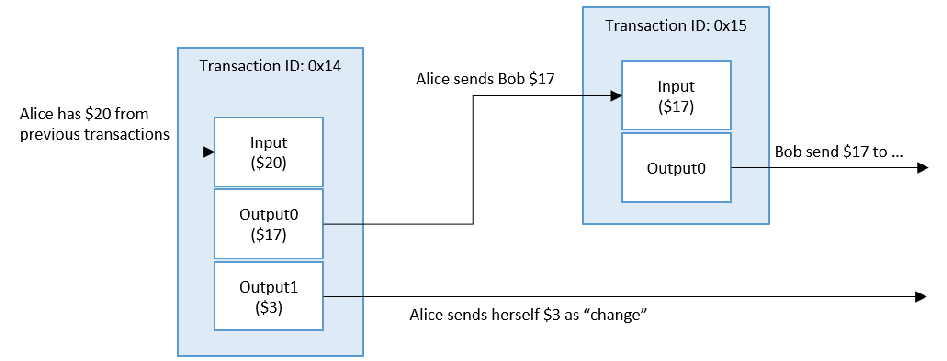
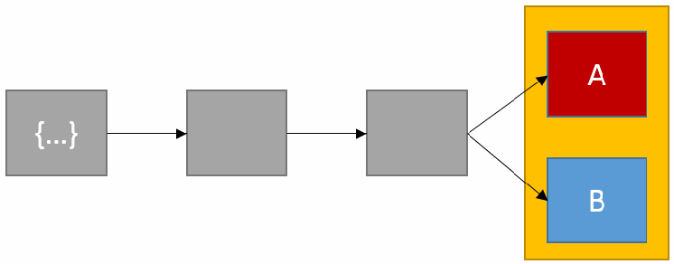
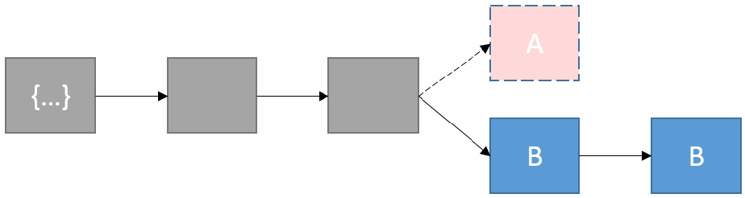
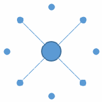
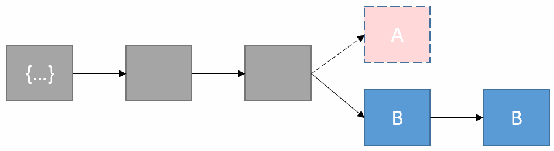
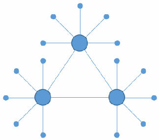
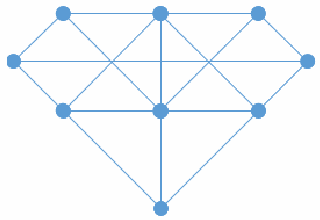
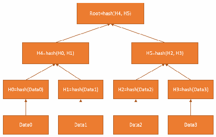

NIST IR 8202 日本語訳
英語タイトル : Blockchain Technology Overview日本語タイトル : ブロックチェーン技術の概要
公開日 : 2018-10-03
原文URL : https://csrc.nist.gov/pubs/ir/8202/final
翻訳編集 : 自動生成（有志による非公式の日本語訳）, 原文取得日 : 2026-10-31, 訳文 : 530 / 531 ブロック
[要約] NIST IR 8202 は、ブロックチェーン技術の高水準の技術的概要を示し、読者がその仕組みを理解できるようにすることを目的とした文書です。ブロックチェーンは、改ざんを検知でき、改ざんに耐性のあるデジタル台帳で、通常は中央の権威なしに分散して実装されると説明されています。本書は、ブロックチェーンの分類、構成要素、コンセンサスモデル、フォーク、スマートコントラクトを扱います。さらに、ブロックチェーンの限界と誤解、アプリケーションに関する考慮事項も取り上げています。
NISTIR 8202
NISTIR 8202
Blockchain Technology Overview
ブロックチェーン技術の概要
Dylan Yaga Peter Mell Nik Roby Karen Scarfone
Dylan Yaga Peter Mell Nik Roby Karen Scarfone
This publication is available free of charge from:
この刊行物は次から無料で入手できます:
https://doi.org/10.6028/NIST.IR.8202
https://doi.org/10.6028/NIST.IR.8202
［NIST のロゴ。公的な標章のため、この非公式サイトには掲載していません。原本 PDF を参照してください。］
NISTIR 8202
NISTIR 8202
Blockchain Technology Overview
ブロックチェーン技術の概要
Dylan Yaga Peter Mell Computer Security Division Information Technology Laboratory
Dylan Yaga Peter Mell コンピュータセキュリティ部門 情報技術研究所
Nik Roby G2, Inc. Annapolis Junction, MD
Nik Roby G2, Inc. Annapolis Junction, MD
Karen Scarfone Scarfone Cybersecurity Clifton, VA
Karen Scarfone Scarfone Cybersecurity Clifton, VA
This publication is available free of charge from:
この刊行物は次から無料で入手できます:
https://doi.org/10.6028/NIST.IR.8202
https://doi.org/10.6028/NIST.IR.8202
October 2018
2018 年 10 月
U.S. Department of Commerce Wilbur L. Ross, Jr., Secretary
米国商務省 Wilbur L. Ross, Jr. 長官
National Institute of Standards and Technology
National Institute of Standards and Technology
Walter Copan, NIST Director and Under Secretary of Commerce for Standards and Technology
Walter Copan、NIST 所長兼商務次官（標準・技術担当）
National Institute of Standards and Technology Internal Report 8202 66 pages (October 2018)
National Institute of Standards and Technology Internal Report 8202 66 ページ（2018 年 10 月）
This publication is available free of charge from: https://doi.org/10.6028/NIST.IR.8202
この刊行物は次から無料で入手できます: https://doi.org/10.6028/NIST.IR.8202
Certain commercial entities, equipment, or materials may be identified in this document in order to describe an experimental procedure or concept adequately. Such identification is not intended to imply recommendation or endorsement by NIST, nor is it intended to imply that the entities, materials, or equipment are necessarily the best available for the purpose.
実験の手順や概念を適切に説明するため、この文書では特定の商業団体、機器、資材が示されている場合があります。こうした記載は、NIST による推奨や承認を意味するものではなく、それらの団体、資材、機器が当該目的に最適であると意味するものでもありません。
There may be references in this publication to other publications currently under development by NIST in accordance with its assigned statutory responsibilities. The information in this publication, including concepts and methodologies, may be used by federal agencies even before the completion of such companion publications. Thus, until each publication is completed, current requirements, guidelines, and procedures, where they exist, remain operative. For planning and transition purposes, federal agencies may wish to closely follow the development of these new publications by NIST.
この刊行物では、NIST が法令上の責務に従って現在策定中の他の刊行物が参照されている場合があります。連邦機関は、そうした関連刊行物の完成前であっても、この刊行物の情報（概念や方法論を含む）を利用してかまいません。したがって、各刊行物が完成するまでは、現行の要件、ガイドライン、手順が存在する場合には、それらが引き続き有効です。計画および移行のため、連邦機関は、NIST によるこれらの新しい刊行物の策定状況を注意深く追うことを検討してもよいです。
Organizations are encouraged to review all draft publications during public comment periods and provide feedback to NIST. Many NIST cybersecurity publications, other than the ones noted above, are available at https://csrc.nist.gov/publications.
組織は、パブリックコメント期間中にすべてのドラフト刊行物を確認し、NIST にフィードバックを提供することが推奨されます。上記以外にも、NIST の多くのサイバーセキュリティ関連刊行物が https://csrc.nist.gov/publications で入手できます。
Comments on this publication may be submitted to:
この刊行物に対するコメントは、次の宛先に提出できます:
National Institute of Standards and Technology Attn: Computer Security Division, Information Technology Laboratory 100 Bureau Drive (Mail Stop 8930) Gaithersburg, MD 20899-8930 Email: nistir8202-comments@nist.gov
National Institute of Standards and Technology Attn: Computer Security Division, Information Technology Laboratory 100 Bureau Drive (Mail Stop 8930) Gaithersburg, MD 20899-8930 Email: nistir8202-comments@nist.gov
All comments are subject to release under the Freedom of Information Act (FOIA).
すべてのコメントは、情報自由法（FOIA）に基づいて公開される場合があります。
Reports on Computer Systems Technology
コンピュータシステム技術に関する報告書
The Information Technology Laboratory (ITL) at the National Institute of Standards and Technology (NIST) promotes the U.S. economy and public welfare by providing technical leadership for the Nation’s measurement and standards infrastructure. ITL develops tests, test methods, reference data, proof of concept implementations, and technical analyses to advance the development and productive use of information technology. ITL’s responsibilities include the development of management, administrative, technical, and physical standards and guidelines for the cost-effective security and privacy of other than national security-related information in federal information systems.
米国国立標準技術研究所（NIST）の情報技術研究所（ITL）は、米国の計量・標準基盤に技術面でのリーダーシップを提供することで、米国経済と公共の福祉を促進しています。ITL は、情報技術の開発と生産的な利用を進めるため、テスト、テスト方法、参照データ、概念実証実装、技術分析を開発しています。ITL の責務には、連邦情報システムにおける、国家安全保障に関係するもの以外の情報について、費用対効果の高いセキュリティとプライバシーを実現するための、管理面・行政面・技術面・物理面の標準とガイドラインの策定が含まれます。
Abstract
概要
Blockchains are tamper evident and tamper resistant digital ledgers implemented in a distributed fashion (i.e., without a central repository) and usually without a central authority (i.e., a bank, company, or government). At their basic level, they enable a community of users to record transactions in a shared ledger within that community, such that under normal operation of the blockchain network no transaction can be changed once published. This document provides a high-level technical overview of blockchain technology. The purpose is to help readers understand how blockchain technology works.
ブロックチェーンは、改ざんを検知でき、改ざんに耐性のあるデジタル台帳であり、分散された形で（すなわち、中央のリポジトリなしで）、通常は中央の権威（すなわち、銀行、企業、政府）なしで実装されます。基本的なレベルでは、ブロックチェーンによって、ユーザーのコミュニティが、そのコミュニティ内の共有台帳にトランザクションを記録できます。ブロックチェーンネットワークが正常に動作している限り、公開されたトランザクションは変更できません。この文書は、ブロックチェーン技術の高水準の技術的概要を示します。目的は、読者がブロックチェーン技術の仕組みを理解できるようにすることです。
Keywords
キーワード
blockchain; consensus model; cryptocurrency; cryptographic hash function; asymmetric-key cryptography; distributed ledger; distributed consensus algorithm; proof of work; proof of stake; round robin; proof of authority; proof of identity; proof of elapsed time; soft fork, hard fork; smart contracts; data oracle.
blockchain; consensus model; cryptocurrency; cryptographic hash function; asymmetric-key cryptography; distributed ledger; distributed consensus algorithm; proof of work; proof of stake; round robin; proof of authority; proof of identity; proof of elapsed time; soft fork, hard fork; smart contracts; data oracle.
Acknowledgments
謝辞
The authors wish to thank all contributors to this publication, and their colleagues who reviewed drafts of this report and contributed technical and editorial additions. This includes NIST staff James Dray, Sandy Ressler, Rick Kuhn, Lee Badger, Eric Trapnell, Mark Trapnell, James Shook and Michael Davidson.
著者は、この刊行物に貢献したすべての方々、ならびに報告書のドラフトを査読し、技術面・編集面で加筆してくれた同僚に感謝します。これには、NIST の職員である James Dray、Sandy Ressler、Rick Kuhn、Lee Badger、Eric Trapnell、Mark Trapnell、James Shook、Michael Davidson が含まれます。
Additional thanks to all the people and organizations who submitted comments during the public comment period.
パブリックコメント期間中にコメントを寄せてくださったすべての方々と組織にも、あらためて感謝します。
Audience
想定読者
This publication is designed for readers with little or no knowledge of blockchain technology who wish to understand at a high level how it works. It is not intended to be a technical guide; the discussion of the technology provides a conceptual understanding. Note that some examples, figures, and tables are simplified to fit the audience.
この刊行物は、ブロックチェーン技術についての知識がほとんど、またはまったくなく、その仕組みを高い水準で理解したい読者を対象としています。技術ガイドとなることを意図したものではなく、技術についての議論は概念的な理解を提供するものです。読者に合わせて、一部の例、図、表は簡略化されています。
Trademark Information
商標情報
All registered trademarks and trademarks belong to their respective organizations.
すべての登録商標および商標は、それぞれの組織に帰属します。
Executive Summary
エグゼクティブサマリー
Blockchains are tamper evident and tamper resistant digital ledgers implemented in a distributed fashion (i.e., without a central repository) and usually without a central authority (i.e., a bank, company, or government). At their basic level, they enable a community of users to record transactions in a shared ledger within that community, such that under normal operation of the blockchain network no transaction can be changed once published. In 2008, the blockchain idea was combined with several other technologies and computing concepts to create modern cryptocurrencies: electronic cash protected through cryptographic mechanisms instead of a central repository or authority. The first such blockchain based cryptocurrency was Bitcoin.
ブロックチェーンは、改ざんを検知でき、改ざんに耐性のあるデジタル台帳であり、分散された形で（すなわち、中央のリポジトリなしで）、通常は中央の権威（すなわち、銀行、企業、政府）なしで実装されます。基本的なレベルでは、ブロックチェーンによって、ユーザーのコミュニティが、そのコミュニティ内の共有台帳にトランザクションを記録できます。ブロックチェーンネットワークが正常に動作している限り、公開されたトランザクションは変更できません。2008 年に、ブロックチェーンの考え方が他のいくつかの技術やコンピューティングの概念と組み合わされて、現代の暗号通貨が生まれました。暗号通貨とは、中央のリポジトリや権威ではなく、暗号メカニズムによって保護される電子現金です。ブロックチェーンに基づく最初の暗号通貨は Bitcoin でした。
Within the Bitcoin blockchain, information representing electronic cash is attached to a digital address. Bitcoin users can digitally sign and transfer rights to that information to another user and the Bitcoin blockchain records this transfer publicly, allowing all participants of the network to independently verify the validity of the transactions. The Bitcoin blockchain is stored, maintained, and collaboratively managed by a distributed group of participants. This, along with certain cryptographic mechanisms, makes the blockchain resilient to attempts to alter the ledger later (modifying blocks or forging transactions).
Bitcoin ブロックチェーンでは、電子現金を表す情報がデジタルアドレスに結び付けられます。Bitcoin のユーザーは、その情報にデジタル署名を行い、その情報に対する権利を別のユーザーに移転することができ、Bitcoin ブロックチェーンはこの移転を公開で記録します。これにより、ネットワークのすべての参加者が、トランザクションの有効性を独立に検証できます。Bitcoin ブロックチェーンは、分散した参加者のグループによって保存、維持され、共同で管理されています。このことと、特定の暗号メカニズムにより、ブロックチェーンは、台帳を後から改変しようとする試み（ブロックの変更やトランザクションの偽造）に対して耐性を持ちます。
Because there are countless news articles and videos describing the “magic” of blockchain technology, this paper aims to describe the method behind the magic (i.e., how blockchain technology works). Arthur C. Clarke once wrote, “Any sufficiently advanced technology is indistinguishable from magic” [1]. Clarke’s statement is a perfect representation for the emerging applications of blockchain technology. There is hype around the use of blockchain technology, yet the technology is not well understood. It is not magical; it will not solve all problems. As with all new technology, there is a tendency to want to apply it to every sector in every way imaginable. To help promote correct application, this document provides information necessary to develop a high-level understanding of the technology.
ブロックチェーン技術の「魔法」を説明するニュース記事や動画は数えきれないほどあるため、この文書は、魔法の裏にある方法（すなわち、ブロックチェーン技術の仕組み）を説明することを目的とします。Arthur C. Clarke は、「十分に進んだ技術は、魔法と見分けがつかない」と書いたことがあります [1]。Clarke の言葉は、ブロックチェーン技術の新たな応用をよく表しています。ブロックチェーン技術の利用をめぐっては誇大な宣伝がありますが、この技術はよく理解されていません。これは魔法ではなく、すべての問題を解決するものでもありません。あらゆる新技術と同様に、あらゆる分野で考えうるあらゆる方法で適用したくなる傾向があります。正しい適用を促すため、この文書は、この技術を高い水準で理解するのに必要な情報を提供します。
Blockchain technology is the foundation of modern cryptocurrencies, so named because of the heavy usage of cryptographic functions. Users utilize public and private keys to digitally sign and securely transact within the system. For cryptocurrency based blockchain networks which utilize mining (see section 4.1), users may solve puzzles using cryptographic hash functions in hopes of being rewarded with a fixed amount of the cryptocurrency. However, blockchain technology may be more broadly applicable than cryptocurrencies. In this work, we focus on the cryptocurrency use case, since that is the primary use of the technology today; however, there is a growing interest in other sectors.
ブロックチェーン技術は現代の暗号通貨の基盤であり、暗号通貨という名称は、暗号関数が多用されていることに由来します。ユーザーは、公開鍵と秘密鍵を用いてデジタル署名を行い、システム内で安全にトランザクションを行います。マイニング（4.1 節を参照）を利用する暗号通貨ベースのブロックチェーンネットワークでは、ユーザーは、暗号ハッシュ関数を使ったパズルを解き、一定量の暗号通貨を報酬として得ることを期待する場合があります。しかし、ブロックチェーン技術の適用範囲は暗号通貨より広い可能性があります。この文書では、現在この技術の主な用途が暗号通貨であることから、暗号通貨のユースケースに焦点を当てます。ただし、他の分野への関心も高まっています。
Organizations considering implementing blockchain technology need to understand fundamental aspects of the technology. For example, what happens when an organization implements a blockchain network and then decides they need to make modifications to the data stored? When using a database, modifying the actual data can be accomplished through a database query and update. Organizations must understand that while changes to the actual blockchain data may be difficult, applications using the blockchain as a data layer work around this by treating later blocks and transactions as updates or modifications to earlier blocks and transactions. This software abstraction allows for modifications to working data, while providing a full history of changes. Another critical aspect of blockchain technology is how the participants agree that a transaction is valid. This is called “reaching consensus”, and there are many models for doing so, each with positives and negatives for particular business cases. It is important to understand that a blockchain is just one part of a solution.
ブロックチェーン技術の導入を検討する組織は、この技術の基本的な側面を理解する必要があります。たとえば、組織がブロックチェーンネットワークを導入した後で、保存したデータに修正が必要だと判断した場合には、何が起こるのでしょうか。データベースを使う場合、実際のデータの修正は、データベースへのクエリと更新で行えます。組織は、ブロックチェーンのデータそのものの変更は困難である場合があるものの、ブロックチェーンをデータ層として使うアプリケーションは、後のブロックやトランザクションを、以前のブロックやトランザクションに対する更新や修正として扱うことでこの問題を回避していることを理解しなければなりません。このソフトウェアによる抽象化により、作業用のデータを修正しながら、変更の完全な履歴を残すことができます。ブロックチェーン技術のもう 1 つの重要な側面は、トランザクションが有効であることに参加者がどのように合意するかです。これは「コンセンサスの形成」と呼ばれ、そのためのモデルは数多くあり、それぞれに個別のビジネスケースに応じた長所と短所があります。ブロックチェーンは、解決策の一部にすぎないことを理解しておくことが重要です。
Blockchain implementations are often designed with a specific purpose or function. Example functions include cryptocurrencies, smart contracts (software deployed on the blockchain and executed by computers running that blockchain), and distributed ledger systems between businesses. There has been a constant stream of developments in the field of blockchain technology, with new platforms being announced constantly – the landscape is continuously changing.
ブロックチェーンの実装は、特定の目的や機能を想定して設計されることが多くあります。機能の例には、暗号通貨、スマートコントラクト（ブロックチェーン上に配備され、そのブロックチェーンを実行するコンピューターによって実行されるソフトウェア）、企業間の分散台帳システムがあります。ブロックチェーン技術の分野では開発が絶え間なく続いており、新しいプラットフォームが次々と発表されています。状況は常に変化しています。
There are two general high-level categories for blockchain approaches that have been identified: permissionless, and permissioned. In a permissionless blockchain network anyone can read and write to the blockchain without authorization. Permissioned blockchain networks limit participation to specific people or organizations and allow finer-grained controls. Knowing the differences between these two categories allows an organization to understand which subset of blockchain technologies may be applicable to its needs.
ブロックチェーンのアプローチは、大きく 2 つの高水準のカテゴリに分類されることが確認されています。非許可型と許可型です。非許可型のブロックチェーンネットワークでは、誰でも認可なしにブロックチェーンの読み取りと書き込みを行えます。許可型のブロックチェーンネットワークは、参加を特定の個人または組織に限定し、よりきめ細かな制御を可能にします。この 2 つのカテゴリの違いを知ることで、組織は、自らのニーズに適用できる可能性のあるブロックチェーン技術がどの部分集合であるかを理解できます。
Despite the many variations of blockchain networks and the rapid development of new blockchain related technologies, most blockchain networks use common core concepts. Blockchains are a distributed ledger comprised of blocks. Each block is comprised of a block header containing metadata about the block, and block data containing a set of transactions and other related data. Every block header (except for the very first block of the blockchain) contains a cryptographic link to the previous block’s header. Each transaction involves one or more blockchain network users and a recording of what happened, and it is digitally signed by the user who submitted the transaction.
ブロックチェーンネットワークにはさまざまなバリエーションがあり、ブロックチェーン関連の新技術が急速に開発されていますが、ほとんどのブロックチェーンネットワークは共通の中核概念を用いています。ブロックチェーンは、ブロックから構成される分散台帳です。各ブロックは、そのブロックに関するメタデータを含むブロックヘッダーと、トランザクションの集合およびその他の関連データを含むブロックデータから構成されます。すべてのブロックヘッダー（ブロックチェーンの最初のブロックを除く）は、直前のブロックのヘッダーへの暗号学的なリンクを含みます。各トランザクションは、1 人以上のブロックチェーンネットワークのユーザーと、何が起きたかの記録を含み、トランザクションを提出したユーザーによってデジタル署名されます。
Blockchain technology takes existing, proven concepts and merges them together into a single solution. This document explores the fundamentals of how these technologies work and the differences between blockchain approaches. This includes how the participants in the network come to agree on whether a transaction is valid and what happens when changes need to be made to an existing blockchain deployment. Additionally, this document explores when to consider using a blockchain network.
ブロックチェーン技術は、既存の実績ある概念を取り入れ、1 つの解決策に統合したものです。この文書は、これらの技術の仕組みの基礎と、ブロックチェーンのアプローチ間の違いを探ります。これには、ネットワークの参加者がトランザクションの有効性についてどのように合意するか、および既存のブロックチェーン配備に変更が必要になったときに何が起こるかが含まれます。さらにこの文書は、ブロックチェーンネットワークの利用をいつ検討すべきかも探ります。
The use of blockchain technology is not a silver bullet, and there are issues that must be considered such as how to deal with malicious users, how controls are applied, and the limitations of the implementations. Beyond the technology issues that need to be considered, there are operational and governance issues that affect the behavior of the network. For example, in permissioned blockchain networks, described later in this document, there are design issues surrounding what entity or entities will operate and govern the network for the intended user base.
ブロックチェーン技術の利用は万能薬ではなく、悪意のあるユーザーへの対処方法、制御の適用方法、実装の限界など、考慮しなければならない問題があります。検討すべき技術的な問題に加えて、ネットワークの挙動に影響する運用上およびガバナンス上の問題があります。たとえば、この文書の後半で説明する許可型のブロックチェーンネットワークでは、想定するユーザー基盤に対して、どのエンティティがネットワークを運用し、統治するのかという設計上の問題があります。
Blockchain technology is still new and should be investigated with the mindset of “how could blockchain technology potentially benefit us?” rather than “how can we make our problem fit into the blockchain technology paradigm?”. Organizations should treat blockchain technology like they would any other technological solution at their disposal and use it in appropriate situations.
ブロックチェーン技術はまだ新しく、「自分たちの問題をブロックチェーン技術のパラダイムに合わせるにはどうすればよいか」ではなく、「ブロックチェーン技術は自分たちにどのような利益をもたらしうるか」という考え方で調べるべきです。組織は、ブロックチェーン技術を、自らが利用できる他の技術的解決策と同じように扱い、適切な状況で利用すべきです。
Table of Contents
目次
List of Appendices
付録の一覧
List of Tables and Figures
表と図の一覧
1 Introduction
1 はじめに
Blockchains are tamper evident and tamper resistant digital ledgers implemented in a distributed fashion (i.e., without a central repository) and usually without a central authority (i.e., a bank, company or government). At their basic level, they enable a community of users to record transactions in a shared ledger within that community, such that under normal operation of the blockchain network no transaction can be changed once published. In 2008, the blockchain idea was combined with several other technologies and computing concepts to create modern cryptocurrencies: electronic cash protected through cryptographic mechanisms instead of a central repository or authority.
ブロックチェーンは、改ざんを検知でき、改ざんに耐性のあるデジタル台帳であり、分散された形で（すなわち、中央のリポジトリなしで）、通常は中央の権威（すなわち、銀行、企業、政府）なしで実装されます。基本的なレベルでは、ブロックチェーンによって、ユーザーのコミュニティが、そのコミュニティ内の共有台帳にトランザクションを記録できます。ブロックチェーンネットワークが正常に動作している限り、公開されたトランザクションは変更できません。2008 年に、ブロックチェーンの考え方が他のいくつかの技術やコンピューティングの概念と組み合わされて、現代の暗号通貨が生まれました。暗号通貨とは、中央のリポジトリや権威ではなく、暗号メカニズムによって保護される電子現金です。
This technology became widely known in 2009 with the launch of the Bitcoin network, the first of many modern cryptocurrencies. In Bitcoin, and similar systems, the transfer of digital information that represents electronic cash takes place in a distributed system. Bitcoin users can digitally sign and transfer their rights to that information to another user and the Bitcoin blockchain records this transfer publicly, allowing all participants of the network to independently verify the validity of the transactions. The Bitcoin blockchain is independently maintained and managed by a distributed group of participants. This, along with cryptographic mechanisms, makes the blockchain resilient to attempts to alter the ledger later (modifying blocks or forging transactions). Blockchain technology has enabled the development of many cryptocurrency systems such as Bitcoin and Ethereum1. Because of this, blockchain technology is often viewed as bound to Bitcoin or possibly cryptocurrency solutions in general. However, the technology is available for a broader variety of applications and is being investigated for a variety of sectors.
この技術は、2009 年に、現代の数多くの暗号通貨の最初である Bitcoin ネットワークが開始されたことで広く知られるようになりました。Bitcoin と同様のシステムでは、電子現金を表すデジタル情報の移転が分散システム上で行われます。Bitcoin のユーザーは、その情報に対する権利をデジタル署名して別のユーザーに移転することができ、Bitcoin ブロックチェーンはこの移転を公開で記録します。これにより、ネットワークのすべての参加者が、トランザクションの有効性を独立に検証できます。Bitcoin ブロックチェーンは、分散した参加者のグループによって独立に維持、管理されています。このことと暗号メカニズムにより、ブロックチェーンは、台帳を後から改変しようとする試み（ブロックの変更やトランザクションの偽造）に対して耐性を持ちます。ブロックチェーン技術によって、Bitcoin や Ethereum1 などの多くの暗号通貨システムの開発が可能になりました。このため、ブロックチェーン技術は Bitcoin、あるいは暗号通貨の解決策全般と結び付いたものと見なされることがよくあります。しかし、この技術はより多様な用途に利用でき、さまざまな分野で検討が進められています。
The numerous components of blockchain technology along with its reliance on cryptographic primitives and distributed systems can make it challenging to understand. However, each component can be described simply and used as a building block to understand the larger complex system. Blockchains can be informally defined as:
ブロックチェーン技術には数多くの構成要素があり、暗号プリミティブや分散システムにも依存しているため、理解するのが難しい場合があります。しかし、各構成要素は単純に説明でき、より大きく複雑なシステムを理解するための構成部品として使えます。ブロックチェーンは、次のように非公式に定義できます。
Blockchains are distributed digital ledgers of cryptographically signed transactions that are grouped into blocks. Each block is cryptographically linked to the previous one (making it tamper evident) after validation and undergoing a consensus decision. As new blocks are added, older blocks become more difficult to modify (creating tamper resistance). New blocks are replicated across copies of the ledger within the network, and any conflicts are resolved automatically using established rules.
ブロックチェーンとは、暗号学的に署名されたトランザクションをブロックにまとめた、分散型のデジタル台帳です。各ブロックは、検証とコンセンサスによる決定を経た後、直前のブロックに暗号学的にリンクされます（これにより改ざんを検知できます）。新しいブロックが追加されるにつれて、古いブロックは変更しにくくなります（これにより改ざん耐性が生まれます）。新しいブロックは、ネットワーク内の台帳の各コピーに複製され、競合は確立された規則によって自動的に解決されます。
1.1 Background and History
1.1 背景と歴史
The core ideas behind blockchain technology emerged in the late 1980s and early 1990s. In 1989, Leslie Lamport developed the Paxos protocol, and in 1990 submitted the paper The Part-Time Parliament [2] to ACM Transactions on Computer Systems; the paper was finally published in a 1998 issue. The paper describes a consensus model for reaching agreement on a result in a network of computers where the computers or network itself may be unreliable. In 1991, a signed chain of information was used as an electronic ledger for digitally signing documents in a way that could easily show none of the signed documents in the collection had been changed [3]. These concepts were combined and applied to electronic cash in 2008 and described in the paper, Bitcoin: A Peer to Peer Electronic Cash System [4], which was published pseudonymously by Satoshi Nakamoto, and then later in 2009 with the establishment of the Bitcoin cryptocurrency blockchain network. Nakamoto’s paper contained the blueprint that most modern cryptocurrency schemes follow (although with variations and modifications). Bitcoin was just the first of many blockchain applications.
ブロックチェーン技術の中核となる考え方は、1980 年代後半から 1990 年代前半に登場しました。1989 年に Leslie Lamport が Paxos プロトコルを開発し、1990 年に論文 The Part-Time Parliament [2] を ACM Transactions on Computer Systems に投稿しました。この論文が実際に掲載されたのは 1998 年の号でした。この論文は、コンピューターやネットワーク自体が信頼できない場合がある、コンピューターのネットワークにおいて、結果について合意に達するためのコンセンサスモデルを説明しています。1991 年には、署名付きの情報の連鎖が、文書にデジタル署名するための電子台帳として使われ、集められた署名済み文書のどれも変更されていないことを容易に示せるようになりました [3]。これらの概念が組み合わされて 2008 年に電子現金に適用され、Satoshi Nakamoto が匿名で発表した論文 Bitcoin: A Peer to Peer Electronic Cash System [4] に記述されました。その後 2009 年に、Bitcoin 暗号通貨のブロックチェーンネットワークが確立されました。Nakamoto の論文には、現代の暗号通貨方式の大半が（バリエーションや修正はあるものの）従っている設計図が含まれていました。Bitcoin は、数多くあるブロックチェーンのアプリケーションの最初のものにすぎませんでした。
Many electronic cash schemes existed prior to Bitcoin (e.g., ecash and NetCash), but none of them achieved widespread use. The use of a blockchain enabled Bitcoin to be implemented in a distributed fashion such that no single user controlled the electronic cash and no single point of failure existed; this promoted its use. Its primary benefit was to enable direct transactions between users without the need for a trusted third party. It also enabled the issuance of new cryptocurrency in a defined manner to those users who manage to publish new blocks and maintain copies of the ledger; such users are called miners in Bitcoin. The automated payment of the miners enabled distributed administration of the system without the need to organize. By using a blockchain and consensus-based maintenance, a self-policing mechanism was created that ensured that only valid transactions and blocks were added to the blockchain.
Bitcoin 以前にも、多くの電子現金方式（たとえば ecash や NetCash）が存在しましたが、広く使われるようになったものはありませんでした。ブロックチェーンを使うことで、Bitcoin は、電子現金を単独で管理するユーザーも単一障害点も存在しない、分散された形で実装できました。これが Bitcoin の普及を促しました。その主な利点は、信頼できる第三者を必要とせずに、ユーザー間の直接のトランザクションを可能にしたことです。また、新しいブロックの公開と台帳のコピーの維持に成功したユーザーに、新たな暗号通貨を定められた方法で発行することも可能にしました。こうしたユーザーは、Bitcoin ではマイナーと呼ばれます。マイナーへの支払いを自動化したことで、組織化することなく、システムを分散して運営できるようになりました。ブロックチェーンとコンセンサスに基づく維持管理を用いることで、有効なトランザクションとブロックだけがブロックチェーンに追加されることを保証する、自己監視の仕組みが作られました。
In Bitcoin, the blockchain enabled users to be pseudonymous. This means that users are anonymous, but their account identifiers are not; additionally, all transactions are publicly visible. This has effectively enabled Bitcoin to offer pseudo-anonymity because accounts can be created without any identification or authorization process (such processes are typically required by Know-Your-Customer (KYC) laws).
Bitcoin では、ブロックチェーンによってユーザーが仮名で利用できるようになりました。これは、ユーザーは匿名であるものの、アカウント識別子は匿名ではないことを意味します。さらに、すべてのトランザクションが公開されて見える状態になります。アカウントは、本人確認や認可の手続き（そうした手続きは通常、顧客確認（KYC）に関する法律で求められます）なしに作成できるため、これによって Bitcoin は実質的に疑似匿名性を提供できるようになりました。
Since Bitcoin was pseudonymous, it was essential to have mechanisms to create trust in an environment where users could not be easily identified. Prior to the use of blockchain technology, this trust was typically delivered through intermediaries trusted by both parties. Without trusted intermediaries, the needed trust within a blockchain network is enabled by four key characteristics of blockchain technology, described below:
Bitcoin は仮名で利用されるものであったため、ユーザーを容易に特定できない環境で信頼を生み出す仕組みが不可欠でした。ブロックチェーン技術が使われる以前は、この信頼は、通常、双方が信頼する仲介者を通じて提供されていました。信頼できる仲介者がいない場合、ブロックチェーンネットワーク内で必要な信頼は、以下に示すブロックチェーン技術の 4 つの主な特性によって実現されます。
•Ledger – the technology uses an append only ledger to provide full transactional history. Unlike traditional databases, transactions and values in a blockchain are not overridden.
•台帳 – この技術は、追記専用の台帳を使って、トランザクションの完全な履歴を提供します。従来のデータベースとは異なり、ブロックチェーンのトランザクションと値は上書きされません。
•Secure – blockchains are cryptographically secure, ensuring that the data contained within the ledger has not been tampered with, and that the data within the ledger is attestable.
•安全性 – ブロックチェーンは暗号学的に安全であり、台帳に含まれるデータが改ざんされていないこと、および台帳内のデータがアテステーション可能であることを保証します。
•Shared – the ledger is shared amongst multiple participants. This provides transparency across the node participants in the blockchain network.
•共有 – 台帳は複数の参加者の間で共有されます。これにより、ブロックチェーンネットワークのノードの参加者の間に透明性がもたらされます。
•Distributed – the blockchain can be distributed. This allows for scaling the number of nodes of a blockchain network to make it more resilient to attacks by bad actors. By increasing the number of nodes, the ability for a bad actor to impact the consensus protocol used by the blockchain is reduced.
•分散 – ブロックチェーンは分散させることができます。これにより、ブロックチェーンネットワークのノード数を拡張して、悪意のある行為者による攻撃への耐性を高めることができます。ノード数を増やすことで、悪意のある行為者がブロックチェーンで使われるコンセンサスプロトコルに影響を与える能力が低下します。
For blockchain networks that allow anyone to anonymously create accounts and participate (called permissionless blockchain networks), these capabilities deliver a level of trust amongst parties with no prior knowledge of one another; this trust can enable individuals and organizations to transact directly, which may result in transactions being delivered faster and at lower costs. For a blockchain network that more tightly controls access (called permissioned blockchain networks), where some trust may be present among users, these capabilities help to bolster that trust.
誰でも匿名でアカウントを作成して参加できるブロックチェーンネットワーク（非許可型ブロックチェーンネットワークと呼ばれます）では、これらの能力によって、互いに面識のない当事者間にある程度の信頼がもたらされます。この信頼により、個人や組織が直接トランザクションを行えるようになり、トランザクションがより速く、より低コストで行われる可能性があります。アクセスをより厳しく制御するブロックチェーンネットワーク（許可型ブロックチェーンネットワークと呼ばれます）では、ユーザー間にある程度の信頼がすでに存在する場合があり、これらの能力はその信頼を強化するのに役立ちます。
1.2 Purpose and Scope
1.2 目的と範囲
This document provides a high-level technical overview of blockchain technology. It looks at different categories of implementation approaches. It discusses the components of blockchain technology and provides diagrams and examples when possible. It discusses, at a high-level, some consensus models used in blockchain networks. It also provides an overview of how blockchain technology changes (known as forking) affect the blockchain network. It provides details on how blockchain technology was extended beyond attestable transactions to include attestable application processes known as smart contracts. It also touches on some of the limitations and misconceptions surrounding the technology. Finally, this document presents several areas that organizations should consider when investigating blockchain technology. It is intended to help readers to understand the technologies which comprise blockchain networks.
この文書は、ブロックチェーン技術の高水準の技術的概要を示します。実装方法のさまざまなカテゴリを取り上げ、ブロックチェーン技術の構成要素を説明し、可能な限り図や例を示します。ブロックチェーンネットワークで使われるいくつかのコンセンサスモデルを、高い水準で説明します。また、ブロックチェーン技術の変更（フォークと呼ばれます）がブロックチェーンネットワークにどのような影響を与えるかについても概説します。さらに、ブロックチェーン技術が、アテステーション可能なトランザクションを超えて、スマートコントラクトと呼ばれるアテステーション可能なアプリケーションの処理を含むように拡張された経緯について詳しく説明します。この技術をめぐる限界や誤解にも触れます。最後に、組織がブロックチェーン技術を調査する際に考慮すべきいくつかの領域を示します。この文書は、読者がブロックチェーンネットワークを構成する技術を理解するのを助けることを目的としています。
1.3 Notes on Terms
1.3 用語に関する注記
The terminology for blockchain technology varies from one implementation to the next – to talk about the technology, generic terms will be used. Throughout this document the following terms will be used:
ブロックチェーン技術の用語は実装ごとに異なるため、この技術について論じるには一般的な用語を使います。この文書全体で、次の用語を使います。
•Blockchain – the actual ledger
•ブロックチェーン – 実際の台帳
•Blockchain technology – a term to describe the technology in the most generic form
•ブロックチェーン技術 – 最も一般的な形でこの技術を表す用語
•Blockchain network – the network in which a blockchain is being used
•ブロックチェーンネットワーク – ブロックチェーンが使われているネットワーク
•Blockchain implementation – a specific blockchain
•ブロックチェーンの実装 – 特定のブロックチェーン
•Blockchain network user – a person, organization, entity, business, government, etc. which is utilizing the blockchain network
•ブロックチェーンネットワークのユーザー – ブロックチェーンネットワークを利用している個人、組織、エンティティ、企業、政府など
•Node – an individual system within a blockchain network
•ノード – ブロックチェーンネットワーク内の個々のシステム
•Full node – a node that stores the entire blockchain, ensures transactions are valid
•フルノード – ブロックチェーン全体を保存し、トランザクションが有効であることを確認するノード
•Publishing node – a full node that also publishes new blocks
•公開ノード – 新しいブロックも公開するフルノード
•Lightweight node – a node that does not store or maintain a copy of the blockchain and must pass their transactions to full nodes
•ライトウェイトノード – ブロックチェーンのコピーを保存も維持もしないため、そのトランザクションをフルノードに渡さなければならないノード
1.4 Results of the Public Comment Period
1.4 パブリックコメント期間の結果
This document has seen substantial revision in response to the public comments received. Part of the revising process was to tighten the scope, and to provide a more foundational document as an introduction to the technology. Please note that several sections present in the draft (7.1.2 -Permissioned Use Cases, 7.2.2 - Permissionless Use Cases, and 8 - Blockchain Platforms) are not present in the published version. These topics were made explicitly out of scope for this document because the rapidly changing landscape and areas of interest around this technology, as well as the ever-increasing number of platforms, would make these sections out of place in such a foundational document. The topics in these sections are still being considered for future works.
この文書は、寄せられたパブリックコメントを受けて大幅に改訂されました。改訂の過程では、範囲を絞り込み、この技術の入門として、より基礎的な文書にしました。ドラフトにあった複数の節（7.1.2 - 許可型のユースケース、7.2.2 - 非許可型のユースケース、8 - ブロックチェーンプラットフォーム）が、公開版にはないことに注意してください。この技術をめぐる状況や関心分野が急速に変化し、プラットフォームの数も増え続けていることから、これらの節はこのような基礎的な文書にはそぐわないため、これらの話題は明示的にこの文書の範囲外としました。これらの節の話題は、今後の文書での扱いとして引き続き検討されています。
Additionally, section 8.1.2 – Bitcoin Cash contained an erroneous and unverified statement which was not identified and removed during initial editing of the draft. Since this section has been removed, this issue is now addressed.
また、8.1.2 節の Bitcoin Cash には、ドラフトの初期編集の段階で特定・削除されなかった、誤りがあり検証されていない記述が含まれていました。この節は削除されたため、この問題は解消されています。
1.5 Document Structure
1.5 文書の構成
The rest of this document is organized as follows:
この文書の残りは、次のように構成されています。
•Section 2 discusses the high-level categorization of blockchain technology: permissionless and permissioned.
•2 節では、ブロックチェーン技術の高水準の分類である非許可型と許可型を説明します。
•Section 3 defines the high-level components of a blockchain network architecture, including hashes, transactions, ledgers, blocks, and blockchains.
•3 節では、ハッシュ、トランザクション、台帳、ブロック、ブロックチェーンなど、ブロックチェーンネットワークのアーキテクチャの高水準の構成要素を定義します。
•Section 4 discusses several consensus models employed by blockchain technology.
•4 節では、ブロックチェーン技術で採用されているいくつかのコンセンサスモデルを説明します。
•Section 5 introduces the concept of forking.
•5 節では、フォークの概念を紹介します。
•Section 6 discusses smart contracts.
•6 節では、スマートコントラクトを説明します。
•Section 7 discusses several limitations as well as misconceptions surrounding blockchain technology.
•7 節では、ブロックチェーン技術をめぐるいくつかの限界と誤解を説明します。
•Section 8 discusses various application considerations, as well as provides additional considerations from government, academia, and technology enthusiasts.
•8 節では、アプリケーションに関するさまざまな考慮事項を説明するとともに、政府、学術界、技術愛好家による追加の考慮事項も示します。
•Section 9 is the conclusion.
•9 節は結論です。
•Appendix A provides a list of acronyms and abbreviations used in the document.
•付録 A は、この文書で使われている略語の一覧を示します。
•Appendix B contains a glossary for selected terms defined in the document.
•付録 B は、この文書で定義されている一部の用語の用語集です。
•Appendix C lists the references used throughout the document.
•付録 C は、この文書全体で使われている参考文献を挙げます。
2 Blockchain Categorization
2 ブロックチェーンの分類
Blockchain networks can be categorized based on their permission model, which determines who can maintain them (e.g., publish blocks). If anyone can publish a new block, it is permissionless. If only particular users can publish blocks, it is permissioned. In simple terms, a permissioned blockchain network is like a corporate intranet that is controlled, while a permissionless blockchain network is like the public internet, where anyone can participate. Permissioned blockchain networks are often deployed for a group of organizations and individuals, typically referred to as a consortium. This distinction is necessary to understand as it impacts some of the blockchain components discussed later in this document.
ブロックチェーンネットワークは、誰がそれを維持（たとえばブロックを公開）できるかを決める、パーミッションモデルに基づいて分類できます。誰でも新しいブロックを公開できるなら、非許可型です。特定のユーザーだけがブロックを公開できるなら、許可型です。簡単に言えば、許可型のブロックチェーンネットワークは管理された企業のイントラネットのようなものであり、非許可型のブロックチェーンネットワークは、誰でも参加できる公共のインターネットのようなものです。許可型のブロックチェーンネットワークは、通常コンソーシアムと呼ばれる、組織や個人のグループのために配備されることが多くあります。この区別は、この文書の後半で説明するブロックチェーンの構成要素のいくつかに影響するため、理解しておく必要があります。
2.1 Permissionless
2.1 非許可型
Permissionless blockchain networks are decentralized ledger platforms open to anyone publishing blocks, without needing permission from any authority. Permissionless blockchain platforms are often open source software, freely available to anyone who wishes to download them. Since anyone has the right to publish blocks, this results in the property that anyone can read the blockchain as well as issue transactions on the blockchain (through including those transactions within published blocks). Any blockchain network user within a permissionless blockchain network can read and write to the ledger. Since permissionless blockchain networks are open to all to participate, malicious users may attempt to publish blocks in a way that subverts the system (discussed in detail later). To prevent this, permissionless blockchain networks often utilize a multiparty agreement or ‘consensus’ system (see Section 4) that requires users to expend or maintain resources when attempting to publish blocks. This prevents malicious users from easily subverting the system. Examples of such consensus models include proof of work (see Section 4.1) and proof of stake (see Section 4.2) methods. The consensus systems in permissionless blockchain networks usually promote non-malicious behavior through rewarding the publishers of protocol-conforming blocks with a native cryptocurrency.
非許可型ブロックチェーンネットワークは、いかなる権限者の許可も必要とせず、誰でもブロックを公開できる分散型台帳プラットフォームです。非許可型ブロックチェーンプラットフォームは、多くの場合オープンソースソフトウェアであり、ダウンロードを希望する誰もが自由に利用できます。誰でもブロックを公開する権利を持つため、誰でもブロックチェーンを読み取り、公開されたブロックにトランザクションを含めることで、ブロックチェーン上にトランザクションを発行できます。非許可型ブロックチェーンネットワークのユーザーは誰でも、台帳を読み書きできます。誰でも参加できるため、悪意のあるユーザーがシステムを覆すような方法でブロックを公開しようとする場合があります（後で詳しく説明します）。これを防ぐため、非許可型ブロックチェーンネットワークでは、多くの場合、ブロックの公開時にユーザーがリソースを消費または維持することを求める複数当事者の合意、すなわち「コンセンサス」の仕組み（4 節を参照）が使われます。これにより、悪意のあるユーザーがシステムを簡単に覆すことを防ぎます。このようなコンセンサスモデルの例には、プルーフ・オブ・ワーク（4.1 節を参照）やプルーフ・オブ・ステーク（4.2 節を参照）の方式があります。非許可型ブロックチェーンネットワークのコンセンサスシステムは、通常、プロトコルに準拠したブロックの公開者にそのネットワーク固有の暗号通貨を報酬として与えることで、悪意のない行動を促します。
2.2 Permissioned
2.2 許可型
Permissioned blockchain networks are ones where users publishing blocks must be authorized by some authority (be it centralized or decentralized). Since only authorized users are maintaining the blockchain, it is possible to restrict read access and to restrict who can issue transactions. Permissioned blockchain networks may thus allow anyone to read the blockchain or they may restrict read access to authorized individuals. They also may allow anyone to submit transactions to be included in the blockchain or, again, they may restrict this access only to authorized individuals. Permissioned blockchain networks may be instantiated and maintained using open source or closed source software.
許可型のブロックチェーンネットワークとは、ブロックを公開するユーザーが、（中央集権的であれ分散的であれ）何らかの権威によって認可されていなければならないネットワークです。認可されたユーザーだけがブロックチェーンを維持するため、読み取りアクセスや、トランザクションを発行できる者を制限することが可能です。したがって、許可型のブロックチェーンネットワークでは、誰にでもブロックチェーンの読み取りを許可することも、読み取りアクセスを認可された個人に制限することもできます。また、ブロックチェーンに含めるトランザクションを誰でも提出できるようにすることも、同様に、このアクセスを認可された個人だけに制限することもできます。許可型のブロックチェーンネットワークは、オープンソースまたはクローズドソースのソフトウェアを使ってインスタンス化し、維持できます。
Permissioned blockchain networks can have the same traceability of digital assets as they pass through the blockchain, as well as the same distributed, resilient, and redundant data storage system as a permissionless blockchain networks. They also use consensus models for publishing blocks, but these methods often do not require the expense or maintenance of resources (as is the case with current permissionless blockchain networks). This is because the establishment of one’s identity is required to participate as a member of the permissioned blockchain network; those maintaining the blockchain have a level of trust with each other, since they were all authorized to publish blocks and since their authorization can be revoked if they misbehave. Consensus models in permissioned blockchain networks are then usually faster and less computationally expensive.
許可型のブロックチェーンネットワークは、非許可型のブロックチェーンネットワークと同様に、デジタル資産がブロックチェーンを通過する際の追跡可能性と、分散型で耐障害性のある冗長なデータ保存システムを備えることができます。ブロックの公開にもコンセンサスモデルを使いますが、これらの方式は、（現在の非許可型のブロックチェーンネットワークとは異なり）リソースの消費や維持を必要としないことが多くあります。これは、許可型のブロックチェーンネットワークのメンバーとして参加するには、本人のアイデンティティの確立が必要だからです。ブロックチェーンを維持する者は全員がブロックの公開を認可されており、不正行為をすれば認可を取り消されうるため、互いにある程度の信頼関係を持ちます。そのため、許可型のブロックチェーンネットワークのコンセンサスモデルは、通常、より高速で、計算コストも低くなります。
Permissioned blockchain networks may also be used by organizations that need to more tightly control and protect their blockchain. However, if a single entity controls who can publish blocks, the users of the blockchain will need to have trust in that entity. Permissioned blockchain networks may also be used by organizations that wish to work together but may not fully trust one another. They can establish a permissioned blockchain network and invite business partners to record their transactions on a shared distributed ledger. These organizations can determine the consensus model to be used, based on how much they trust one another. Beyond trust, permissioned blockchain networks provide transparency and insight that may help better inform business decisions and hold misbehaving parties accountable. This can explicitly include auditing and oversight entities making audits a constant occurrence versus a periodic event.
許可型のブロックチェーンネットワークは、ブロックチェーンをより厳しく管理・保護する必要がある組織によっても使われます。ただし、ブロックを公開できる者を単一のエンティティが管理する場合、ブロックチェーンのユーザーはそのエンティティを信頼する必要があります。許可型のブロックチェーンネットワークは、協力したいが互いを完全には信頼していない可能性のある組織によっても使われます。そうした組織は、許可型のブロックチェーンネットワークを構築し、ビジネスパートナーを招いて、共有の分散台帳にトランザクションを記録してもらうことができます。これらの組織は、互いをどの程度信頼しているかに基づいて、使用するコンセンサスモデルを決定できます。信頼のほかにも、許可型のブロックチェーンネットワークは、ビジネス上の意思決定の判断材料を充実させ、不正行為を行った当事者の責任を問うのに役立つ透明性と洞察を提供します。これには、監査・監督を担うエンティティを明示的に含めることができ、監査を定期的な行事ではなく、常時行われるものにできます。
Some permissioned blockchain networks support the ability to selectively reveal transaction information based on a blockchain network users identity or credentials. With this feature, some degree of privacy in transactions may be obtained. For example, it could be that the blockchain records that a transaction between two blockchain network users took place, but the actual contents of transactions is only accessible to the involved parties.
許可型のブロックチェーンネットワークの中には、ブロックチェーンネットワークのユーザーのアイデンティティや認証情報に基づいて、トランザクション情報を選択的に開示できる機能をサポートするものがあります。この機能により、トランザクションにある程度のプライバシーを確保できる場合があります。たとえば、ブロックチェーンには 2 人のブロックチェーンネットワークユーザー間でトランザクションが行われたことだけが記録され、トランザクションの実際の内容には関係当事者だけがアクセスできる、といったことが考えられます。
Some permissioned blockchain networks require all users to be authorized to send and receive transactions (they are not anonymous, or even pseudo-anonymous). In such systems parties work together to achieve a shared business process with natural disincentives to commit fraud or otherwise behave as a bad actor (since they can be identified). If bad behavior were to occur, it is well known where the organizations are incorporated, what legal remedies are available and how to pursue those remedies in the relevant judicial system.
許可型のブロックチェーンネットワークの中には、すべてのユーザーがトランザクションの送受信を認可されていることを求めるものがあります（ユーザーは匿名でも疑似匿名でもありません）。このようなシステムでは、当事者が協力して共通の業務プロセスを実現し、（身元を特定されうるため）不正行為やその他の悪意ある行動を行うことに対する自然な抑止力が働きます。不正な行為が起きた場合、その組織がどこで法人として設立されているか、どのような法的救済が利用でき、関係する司法制度の下でその救済をどのように追求するかは、よく知られています。
3 Blockchain Components
3 ブロックチェーンの構成要素
Blockchain technology can seem complex; however, it can be simplified by examining each component individually. At a high level, blockchain technology utilizes well-known computer science mechanisms and cryptographic primitives (cryptographic hash functions, digital signatures, asymmetric-key cryptography) mixed with record keeping concepts (such as append only ledgers). This section discusses each individual main component: cryptographic hash functions, transactions, asymmetric-key cryptography, addresses, ledgers, blocks, and how blocks are chained together.
ブロックチェーン技術は複雑に見えることがありますが、各構成要素を個別に調べることで単純化できます。高い水準では、ブロックチェーン技術は、よく知られたコンピューターサイエンスの仕組みや暗号プリミティブ（暗号ハッシュ関数、デジタル署名、公開鍵暗号）を、記録管理の概念（追記専用の台帳など）と組み合わせて利用しています。この節では、主要な構成要素である、暗号ハッシュ関数、トランザクション、公開鍵暗号、アドレス、台帳、ブロック、およびブロックを連鎖させる方法を、それぞれ説明します。
3.1 Cryptographic Hash Functions
3.1 暗号ハッシュ関数
An important component of blockchain technology is the use of cryptographic hash functions for many operations. Hashing is a method of applying a cryptographic hash function to data, which calculates a relatively unique output (called a message digest, or just digest) for an input of nearly any size (e.g., a file, text, or image). It allows individuals to independently take input data, hash that data, and derive the same result – proving that there was no change in the data. Even the smallest change to the input (e.g., changing a single bit) will result in a completely different output digest. Table 1 shows simple examples of this.
ブロックチェーン技術の重要な構成要素は、多くの操作で暗号ハッシュ関数を使うことです。ハッシュ化とは、データに暗号ハッシュ関数を適用する方法であり、ほぼあらゆるサイズの入力（たとえばファイル、テキスト、画像）に対して、比較的一意な出力（メッセージダイジェスト、または単にダイジェストと呼ばれます）を計算します。これにより、個々の人が入力データを独立に取り、そのデータをハッシュ化して同じ結果を導き出すことができ、データに変更がないことを証明できます。入力のごくわずかな変更（たとえば 1 ビットの変更）でも、出力ダイジェストはまったく異なるものになります。表 1 にこの簡単な例を示します。
Cryptographic hash functions have these important security properties:
暗号ハッシュ関数には、次の重要なセキュリティ特性があります。
1.They are preimage resistant. This means that they are one-way; it is computationally infeasible to compute the correct input value given some output value (e.g., given a digest, find x such that hash(x) = digest).
1.原像計算困難性を持ちます。これは、一方向であることを意味します。ある出力値が与えられたとき、正しい入力値を計算することは計算量的に実行不可能です（たとえば、ダイジェストが与えられたとき、hash(x) = digest となる x を見つけること）。
2.They are second preimage resistant. This means one cannot find an input that hashes to a specific output. More specifically, cryptographic hash functions are designed so that given a specific input, it is computationally infeasible to find a second input which produces the same output (e.g., given x, find y such that hash(x) = hash(y)). The only approach available is to exhaustively search the input space, but this is computationally infeasible to do with any chance of success.
2.第二原像計算困難性を持ちます。これは、特定の入力と同じ出力にハッシュ化される別の入力を見つけられないことを意味します。より具体的には、暗号ハッシュ関数は、特定の入力が与えられたとき、同じ出力を生成する第二の入力を見つけることが計算量的に実行不可能であるように設計されています（たとえば、x が与えられたとき、hash(x) = hash(y) となる y を見つけること）。利用できる唯一の方法は入力空間を総当たりで探索することですが、成功する見込みをもってそれを行うことは計算量的に実行不可能です。
3.They are collision resistant. This means that one cannot find two inputs that hash to the same output. More specifically, it is computationally infeasible to find any two inputs that produce the same digest (e.g., find an x and y which hash(x) = hash(y)).
3.衝突計算困難性を持ちます。これは、同じ出力にハッシュ化される 2 つの入力を見つけられないことを意味します。より具体的には、同じダイジェストを生成する任意の 2 つの入力を見つけることは計算量的に実行不可能です（たとえば、hash(x) = hash(y) となる x と y を見つけること）。
A specific cryptographic hash function used in many blockchain implementations is the Secure Hash Algorithm (SHA) with an output size of 256 bits (SHA-256). Many computers support this algorithm in hardware, making it fast to compute. SHA-256 has an output of 32 bytes (1 byte = 8 bits, 32 bytes = 256 bits), generally displayed as a 64-character hexadecimal string (see Table 1 below).
多くのブロックチェーン実装で使われている特定の暗号ハッシュ関数は、出力サイズが 256 ビットの Secure Hash Algorithm（SHA）である SHA-256 です。多くのコンピューターがこのアルゴリズムをハードウェアでサポートしており、高速に計算できます。SHA-256 の出力は 32 バイト（1 バイト = 8 ビット、32 バイト = 256 ビット）で、通常は 64 文字の 16 進文字列として表示されます（下の表 1 を参照）。
This means that there are \(2^{256} \approx 10^{77}\), or 115,792,089,237,316,195,423,570,985,008,687,907,853,269,984,665,640,564,039,457,584,007,913,129,639,936 possible digest values. The algorithm for SHA-256, as well as others, is specified in Federal Information Processing Standard (FIPS) 180-4 [5]. The NIST Secure Hashing website [6] contains FIPS specifications for all NIST-approved hashing algorithms.
つまり、\(2^{256} \approx 10^{77}\)、すなわち 115,792,089,237,316,195,423,570,985,008,687,907,853,269,984,665,640,564,039,457,584,007,913,129,639,936 通りのダイジェスト値がありえます。SHA-256 などのアルゴリズムは、Federal Information Processing Standard（FIPS）180-4 [5] で規定されています。NIST Secure Hashing のウェブサイト [6] には、NIST が承認したすべてのハッシュアルゴリズムの FIPS 仕様が掲載されています。
Table 1: Examples of Input Text and Corresponding SHA-256 Digest Values
表 1: 入力テキストと対応する SHA-256 ダイジェスト値の例
| Input Text | SHA-256 Digest Value |
|---|---|
| 1 | 0x6b86b273ff34fce19d6b804eff5a3f5747ada4eaa22f1d49c01e52ddb7875b4b |
| 2 | 0xd4735e3a265e16eee03f59718b9b5d03019c07d8b6c51f90da3a666eec13ab35 |
| Hello, World! | 0xdffd6021bb2bd5b0af676290809ec3a53191dd81c7f70a4b28688a362182986f |
| 入力テキスト | SHA-256 ダイジェスト値 |
|---|---|
| 1 | 0x6b86b273ff34fce19d6b804eff5a3f5747ada4eaa22f1d49c01e52ddb7875b4b |
| 2 | 0xd4735e3a265e16eee03f59718b9b5d03019c07d8b6c51f90da3a666eec13ab35 |
| Hello, World! | 0xdffd6021bb2bd5b0af676290809ec3a53191dd81c7f70a4b28688a362182986f |
Since there are an infinite number of possible input values and a finite number of possible output digest values, it is possible but highly unlikely to have a collision where hash(x) = hash(y) (i.e., the hash of two different inputs produces the same digest). SHA-256 is said to be collision resistant, since to find a collision in SHA-256, one would have to execute the algorithm, on average, about \(2^{128}\) times (which is 340 undecillions, or more precisely 340,282,366,920,938,463,463,374,607,431,768,211,456; roughly 3.402 x \(10^{38}\)).
入力値の数は無限で、出力ダイジェスト値の数は有限であるため、hash(x) = hash(y) となる衝突（すなわち、2 つの異なる入力のハッシュが同じダイジェストを生成すること）が起こりうるものの、その可能性は極めて低くなります。SHA-256 は衝突計算困難であるとされています。SHA-256 で衝突を見つけるには、平均して約 \(2^{128}\) 回（340 undecillion、より正確には 340,282,366,920,938,463,463,374,607,431,768,211,456 回、おおよそ 3.402 x \(10^{38}\)）アルゴリズムを実行しなければならないためです。
To put this into perspective, the hash rate (hashes per second) of the entire Bitcoin network in 2015 was 300 quadrillion hashes per second (300,000,000,000,000,000/s) [7]. At that rate, it would take the entire Bitcoin network roughly 35,942,991,748,521 (roughly 3.6 x \(10^{13}\)) years2 to manufacture a collision (note that the universe is estimated to be 1.37 x \(10^{10}\) years old)3. Even if any such input x and y that produce the same digest, it would be also very unlikely for both inputs to be valid in the context of the blockchain network (i.e., x and y are both valid transactions).
これがどの程度のものかを把握するために示すと、2015 年の Bitcoin ネットワーク全体のハッシュレート（毎秒のハッシュ数）は、毎秒 300 quadrillion ハッシュ（300,000,000,000,000,000/s）でした [7]。この速度では、Bitcoin ネットワーク全体で衝突を作り出すのに、おおよそ 35,942,991,748,521（おおよそ 3.6 x \(10^{13}\)）年2 かかることになります（宇宙の年齢は 1.37 x \(10^{10}\) 年と推定されていることに注意してください）3。ただし、同じダイジェストを生成する入力 x と y が見つかったとしても、両方の入力がブロックチェーンネットワークの文脈で有効である（すなわち、x と y がどちらも有効なトランザクションである）可能性は非常に低いでしょう。
Within a blockchain network, cryptographic hash functions are used for many tasks, such as:
ブロックチェーンネットワーク内で、暗号ハッシュ関数は次のような多くのタスクに使われます。
•Address derivation – discussed in section 3.4.
•アドレスの導出 – 3.4 節で説明します。
•Creating unique identifiers.
•一意な識別子の作成。
•Securing the block data – a publishing node will hash the block data, creating a digest that will be stored within the block header.
•ブロックデータの保護 – 公開ノードがブロックデータをハッシュ化し、ブロックヘッダー内に保存するダイジェストを作成します。
•Securing the block header – a publishing node will hash the block header. If the blockchain network utilizes a proof of work consensus model (see Section 4.1), the publishing node will need to hash the block header with different nonce values (see Section 3.1.1) until the puzzle requirements have been fulfilled. The current block header’s hash digest will be included within the next block’s header, where it will secure the current block header data.
•ブロックヘッダーの保護 – 公開ノードがブロックヘッダーをハッシュ化します。ブロックチェーンネットワークがプルーフ・オブ・ワークのコンセンサスモデル（4.1 節を参照）を使っている場合、公開ノードは、パズルの要件が満たされるまで、異なるナンス値（3.1.1 節を参照）でブロックヘッダーをハッシュ化する必要があります。現在のブロックヘッダーのハッシュダイジェストは次のブロックのヘッダーに含まれ、そこで現在のブロックヘッダーのデータを保護します。
Because the block header includes a hash representation of the block data, the block data itself is also secured when the block header digest is stored in the next block.
ブロックヘッダーにはブロックデータのハッシュ表現が含まれるため、ブロックヘッダーのダイジェストが次のブロックに保存されると、ブロックデータ自体も保護されます。
There are many families of cryptographic hash functions utilized in blockchain technology (SHA-256 is not the only one), such as Keccak (which was selected by NIST as the winner of a competition to create the SHA-3 hashing standard), as well as RIPEMD-160.[8]
ブロックチェーン技術で使われる暗号ハッシュ関数のファミリーは数多くあり（SHA-256 だけではありません）、たとえば Keccak（SHA-3 ハッシュ標準を作るための競技会の優勝者として NIST に選定されました）や RIPEMD-160 があります [8]。
3.1.1 Cryptographic Nonce
3.1.1 暗号ナンス
A cryptographic nonce is an arbitrary number that is only used once. A cryptographic nonce can be combined with data to produce different hash digests per nonce:
暗号ナンスとは、一度しか使われない任意の数です。暗号ナンスをデータと組み合わせると、ナンスごとに異なるハッシュダイジェストを生成できます。
hash (data + nonce) = digest
hash (data + nonce) = digest
Only changing the nonce value provides a mechanism for obtaining different digest values while keeping the same data. This technique is utilized in the proof of work consensus model (see Section 4.1).
ナンス値だけを変更することで、同じデータのまま異なるダイジェスト値を得る仕組みが得られます。この技術は、プルーフ・オブ・ワークのコンセンサスモデル（4.1 節を参照）で利用されます。
3.2 Transactions
3.2 トランザクション
A transaction represents an interaction between parties. With cryptocurrencies, for example, a transaction represents a transfer of the cryptocurrency between blockchain network users. For business-to-business scenarios, a transaction could be a way of recording activities occurring on digital or physical assets. Figure 1 shows a notional example of a cryptocurrency transaction. Each block in a blockchain can contain zero or more transactions. For some blockchain implementations, a constant supply of new blocks (even with zero transactions) is critical to maintain the security of the blockchain network; by having a constant supply of new blocks being published, it prevents malicious users from ever “catching up” and manufacturing a longer, altered blockchain (see Section 4.7).
トランザクションは、当事者間の相互作用を表します。たとえば暗号通貨では、トランザクションは、ブロックチェーンネットワークのユーザー間での暗号通貨の移転を表します。企業間のシナリオでは、トランザクションは、デジタル資産や物理的資産に対して行われた活動を記録する手段となりえます。図 1 に、暗号通貨のトランザクションの概念的な例を示します。ブロックチェーンの各ブロックには、0 個以上のトランザクションを含めることができます。一部のブロックチェーン実装では、（トランザクションが 0 個であっても）新しいブロックを絶え間なく供給することが、ブロックチェーンネットワークのセキュリティを維持するうえで重要です。新しいブロックが絶えず公開されることで、悪意のあるユーザーが追いついて、より長い改変済みのブロックチェーンを作り出すことを防ぎます（4.7 節を参照）。
The data which comprises a transaction can be different for every blockchain implementation, however the mechanism for transacting is largely the same. A blockchain network user sends information to the blockchain network. The information sent may include the sender’s address (or another relevant identifier), sender’s public key, a digital signature, transaction inputs and transaction outputs.
トランザクションを構成するデータはブロックチェーン実装ごとに異なりえますが、トランザクションを行う仕組みはほぼ同じです。ブロックチェーンネットワークのユーザーが、ブロックチェーンネットワークに情報を送信します。送信される情報には、送信者のアドレス（または他の関連する識別子）、送信者の公開鍵、デジタル署名、トランザクションの入力、およびトランザクションの出力が含まれる場合があります。
A single cryptocurrency transaction typically requires at least the following information, but can contain more:
暗号通貨の 1 件のトランザクションには、通常、少なくとも次の情報が必要ですが、それ以上を含めることもできます。
•Inputs – The inputs are usually a list of the digital assets to be transferred. A transaction will reference the source of the digital asset (providing provenance) – either the previous transaction where it was given to the sender, or for the case of new digital assets, the origin event. Since the input to the transaction is a reference to past events, the digital assets do not change. In the case of cryptocurrencies this means that value cannot be added or removed from existing digital assets. Instead, a single digital asset can be split into multiple new digital assets (each with lesser value) or multiple digital assets can be combined to form fewer new digital assets (with a correspondingly greater value). The splitting or joining of assets will be specified within the transaction output. The sender must also provide proof that they have access to the referenced inputs, generally by digitally signing the transaction – proving access to the private key.
•入力 – 入力は、通常、移転されるデジタル資産の一覧です。トランザクションは、デジタル資産の出所（来歴を提供するもの）を参照します。これは、そのデジタル資産が送信者に与えられた以前のトランザクション、または新しいデジタル資産の場合は発生元のイベントです。トランザクションの入力は過去のイベントへの参照であるため、デジタル資産は変化しません。暗号通貨の場合、これは、既存のデジタル資産に価値を加えたり、そこから差し引いたりできないことを意味します。代わりに、1 つのデジタル資産を（それぞれ価値の小さい）複数の新しいデジタル資産に分割したり、複数のデジタル資産を結合して、（相応に大きな価値の）より少数の新しいデジタル資産にしたりできます。資産の分割や結合は、トランザクションの出力の中で指定されます。送信者はまた、参照する入力へのアクセス権を持つ証拠を、通常はトランザクションにデジタル署名することで示さなければなりません。これは、秘密鍵へのアクセス権を証明するものです。
•Outputs – The outputs are usually the accounts that will be the recipients of the digital assets along with how much digital asset they will receive. Each output specifies the number of digital assets to be transferred to the new owner(s), the identifier of the new owner(s), and a set of conditions the new owners must meet to spend that value. If the digital assets provided are more than required, the extra funds must be explicitly sent back to the sender (this is a mechanism to “make change”).
•出力 – 出力は、通常、デジタル資産の受取人となるアカウントと、その受取人が受け取るデジタル資産の量です。各出力は、新しい所有者に移転されるデジタル資産の数、新しい所有者の識別子、およびその価値を使うために新しい所有者が満たさなければならない一連の条件を指定します。提供されたデジタル資産が必要量より多い場合、余剰の資金は明示的に送信者に送り返さなければなりません（これは「お釣りを出す」ための仕組みです）。

2つの取引のつながりを示す図です。左側では「Alice has $20 from previous transactions」（Alice は以前の取引から $20 を持つ）という矢印が「Transaction ID: 0x14」の箱に入り、箱の中に「Input ($20)」「Output0 ($17)」「Output1 ($3)」があります。Output0 からの線は「Alice sends Bob $17」（Alice が Bob に $17 を送る）として、2つ目の箱「Transaction ID: 0x15」の「Input ($17)」につながり、その「Output0」から「Bob send $17 to …」（Bob が $17 を…へ送る）の矢印が出ています。Output1 からの長い矢印には「Alice sends herself $3 as “change”」（Alice が自分に $3 を「おつり」として送る）とあります。
Figure 1 - Example Cryptocurrency Transaction
図 1 - 暗号通貨のトランザクションの例
While primarily used to transfer digital assets, transactions can be more generally used to transfer data. In a simple case, someone may simply want to permanently and publicly post data on the blockchain. In the case of smart contract systems, transactions can be used to send data, process that data, and store some result on the blockchain. For example, a transaction can be used to change an attribute of a digitized asset such as the location of a shipment within a blockchain technology-based supply chain system.
トランザクションは主にデジタル資産の移転に使われますが、より一般的にデータの移転に使うこともできます。単純な場合、誰かがデータをブロックチェーンに永続的かつ公開で投稿したいだけのこともあります。スマートコントラクトシステムの場合、トランザクションを使って、データを送信し、そのデータを処理し、何らかの結果をブロックチェーンに保存できます。たとえば、トランザクションを使って、ブロックチェーン技術に基づくサプライチェーンシステムにおける出荷物の位置など、デジタル化された資産の属性を変更できます。
Regardless of how the data is formed and transacted, determining the validity and authenticity of a transaction is important. The validity of a transaction ensures that the transaction meets the protocol requirements and any formalized data formats or smart contract requirements specific to the blockchain implementation. The authenticity of a transaction is also important, as it determines that the sender of digital assets had access to those digital assets. Transactions are typically digitally signed by the sender’s associated private key (asymmetric-key cryptography is briefly discussed in Section 3.3) and can be verified at any time using the associated public key.
データがどのように形成され、取引されるかにかかわらず、トランザクションの有効性と真正性を判断することは重要です。トランザクションの有効性は、そのトランザクションがプロトコルの要件、およびブロックチェーン実装に固有の正式なデータ形式やスマートコントラクトの要件を満たしていることを保証します。トランザクションの真正性も重要です。これは、デジタル資産の送信者がそのデジタル資産にアクセスできたことを確認するためです。トランザクションは通常、送信者に関連付けられた秘密鍵でデジタル署名され（公開鍵暗号については 3.3 節で簡単に説明します）、関連する公開鍵を使っていつでも検証できます。
3.3 Asymmetric-Key Cryptography
3.3 公開鍵暗号
Blockchain technology uses asymmetric-key cryptography4 (also referred to as public key cryptography). Asymmetric-key cryptography uses a pair of keys: a public key and a private key that are mathematically related to each other. The public key is made public without reducing the security of the process, but the private key must remain secret if the data is to retain its cryptographic protection. Even though there is a relationship between the two keys, the private key cannot efficiently be determined based on knowledge of the public key. One can encrypt with a private key and then decrypt with the public key. Alternately, one can encrypt with a public key and then decrypt with a private key.
ブロックチェーン技術は、非対称鍵暗号4（公開鍵暗号とも呼ばれます）を使用します。公開鍵暗号は、数学的に互いに関連する 1 組の鍵、すなわち公開鍵と秘密鍵を使います。公開鍵は、処理のセキュリティを損なうことなく公開されますが、データが暗号による保護を保つには、秘密鍵は秘密のままでなければなりません。2 つの鍵の間には関係がありますが、公開鍵の知識から秘密鍵を効率的に求めることはできません。秘密鍵で暗号化し、公開鍵で復号できます。あるいは、公開鍵で暗号化し、秘密鍵で復号することもできます。
Asymmetric-key cryptography enables a trust relationship between users who do not know or trust one another, by providing a mechanism to verify the integrity and authenticity of transactions while at the same time allowing transactions to remain public. To do this, the transactions are ‘digitally signed’. This means that a private key is used to encrypt a transaction such that anyone with the public key can decrypt it. Since the public key is freely available, encrypting the transaction with the private key proves that the signer of the transaction has access to the private key. Alternately, one can encrypt data with a user’s public key such that only users with access to the private key can decrypt it. A drawback is that asymmetric-key cryptography is often slow to compute.
公開鍵暗号は、トランザクションを公開のままにしつつ、トランザクションの完全性と真正性を検証する仕組みを提供することで、互いを知らない、あるいは信頼していないユーザー間の信頼関係を可能にします。これを行うために、トランザクションは「デジタル署名」されます。これは、公開鍵を持つ誰もが復号できるように、秘密鍵を使ってトランザクションを暗号化することを意味します。公開鍵は自由に入手できるため、秘密鍵でトランザクションを暗号化することは、トランザクションの署名者が秘密鍵にアクセスできることを証明します。あるいは、秘密鍵にアクセスできるユーザーだけが復号できるように、ユーザーの公開鍵でデータを暗号化することもできます。欠点は、公開鍵暗号は計算に時間がかかることが多い点です。
This contrasts with symmetric-key cryptography in which a single secret key is used to both encrypt and decrypt. With symmetric-key cryptography users must already have a trust relationship established with one another to exchange the pre-shared key. In a symmetric system, any encrypted data that can be decrypted with the pre-shared key confirms it was sent by another user with access to the pre-shared key; no user without access to the pre-shared key will be able to view the decrypted data. Compared to asymmetric-key cryptography, symmetric-key cryptography is very fast to compute. Because of this, when one claims to be encrypting something using asymmetric-key cryptography, oftentimes the data is encrypted with symmetric-key cryptography and then the symmetric-key is encrypted using asymmetric-key cryptography. This ‘trick’ can greatly speed up asymmetric-key cryptography.
これは、1 つの共通鍵を暗号化と復号の両方に使う共通鍵暗号とは対照的です。共通鍵暗号では、事前共有鍵を交換するために、ユーザー同士がすでに信頼関係を確立している必要があります。共通鍵暗号システムでは、事前共有鍵で復号できる暗号化データは、事前共有鍵にアクセスできる別のユーザーが送信したことを確認するものであり、事前共有鍵にアクセスできないユーザーは復号されたデータを見ることができません。共通鍵暗号は、公開鍵暗号に比べて計算が非常に高速です。このため、公開鍵暗号を使って何かを暗号化していると言う場合でも、多くの場合、データは共通鍵暗号で暗号化され、その共通鍵が公開鍵暗号で暗号化されています。この「工夫」により、公開鍵暗号を大幅に高速化できます。
Here is a summary of the use of asymmetric-key cryptography in many blockchain networks:
多くのブロックチェーンネットワークにおける公開鍵暗号の使い方をまとめると、次のとおりです。
•Private keys are used to digitally sign transactions.
•秘密鍵は、トランザクションにデジタル署名するために使われます。
•Public keys are used to derive addresses.
•公開鍵は、アドレスを導出するために使われます。
•Public keys are used to verify signatures generated with private keys.
•公開鍵は、秘密鍵で生成された署名を検証するために使われます。
•Asymmetric-key cryptography provides the ability to verify that the user transferring value to another user is in possession of the private key capable of signing the transaction.
•公開鍵暗号により、別のユーザーに価値を移転するユーザーが、そのトランザクションに署名できる秘密鍵を所持していることを検証できます。
Some permissioned blockchain networks can leverage a business’s existing public key infrastructure for asymmetric-key cryptography to provide user credentials – rather than having each blockchain network user manage their own asymmetric-keys. This is done by utilizing existing directory services and using that information within the blockchain network. Blockchain networks which utilize an existing directory service can access it via existing protocols, such as the Lightweight Directory Access Protocol (LDAP) [10], and utilize the information from the directory natively, or import it into an internal certificate authority within the blockchain network.
一部の許可型ブロックチェーンネットワークでは、各ブロックチェーンネットワークユーザーが自分の非対称鍵を管理する代わりに、公開鍵暗号用の企業の既存の公開鍵基盤を活用して、ユーザーの認証情報を提供できます。これは、既存のディレクトリサービスを利用し、その情報をブロックチェーンネットワーク内で使うことで行います。既存のディレクトリサービスを利用するブロックチェーンネットワークは、Lightweight Directory Access Protocol（LDAP）[10]などの既存のプロトコル経由でそのサービスにアクセスし、ディレクトリの情報をネイティブに利用するか、ブロックチェーンネットワーク内部の認証局にインポートできます。
3.4 Addresses and Address Derivation
3.4 アドレスとアドレスの導出
Some blockchain networks make use of an address, which is a short, alphanumeric string of characters derived from the blockchain network user’s public key using a cryptographic hash function, along with some additional data (e.g., version number, checksums). Most blockchain implementations make use of addresses as the “to” and “from” endpoints in a transaction. Addresses are shorter than the public keys and are not secret. One method to generate an address is to create a public key, applying a cryptographic hash function to it, and converting the hash to text:
ブロックチェーンネットワークの中には、アドレスを使うものがあります。アドレスとは、ブロックチェーンネットワークのユーザーの公開鍵から、暗号ハッシュ関数と追加のデータ（バージョン番号、チェックサムなど）を使って導出される、短い英数字の文字列です。ほとんどのブロックチェーン実装は、トランザクションの「宛先」と「送信元」のエンドポイントとしてアドレスを使います。アドレスは公開鍵より短く、秘密ではありません。アドレスを生成する方法の 1 つは、公開鍵を作成し、それに暗号ハッシュ関数を適用し、そのハッシュをテキストに変換するものです。
public key → cryptographic hash function → address
公開鍵 → 暗号ハッシュ関数 → アドレス
Each blockchain implementation may implement a different method to derive an address. For permissionless blockchain networks, which allow anonymous account creation, a blockchain network user can generate as many asymmetric-key pairs, and therefore addresses as desired, allowing for a varying degree of pseudo-anonymity. Addresses may act as the public-facing identifier in a blockchain network for a user, and oftentimes an address will be converted into a QR code (Quick Response Code, a 2-dimensional bar code which can contain arbitrary data) for easier use with mobile devices.
各ブロックチェーン実装は、アドレスを導出する方法を独自に実装している場合があります。匿名でのアカウント作成を認める非許可型ブロックチェーンネットワークでは、ユーザーは必要な数の非対称鍵ペア、したがってアドレスを生成でき、程度の異なる疑似匿名性が得られます。アドレスは、ブロックチェーンネットワークにおいてユーザー向けの識別子として機能することがあり、多くの場合、モバイルデバイスで使いやすくするために QR コード（Quick Response Code、任意のデータを含められる2次元バーコード）に変換されます。
白黒の QR コード（3つの角に正方形の位置検出パターンがある正方形の2次元バーコード）。
Figure 2 - A QR code example which has encoded the text “NISTIR 8202 - Blockchain Technology Overview QR code example”
図 2 - 「NISTIR 8202 - Blockchain Technology Overview QR code example」というテキストをエンコードした QR コードの例
Blockchain network users may not be the only source of addresses within blockchain networks. It is necessary to provide a method of accessing a smart contract once it has been deployed within a blockchain network. For Ethereum, smart contracts are accessible via a special address called a contract account. This account address is created when a smart contract is deployed (the address for a contract account is deterministically computed from the smart contract creator’s address [11]). This contract account allows for the contract to be executed whenever it receives a transaction, as well as create additional smart contracts in turn.
ブロックチェーンネットワークにおけるアドレスの発生源は、ブロックチェーンネットワークのユーザーだけとは限りません。スマートコントラクトがブロックチェーンネットワーク内に配備された後で、それにアクセスする方法を用意する必要があります。Ethereum では、スマートコントラクトには、コントラクトアカウントと呼ばれる特別なアドレスでアクセスできます。このアカウントのアドレスは、スマートコントラクトが配備されるときに作成されます（コントラクトアカウントのアドレスは、スマートコントラクトの作成者のアドレスから決定的に計算されます [11]）。このコントラクトアカウントにより、コントラクトは、トランザクションを受け取るたびに実行でき、さらに追加のスマートコントラクトを作成することもできます。
3.4.1 Private Key Storage
3.4.1 秘密鍵の保管
With some blockchain networks (especially with permissionless blockchain networks), users must manage and securely store their own private keys. Instead of recording them manually, they often use software to securely store them. This software is often referred to as a wallet. The wallet can store private keys, public keys, and associated addresses. It may also perform other functions, such as calculating the total number of digital assets a user may have.
一部のブロックチェーンネットワーク（特に非許可型のブロックチェーンネットワーク）では、ユーザーは自分の秘密鍵を管理し、安全に保管しなければなりません。手作業で記録する代わりに、ソフトウェアを使って安全に保管することがよくあります。このソフトウェアは、ウォレットと呼ばれることが多くあります。ウォレットは、秘密鍵、公開鍵、および関連するアドレスを保管できます。また、ユーザーが持つデジタル資産の合計数を計算するなど、他の機能を実行することもあります。
If a user loses a private key, then any digital asset associated with that key is lost, because it is computationally infeasible to regenerate the same private key. If a private key is stolen, the attacker will have full access to all digital assets controlled by that private key. The security of private keys is so important that many users use special secure hardware to store them; alternatively, users may take advantage of an emerging industry of private key escrow services. These key escrow services can also satisfy KYC laws in addition to storing private keys as users must provide proof of their identity when creating an account.
ユーザーが秘密鍵を紛失すると、その鍵に関連付けられたすべてのデジタル資産が失われます。同じ秘密鍵を再生成することは計算量的に実行不可能だからです。秘密鍵が盗まれた場合、攻撃者は、その秘密鍵で管理されているすべてのデジタル資産に完全にアクセスできます。秘密鍵のセキュリティは非常に重要であるため、多くのユーザーは、保管に特別なセキュアハードウェアを使っています。あるいは、新たに登場しつつある秘密鍵エスクローサービスの業界を利用することもできます。これらの鍵エスクローサービスは、アカウントの作成時にユーザーが本人確認の証明を提示しなければならないため、秘密鍵を保管するだけでなく、KYC に関する法律も満たすことができます。
Private key storage is an extremely important aspect of blockchain technology. When it is reported in the news that “Cryptocurrency XYZ was stolen from…”, it almost certainly means some private keys were found and used to sign a transaction sending the money to a new account, not that the blockchain network itself was compromised. Note that because blockchain data cannot generally be changed, once a criminal steals a private key and publicly transfers the associated funds to another account, that transaction generally cannot be undone.
秘密鍵の保管は、ブロックチェーン技術の極めて重要な側面です。「暗号通貨 XYZ が…から盗まれた」とニュースで報じられた場合、それはほぼ間違いなく、いくつかの秘密鍵が見つかり、資金を新しいアカウントに送るトランザクションへの署名に使われたことを意味します。ブロックチェーンのデータは一般に変更できないため、犯罪者が秘密鍵を盗み、関連する資金を別のアカウントに公開の形で移転すると、そのトランザクションは通常取り消せないことに注意してください。
3.5 Ledgers
3.5 台帳
A ledger is a collection of transactions. Throughout history, pen and paper ledgers have been used to keep track of the exchange of goods and services. In modern times, ledgers have been stored digitally, often in large databases owned and operated by a centralized trusted third party (i.e., the owner of the ledger) on behalf of a community of users. These ledgers with centralized ownership can be implemented in a centralized or distributed fashion (i.e., just one server or a coordinating cluster of servers).
台帳とは、トランザクションの集合です。歴史を通じて、モノやサービスの交換を記録するために、紙とペンによる台帳が使われてきました。現代では、台帳はデジタルで保存されるようになり、多くの場合、ユーザーのコミュニティのために、中央集権的な信頼できる第三者（すなわち台帳の所有者）が所有・運用する大規模なデータベースに保存されます。所有権が中央集権的なこれらの台帳は、中央集権的な形でも分散した形でも（すなわち、サーバー 1 台でも、連携するサーバーのクラスターでも）実装できます。
There is growing interest in exploring having distributed ownership of the ledger. Blockchain technology enables such an approach using both distributed ownership as well as a distributed physical architecture. The distributed physical architecture of blockchain networks often involve a much larger set of computers than is typical for centrally managed distributed physical architecture. The growing interest in distributed ownership of ledgers is due to possible trust, security, and reliability concerns related to ledgers with centralized ownership:
台帳の所有権を分散させる方法を探ることへの関心が高まっています。ブロックチェーン技術は、分散した所有権と分散した物理アーキテクチャの両方を使って、そのようなアプローチを可能にします。ブロックチェーンネットワークの分散した物理アーキテクチャには、中央で管理される分散物理アーキテクチャで一般的なものよりも、はるかに多くのコンピューターが関わることがよくあります。中央集権的に所有される台帳に関して、信頼、セキュリティ、信頼性に関する懸念がありうるため、台帳の所有権の分散への関心が高まっています。
•Centrally owned ledgers may be lost or destroyed; a user must trust that the owner is properly backing up the system.
•中央集権的に所有される台帳は、失われたり破壊されたりする可能性があります。ユーザーは、所有者がシステムを適切にバックアップしていると信頼しなければなりません。
•A blockchain network is distributed by design, creating many backup copies all updating and syncing to the same ledger data between peers. A key benefit to blockchain technology is that every user can maintain their own copy of the ledger. Whenever new full nodes join the blockchain network, they reach out to discover other full nodes and request a full copy of the blockchain network’s ledger, making loss or destruction of the ledger difficult. Note – certain blockchain implementations provide the capability to support concepts such as private transactions or private channels. Private transactions facilitate the delivery of information only to those nodes participating in a transaction and not the entire network.
•ブロックチェーンネットワークは設計上分散しており、多数のバックアップコピーが作られ、そのすべてがピア間で同じ台帳データに更新・同期されます。ブロックチェーン技術の大きな利点は、すべてのユーザーが自分の台帳のコピーを維持できることです。新しいフルノードがブロックチェーンネットワークに参加するたびに、そのノードは他のフルノードを探し、ブロックチェーンネットワークの台帳の完全なコピーを要求するため、台帳の紛失や破壊は困難になります。注 – 特定のブロックチェーン実装は、プライベートトランザクションやプライベートチャネルなどの概念をサポートする機能を提供しています。プライベートトランザクションは、ネットワーク全体ではなく、トランザクションに参加するノードだけに情報を届けます。
•Centrally owned ledgers may be on a homogeneous network, where all software, hardware and network infrastructure may be the same. Because of this characteristic, the overall system resiliency may be reduced since an attack on one part of the network will work on everywhere.
•中央集権的に所有される台帳は、同種のネットワーク上にある場合があり、そこではソフトウェア、ハードウェア、ネットワークインフラストラクチャがすべて同じである可能性があります。この特徴のため、ネットワークの一部への攻撃がネットワーク全体で機能し、システム全体の耐障害性が低下する場合があります。
•A blockchain network is a heterogeneous network, where the software, hardware and network infrastructure are all different. Because of the many differences between nodes on the blockchain network, an attack on one node is not guaranteed to work on other nodes.
•ブロックチェーンネットワークは異種のネットワークであり、ソフトウェア、ハードウェア、ネットワークインフラストラクチャがすべて異なります。ブロックチェーンネットワーク上のノード間には多くの違いがあるため、1 つのノードへの攻撃が他のノードで通用するとは限りません。
•Centrally owned ledgers may be located entirely in specific geographic locations (e.g., all in one country). If network outages were to occur in that location, the ledger and services which depend on it may not be available.
•中央集権的に所有される台帳は、特定の地理的な場所（たとえばすべて 1 つの国の中）にすべて置かれている場合があります。その場所でネットワークの停止が起きると、台帳とそれに依存するサービスが利用できなくなる可能性があります。
•A blockchain network can be comprised of geographically diverse nodes which may be found around the world. Because of this, and the blockchain network working in a peer-to-peer fashion, it is resilient to the loss of any node, or even an entire region of nodes.
•ブロックチェーンネットワークは、世界中に存在しうる、地理的に分散したノードで構成できます。このことと、ブロックチェーンネットワークがピアツーピアで動作することから、どのノードが失われても、ノードのある地域全体が失われても、耐えられます。
•The transactions on a centrally owned ledger are not made transparently and may not be valid; a user must trust that the owner is validating each received transaction.
•中央集権的に所有される台帳のトランザクションは、透明に行われておらず、有効でない可能性があります。ユーザーは、所有者が受け取った各トランザクションを検証していると信頼しなければなりません。
•A blockchain network must check that all transactions are valid; if a malicious node was transmitting invalid transactions, others would detect and ignore them, preventing the invalid transactions from propagating throughout the blockchain network.
•ブロックチェーンネットワークは、すべてのトランザクションが有効であることを確認しなければなりません。悪意のあるノードが無効なトランザクションを送信しても、他のノードがそれを検出して無視するため、無効なトランザクションがブロックチェーンネットワーク全体に伝播することを防げます。
•The transaction list on a centrally owned ledger may not be complete; a user must trust that the owner is including all valid transactions that have been received.
•中央集権的に所有される台帳のトランザクション一覧は、完全ではない可能性があります。ユーザーは、所有者が受け取ったすべての有効なトランザクションを含めていると信頼しなければなりません。
•A blockchain network holds all accepted transactions within its distributed ledger. To build a new block, a reference must be made to a previous block – therefore building on top of it. If a publishing node did not include a reference to the latest block, other nodes would reject it.
•ブロックチェーンネットワークは、受け入れられたすべてのトランザクションを分散台帳に保持します。新しいブロックを作るには、以前のブロックへの参照を作成しなければならず、それによってそのブロックの上に積み上げることになります。公開ノードが最新のブロックへの参照を含めなかった場合、他のノードはそのブロックを拒否します。
•The transaction data on a centrally owned ledger may have been altered; a user must trust that the owner is not altering past transactions.
•中央集権的に所有される台帳のトランザクションデータは、改変されている可能性があります。ユーザーは、所有者が過去のトランザクションを改変していないと信頼しなければなりません。
•A blockchain network utilizes cryptographic mechanisms such as digital signatures and cryptographic hash functions to provide tamper evident and tamper resistant ledgers.
•ブロックチェーンネットワークは、デジタル署名や暗号ハッシュ関数などの暗号メカニズムを利用して、改ざんを検知でき、改ざんに耐性のある台帳を提供します。
•The centrally owned system may be insecure; a user must trust that the associated computer systems and networks are receiving critical security patches and have implemented best practices for security. The system may be breached and have had personal information stolen because of insecurities.
•中央集権的に所有されるシステムは、安全でない可能性があります。ユーザーは、関連するコンピューターシステムとネットワークに重要なセキュリティパッチが適用され、セキュリティのベストプラクティスが実装されていると信頼しなければなりません。システムは、脆弱性が原因で侵害され、個人情報を盗まれている可能性があります。
•A blockchain network, due to the distributed nature, provides no centralized point of attack. Generally, information on a blockchain network is publicly viewable, and offers nothing to steal. To attack blockchain network users, an attacker would need to individually target them. Targeting the blockchain itself would be met with the resistance of the honest nodes present in the system. If an individual node was not patched, it would only affect that node – not the system overall.
•ブロックチェーンネットワークは、分散した性質のため、中央集権的な攻撃対象を持ちません。一般に、ブロックチェーンネットワーク上の情報は公開で閲覧でき、盗むものがありません。ブロックチェーンネットワークのユーザーを攻撃するには、攻撃者は個別に標的にする必要があります。ブロックチェーン自体を標的にすれば、システム内に存在する正直なノードの抵抗に遭います。個々のノードにパッチが適用されていなくても、影響を受けるのはそのノードだけであり、システム全体ではありません。
3.6 Blocks
3.6 ブロック
Blockchain network users submit candidate transactions to the blockchain network via software (desktop applications, smartphone applications, digital wallets, web services, etc.). The software sends these transactions to a node or nodes within the blockchain network. The chosen nodes may be non-publishing full nodes as well as publishing nodes. The submitted transactions are then propagated to the other nodes in the network, but this by itself does not place the transaction in the blockchain. For many blockchain implementations, once a pending transaction has been distributed to nodes, it must then wait in a queue until it is added to the blockchain by a publishing node.
ブロックチェーンネットワークのユーザーは、ソフトウェア（デスクトップアプリケーション、スマートフォンアプリケーション、デジタルウォレット、ウェブサービスなど）を介して、候補となるトランザクションをブロックチェーンネットワークに提出します。ソフトウェアは、これらのトランザクションを、ブロックチェーンネットワーク内の 1 つまたは複数のノードに送信します。選ばれるノードは、公開ノードのほか、公開を行わないフルノードの場合もあります。提出されたトランザクションは、ネットワーク内の他のノードに伝播されますが、それだけではトランザクションはブロックチェーンに入りません。多くのブロックチェーン実装では、保留中のトランザクションは、いったんノードに配布されると、公開ノードによってブロックチェーンに追加されるまで、キューで待機しなければなりません。
Transactions are added to the blockchain when a publishing node publishes a block. A block contains a block header and block data. The block header contains metadata for this block. The block data contains a list of validated and authentic transactions which have been submitted to the blockchain network. Validity and authenticity is ensured by checking that the transaction is correctly formatted and that the providers of digital assets in each transaction (listed in the transaction’s ‘input’ values) have each cryptographically signed the transaction. This verifies that the providers of digital assets for a transaction had access to the private key which could sign over the available digital assets. The other full nodes will check the validity and authenticity of all transactions in a published block and will not accept a block if it contains invalid transactions.
トランザクションは、公開ノードがブロックを公開すると、ブロックチェーンに追加されます。ブロックには、ブロックヘッダーとブロックデータが含まれます。ブロックヘッダーには、そのブロックのメタデータが含まれます。ブロックデータには、ブロックチェーンネットワークに提出された、検証済みで真正なトランザクションの一覧が含まれます。有効性と真正性は、トランザクションの形式が正しいこと、および各トランザクションにおけるデジタル資産の提供者（トランザクションの「入力」値に列挙されます）が、それぞれそのトランザクションに暗号学的に署名していることを確認することで保証されます。これにより、トランザクションにデジタル資産を提供する者が、利用可能なデジタル資産に対して署名できる秘密鍵にアクセスできたことが検証されます。他のフルノードは、公開されたブロック内のすべてのトランザクションの有効性と真正性を確認し、無効なトランザクションを含むブロックは受け入れません。
It should be noted that every blockchain implementation can define its own data fields; however, many blockchain implementations utilize data fields like the following:
ブロックチェーン実装ごとに独自のデータフィールドを定義できることに留意すべきです。ただし、多くのブロックチェーン実装では、次のようなデータフィールドが使われています。
•Block Header
•ブロックヘッダー
•The block number, also known as block height in some blockchain networks.
•ブロック番号。一部のブロックチェーンネットワークでは、ブロック高とも呼ばれます。
•The previous block header’s hash value.
•直前のブロックヘッダーのハッシュ値。
•A hash representation of the block data (different methods can be used to accomplish this, such as a generating a Merkle tree (defined in Appendix B), and storing the root hash, or by utilizing a hash of all the combined block data).
•ブロックデータのハッシュ表現（これを実現するには、Merkle ツリー（付録 B で定義）を生成してルートハッシュを保存する方法や、結合したすべてのブロックデータのハッシュを使う方法など、さまざまな方法があります）。
•A timestamp.
•タイムスタンプ。
•The size of the block.
•ブロックのサイズ。
•The nonce value. For blockchain networks which utilize mining, this is a number which is manipulated by the publishing node to solve the hash puzzle (see Section 4.1 for details). Other blockchain networks may or may not include it or use it for another purpose other than solving a hash puzzle.
•ナンス値。マイニングを利用するブロックチェーンネットワークでは、これは、ハッシュパズルを解くために公開ノードが操作する数です（詳細は 4.1 節を参照）。他のブロックチェーンネットワークでは、これを含めない場合も、ハッシュパズルを解く以外の目的で使う場合もあります。
•Block Data
•ブロックデータ
•A list of transactions and ledger events included within the block.
•ブロックに含まれるトランザクションと台帳イベントの一覧。
•Other data may be present.
•その他のデータが存在する場合もあります。
3.7 Chaining Blocks
3.7 ブロックの連鎖
Blocks are chained together through each block containing the hash digest of the previous block’s header, thus forming the blockchain. If a previously published block were changed, it would have a different hash. This in turn would cause all subsequent blocks to also have different hashes since they include the hash of the previous block. This makes it possible to easily detect and reject altered blocks. Figure 3 shows a generic chain of blocks.
ブロックは、各ブロックが直前のブロックのヘッダーのハッシュダイジェストを含むことで連鎖し、ブロックチェーンを形成します。以前に公開されたブロックが変更されると、そのハッシュは異なるものになります。すると、後続のすべてのブロックも、直前のブロックのハッシュを含んでいるため、異なるハッシュを持つことになります。これにより、改変されたブロックを容易に検出し、拒否できます。図 3 に、ブロックの一般的な連鎖を示します。
![Diagram of three blocks in a row, “Block01”, “Block02” and “Block03”, above a long arrow labeled “Time”. Each block contains a “Block Header” with the fields “Hash(…)”, “Timestamp”, “Nonce” and “Hash of Block Data”, and below it “Block Data (Transaction List, etc.)”. Block01’s first field is “Hash(Previous Block Header)” and receives an arrow from a small box “{…}” at the left; a brace around Block01’s header leads to the field “Hash(Block01 Header)” in Block02, and a brace around Block02’s header leads to “Hash(Block02 Header)” in Block03.](assets/ir-8202/p0028-figure-01.png)
3つのブロック「Block01」「Block02」「Block03」が横に並び、その下に「Time」（時間）と書いた長い矢印がある図です。各ブロックには「Block Header」（ブロックヘッダー）があり、「Hash(…)」「Timestamp」「Nonce」「Hash of Block Data」の欄を持ち、その下に「Block Data (Transaction List, etc.)」（ブロックデータ（取引リストなど））があります。Block01 の最初の欄は「Hash(Previous Block Header)」で、左の小さな箱「{…}」から矢印が入ります。Block01 のヘッダー全体を囲む括弧から Block02 の「Hash(Block01 Header)」へ、Block02 のヘッダー全体を囲む括弧から Block03 の「Hash(Block02 Header)」へ矢印がつながります。
Figure 3: Generic Chain of Blocks
図 3: ブロックの一般的な連鎖
4 Consensus Models
4 コンセンサスモデル
A key aspect of blockchain technology is determining which user publishes the next block. This is solved through implementing one of many possible consensus models. For permissionless blockchain networks there are generally many publishing nodes competing at the same time to publish the next block. They usually do this to win cryptocurrency and/or transaction fees. They are generally mutually distrusting users that may only know each other by their public addresses. Each publishing node is likely motivated by a desire for financial gain, not the well-being of the other publishing nodes or even the network itself.
ブロックチェーン技術の重要な側面は、どのユーザーが次のブロックを公開するかを決めることです。これは、考えられる多くのコンセンサスモデルのいずれかを実装することで解決されます。非許可型のブロックチェーンネットワークでは、一般に、多数の公開ノードが同時に次のブロックの公開を競い合います。通常、公開ノードは暗号通貨やトランザクション手数料（またはその両方）を得るために競います。公開ノードは一般に互いを信頼しておらず、公開アドレスでしか互いを知らないユーザーです。各公開ノードは、他の公開ノードやネットワーク自体の福利ではなく、経済的利益を得たいという動機を持っている可能性が高いです。
In such a situation, why would a user propagate a block that another user is attempting to publish? Also, who resolves conflicts when multiple nodes publish a block at approximately the same time? To make this work, blockchain technologies use consensus models to enable a group of mutually distrusting users to work together.
このような状況で、他のユーザーが公開しようとしているブロックを、なぜユーザーが伝播させるのでしょうか。また、複数のノードがほぼ同時にブロックを公開したとき、競合は誰が解決するのでしょうか。これを機能させるために、ブロックチェーン技術は、互いを信頼しないユーザーのグループが協力できるようにするコンセンサスモデルを使います。
When a user joins a blockchain network, they agree to the initial state of the system. This is recorded in the only pre-configured block, the genesis block. Every blockchain network has a published genesis block and every block must be added to the blockchain after it, based on the agreed-upon consensus model. Regardless of the model, however, each block must be valid and thus can be validated independently by each blockchain network user. By combining the initial state and the ability to verify every block since then, users can independently agree on the current state of the blockchain. Note that if there were ever two valid chains presented to a full node, the default mechanism in most blockchain networks is that the ‘longer’ chain is viewed as the correct one and will be adopted; this is because it has had the most amount of work put into it. This happens frequently with some consensus models and will be discussed in detail.
ユーザーがブロックチェーンネットワークに参加するとき、システムの初期状態に同意します。これは、唯一の事前設定されたブロックであるジェネシスブロックに記録されます。すべてのブロックチェーンネットワークには公開されたジェネシスブロックがあり、すべてのブロックは、合意されたコンセンサスモデルに基づいて、その後にブロックチェーンへ追加されなければなりません。ただし、モデルにかかわらず、各ブロックは有効でなければならず、各ブロックチェーンネットワークユーザーが独立して検証できます。初期状態と、それ以降のすべてのブロックを検証する能力を組み合わせることで、ユーザーはブロックチェーンの現在の状態について独立して合意できます。仮にフルノードに有効なチェーンが 2 つ提示された場合、ほとんどのブロックチェーンネットワークの既定の仕組みでは、「より長い」チェーンが正しいものと見なされて採用されることに注意してください。これは、そのチェーンに最も多くの作業が投じられているためです。一部のコンセンサスモデルではこれが頻繁に起こり、詳しく説明します。
The following properties are then in place:
このとき、次の特性が成立します。
•The initial state of the system is agreed upon (e.g., the genesis block).
•システムの初期状態が合意されています（たとえばジェネシスブロック）。
•Users agree to the consensus model by which blocks are added to the system.
•ユーザーは、システムにブロックを追加するためのコンセンサスモデルに同意しています。
•Every block is linked to the previous block by including the previous block header’s hash digest (except for the first ‘genesis’ block, which has no previous block and for which the hash of the previous block header is usually set to all zeros).
•すべてのブロックは、直前のブロックヘッダーのハッシュダイジェストを含むことで、直前のブロックにリンクされています（最初の「ジェネシス」ブロックを除きます。これには直前のブロックがなく、直前のブロックヘッダーのハッシュは通常すべてゼロに設定されます）。
•Users can verify every block independently.
•ユーザーは、すべてのブロックを独立に検証できます。
In practice, software handles everything and the users do not need to be aware of these details.
実際には、ソフトウェアがすべてを処理するため、ユーザーはこれらの詳細を意識する必要はありません。
A key feature of blockchain technology is that there is no need to have a trusted third party provide the state of the system—every user within the system can verify the system’s integrity. To add a new block to the blockchain, all nodes must come to a common agreement over time; however, some temporary disagreement is permitted. For permissionless blockchain networks, the consensus model must work even in the presence of possibly malicious users since these users might attempt to disrupt or take over the blockchain. Note that for permissioned blockchain networks legal remedies may be used if a user acts maliciously.
ブロックチェーン技術の重要な特徴は、システムの状態を提供する信頼できる第三者が不要であることです。システム内のすべてのユーザーが、システムの完全性を検証できます。ブロックチェーンに新しいブロックを追加するには、すべてのノードが時間をかけて共通の合意に達しなければなりませんが、一時的な不一致があってもかまいません。非許可型のブロックチェーンネットワークでは、悪意のあるユーザーがブロックチェーンを混乱させたり乗っ取ったりしようとする可能性があるため、コンセンサスモデルは、悪意のあるユーザーが存在しても機能しなければなりません。許可型のブロックチェーンネットワークでは、ユーザーが悪意ある行動をとった場合に、法的救済が利用できる場合があります。
In some blockchain networks, such as permissioned, there may exist some level of trust between publishing nodes. In this case, there may not be the need for a resource intensive (computation time, investment, etc.) consensus model to determine which participant adds the next block to the chain. Generally, as the level of trust increases, the need for resource usage as a measure of generating trust decreases. For some permissioned blockchain implementations, the view of consensus extends beyond ensuring validity and authenticity of the blocks but encompasses the entire systems of checks and validations from the proposal of a transaction, to its final inclusion on a block.
許可型など、一部のブロックチェーンネットワークでは、公開ノード間にある程度の信頼が存在する場合があります。この場合、どの参加者がチェーンに次のブロックを追加するかを決めるために、リソースを大量に消費する（計算時間、投資など）コンセンサスモデルは必要ないかもしれません。一般に、信頼の水準が高まるほど、信頼を生み出す手段としてのリソース使用の必要性は低下します。一部の許可型のブロックチェーン実装では、コンセンサスの捉え方が、ブロックの有効性と真正性の確保にとどまらず、トランザクションの提案からブロックへの最終的な組み込みまでの、チェックと検証のシステム全体に及びます。
In the following sections, several consensus models as well as the most common conflict resolution approach are discussed.
以降の各節では、いくつかのコンセンサスモデルと、最も一般的な競合解決のアプローチを説明します。
4.1 Proof of Work Consensus Model
4.1 プルーフ・オブ・ワーク コンセンサスモデル
In the proof of work (PoW) model, a user publishes the next block by being the first to solve a computationally intensive puzzle. The solution to this puzzle is the “proof” they have performed work. The puzzle is designed such that solving the puzzle is difficult but checking that a solution is valid is easy. This enables all other full nodes to easily validate any proposed next blocks, and any proposed block that did not satisfy the puzzle would be rejected.
プルーフ・オブ・ワーク（PoW）モデルでは、ユーザーは、計算量の多いパズルを最初に解くことで、次のブロックを公開します。このパズルの解は、作業を行ったことの「証明（プルーフ）」です。パズルは、解くのは難しいですが、解が有効かどうかの確認は簡単であるように設計されています。これにより、他のすべてのフルノードは、提案された次のブロックを容易に検証でき、パズルを満たさない提案ブロックは拒否されます。
A common puzzle method is to require that the hash digest of a block header be less than a target value. Publishing nodes make many small changes to their block header (e.g., changing the nonce) trying to find a hash digest that meets the requirement. For each attempt, the publishing node must compute the hash for the entire block header. Hashing the block header many times becomes a computationally intensive process. The target value may be modified over time to adjust the difficulty (up or down) to influence how often blocks are being published.
一般的なパズルの方式は、ブロックヘッダーのハッシュダイジェストが目標値より小さいことを要求するものです。公開ノードは、要件を満たすハッシュダイジェストを見つけようとして、ブロックヘッダーに多数の小さな変更（たとえばナンスの変更）を加えます。試行のたびに、公開ノードはブロックヘッダー全体のハッシュを計算しなければなりません。ブロックヘッダーを何度もハッシュ化することは、計算量の多い処理になります。目標値は、ブロックが公開される頻度に影響を与えるために、難易度を（上げたり下げたり）調整するよう、時間とともに変更される場合があります。
For example, Bitcoin, which uses the proof of work model, adjusts the puzzle difficulty every 2016 blocks to influence the block publication rate to be around once every ten minutes. The adjustment is made to the difficulty level of the puzzle, and essentially either increases or decreases the number of leading zeros required. By increasing the number of leading zeros, it increases the difficulty of the puzzle, because any solution must be less than the difficulty level – meaning there are fewer possible solutions. By decreasing the number of leading zeros, it decreases the difficulty level, because there are more possible solutions. This adjustment is to maintain the computational difficulty of the puzzle, and therefore maintain the core security mechanism of the Bitcoin network. Available computing power increases over time, as does the number of publishing nodes, so the puzzle difficulty is generally increasing.
たとえば、プルーフ・オブ・ワークモデルを使う Bitcoin は、ブロックの公開速度がおよそ 10 分に 1 回になるように影響を与えるため、2016 ブロックごとにパズルの難易度を調整します。この調整はパズルの難易度に対して行われ、実質的には、必要な先頭のゼロの数を増やすか減らすかになります。先頭のゼロの数を増やすと、解は難易度より小さくなければならないため、解の候補が少なくなり、パズルの難易度が上がります。先頭のゼロの数を減らすと、解の候補が多くなるため、難易度が下がります。この調整は、パズルの計算上の難しさを維持し、ひいては Bitcoin ネットワークの中核となるセキュリティの仕組みを維持するためのものです。利用可能な計算能力は時間とともに増加し、公開ノードの数も増加するため、パズルの難易度は一般に上昇しています。
Adjustments to the difficulty target aim to ensure that no entity can take over block production, but as a result the puzzle solving computations require significant resource consumption. Due to the significant resource consumption of some proof of work blockchain networks, there is a move to add publishing nodes to areas where there is a surplus supply of cheap electricity.
難易度の目標値の調整は、どのエンティティもブロック生成を乗っ取れないようにすることを目的としていますが、その結果、パズルを解く計算には多大なリソース消費が必要になります。一部のプルーフ・オブ・ワーク型ブロックチェーンネットワークの多大なリソース消費のため、安価な電力が余っている地域に公開ノードを追加する動きがあります。
An important aspect of this model is that the work put into a puzzle does not influence one’s likelihood of solving the current or future puzzles because the puzzles are independent. This means that when a user receives a completed and valid block from another user, they are incentivized to discard their current work and to start building off the newly received block instead because they know the other publishing nodes will be building off it.
このモデルの重要な側面は、パズルが互いに独立しているため、パズルに投じた作業が、現在または将来のパズルを解く可能性に影響しないことです。つまり、ユーザーが別のユーザーから完成した有効なブロックを受け取ったとき、他の公開ノードがそのブロックの上に積み上げていくことを知っているため、自分の現在の作業を破棄して、新たに受け取ったブロックの上に積み上げ始めるほうが有利になります。
As an example, consider a puzzle where, using the SHA-256 algorithm, a computer must find a hash value meeting the following target criteria (known as the difficulty level):
例として、SHA-256 アルゴリズムを使って、コンピューターが次の目標基準（難易度と呼ばれます）を満たすハッシュ値を見つけなければならないパズルを考えます。
SHA256(“blockchain” + Nonce) = Hash Digest starting with “000000”
SHA256(“blockchain” + Nonce) = Hash Digest starting with “000000”
In this example, the text string “blockchain” is appended with a nonce value and then the hash digest is calculated. The nonce values used will be numeric values only. This is a relatively easy puzzle to solve and some sample output follows:
この例では、テキスト文字列「blockchain」にナンス値を付加し、ハッシュダイジェストを計算します。使われるナンス値は数値のみです。これは比較的簡単に解けるパズルであり、出力のサンプルを次に示します。
SHA256("blockchain0") = 0xbd4824d8ee63fc82392a6441444166d22ed84eaa6dab11d4923075975acab938 (not solved)
SHA256("blockchain0") = 0xbd4824d8ee63fc82392a6441444166d22ed84eaa6dab11d4923075975acab938 (not solved)
SHA256("blockchain1") = 0xdb0b9c1cb5e9c680dfff7482f1a8efad0e786f41b6b89a758fb26d9e223e0a10 (not solved)
SHA256("blockchain1") = 0xdb0b9c1cb5e9c680dfff7482f1a8efad0e786f41b6b89a758fb26d9e223e0a10 (not solved)
…
SHA256("blockchain10730895") = 0x000000ca1415e0bec568f6f605fcc83d18cac7a4e6c219a957c10c6879d67587 (solved)
SHA256("blockchain10730895") = 0x000000ca1415e0bec568f6f605fcc83d18cac7a4e6c219a957c10c6879d67587 (solved)
To solve this puzzle, it took 10,730,896 guesses (completed in 54 seconds on relatively old hardware, starting at 0 and testing one value at a time).
このパズルを解くのに、10,730,896 回の推測が必要でした（比較的古いハードウェアで 54 秒で完了。0 から始めて、1 つずつ値を試しました）。
In this example, each additional “leading zero” value increases the difficulty. By increasing the target by one additional leading zero (“0000000”), the same hardware took 934,224,175 guesses to solve the puzzle (completed in 1 hour, 18 minutes, 12 seconds):
この例では、「先頭のゼロ」が 1 つ増えるごとに難易度が上がります。目標の先頭のゼロをさらに 1 つ増やして（“0000000”）、同じハードウェアでパズルを解くのに 934,224,175 回の推測が必要でした（1 時間 18 分 12 秒で完了）。
SHA256("blockchain934224174") = 0x0000000e2ae7e4240df80692b7e586ea7a977eacbd031819d0e603257edb3a81
SHA256("blockchain934224174") = 0x0000000e2ae7e4240df80692b7e586ea7a977eacbd031819d0e603257edb3a81
There is currently no known shortcut to this process; publishing nodes must expend computation effort, time, and resources to find the correct nonce value for the target. Often the publishing nodes attempt to solve this computationally difficult puzzle to claim a reward of some sort (usually in the form of a cryptocurrency offered by the blockchain network). The prospect of being rewarded for extending and maintaining the blockchain is referred to as a reward system or incentive model.
現在のところ、この処理に近道は知られていません。公開ノードは、目標に合う正しいナンス値を見つけるために、計算の労力、時間、リソースを費やさなければなりません。公開ノードは、何らかの報酬（通常はブロックチェーンネットワークが提供する暗号通貨の形）を得るために、この計算量の多い難しいパズルを解こうとすることがよくあります。ブロックチェーンを延長し維持することで報酬を得られる見込みは、報酬システムまたはインセンティブモデルと呼ばれます。
Once a publishing node has performed this work, they send their block with a valid nonce to full nodes in the blockchain network. The recipient full nodes verify that the new block fulfills the puzzle requirement, then add the block to their copy of the blockchain and resend the block to their peer nodes. In this manner, the new block gets quickly distributed throughout the network of participating nodes. Verification of the nonce is easy since only a single hash needs to be done to check to see if it solves the puzzle.
公開ノードがこの作業を行うと、有効なナンスを含むブロックを、ブロックチェーンネットワーク内のフルノードに送信します。受信したフルノードは、新しいブロックがパズルの要件を満たしていることを検証し、そのブロックを自分のブロックチェーンのコピーに追加して、ピアノードにブロックを再送信します。このようにして、新しいブロックは、参加ノードのネットワーク全体にすばやく配布されます。ナンスの検証は、パズルが解けているかどうかを確認するのにハッシュを 1 回行うだけでよいため、容易です。
For many proof of work based blockchain networks, publishing nodes tend to organize themselves into “pools” or “collectives” whereby they work together to solve puzzles and split the reward. This is possible because work can be distributed between two or more nodes across a collective to share the workload and rewards. Splitting the example program into quarters, each node can take an equal amount of the nonce value range to test:
プルーフ・オブ・ワークに基づく多くのブロックチェーンネットワークでは、公開ノードは、「プール」や「集団」にまとまり、協力してパズルを解き、報酬を分け合う傾向があります。これが可能なのは、集団内の 2 つ以上のノードに作業を分配して、作業負荷と報酬を分担できるからです。この例のプログラムを 4 分割する場合、各ノードはナンス値の範囲を等分して試せます。
•Node 1: check nonce 0000000000 to 0536870911
•Node 1: check nonce 0000000000 to 0536870911
•Node 2: check nonce 0536870912 to 1073741823
•Node 2: check nonce 0536870912 to 1073741823
•Node 3: check nonce 1073741824 to 1610612735
•Node 3: check nonce 1073741824 to 1610612735
•Node 4: check nonce 1610612736 to 2147483647
•Node 4: check nonce 1610612736 to 2147483647
The following result was the first to be found to solve the puzzle:
次の結果が、パズルを解くものとして最初に見つかりました。
SHA256("blockchain1700876653") = 0x00000003ba55d20c9cbd1b6fb34dd81c3553360ed918d07acf16dc9e75d7c7f1
SHA256("blockchain1700876653") = 0x00000003ba55d20c9cbd1b6fb34dd81c3553360ed918d07acf16dc9e75d7c7f1
This is a completely new nonce, but still one that solved the puzzle. It took 90,263,918 guesses (completed in 10 minutes, 14 seconds). Dividing up the work amongst many more machines yields much better results, as well as more consistent rewards in a proof of work model.
これはまったく新しいナンスですが、やはりパズルを解くものです。90,263,918 回の推測が必要でした（10 分 14 秒で完了）。作業をさらに多くのマシンに分割すると、プルーフ・オブ・ワークモデルでは、はるかに良い結果が得られ、報酬もより安定します。
The use of a computationally difficult puzzle helps to combat the “Sybil Attack” – a computer security attack (not limited to blockchain networks) where an attacker can create many nodes (i.e., creating multiple identities) to gain influence and exert control. The proof of work model combats this by having the focus of network influence being the amount of computational power (hardware, which costs money) mixed with a lottery system (the most hardware increases likelihood but does not guarantee it) versus in network identities (which are generally costless to create).
計算困難なパズルを使うことは、「シビル攻撃」への対抗に役立ちます。これは、攻撃者が多数のノードを作成して（すなわち複数のアイデンティティを作って）影響力を得て支配力を行使できる、コンピューターセキュリティ上の攻撃です（ブロックチェーンネットワークに限りません）。プルーフ・オブ・ワークモデルは、ネットワーク上のアイデンティティ（一般に作成コストはかかりません）ではなく、計算能力（費用のかかるハードウェア）とくじ引きの仕組み（ハードウェアが多いほど選ばれる可能性は高まりますが、保証はされません）の組み合わせをネットワークの影響力の基準とすることで、これに対抗します。
4.2 Proof of Stake Consensus Model
4.2 プルーフ・オブ・ステーク コンセンサスモデル
The proof of stake (PoS) model is based on the idea that the more stake a user has invested into the system, the more likely they will want the system to succeed, and the less likely they will want to subvert it. Stake is often an amount of cryptocurrency that the blockchain network user has invested into the system (through various means, such as by locking it via a special transaction type, or by sending it to a specific address, or holding it within special wallet software). Once staked, the cryptocurrency is generally no longer able to be spent. Proof of stake blockchain networks use the amount of stake a user has as a determining factor for publishing new blocks. Thus, the likelihood of a blockchain network user publishing a new block is tied to the ratio of their stake to the overall blockchain network amount of staked cryptocurrency.
プルーフ・オブ・ステーク（PoS）モデルは、ユーザーがシステムに投資したステーク（持ち分）が多いほど、そのユーザーはシステムが成功することを望み、システムを破壊することを望まなくなるという考え方に基づいています。ステークは、多くの場合、ブロックチェーンネットワークのユーザーがシステムに投資した暗号通貨の量です（特別な種類のトランザクションでロックする、特定のアドレスに送る、特別なウォレットソフトウェア内で保有するなど、さまざまな手段で投資します）。ステークされた暗号通貨は、一般に、それ以降は使えなくなります。プルーフ・オブ・ステーク型のブロックチェーンネットワークは、ユーザーが持つステークの量を、新しいブロックを公開するかどうかの決定要因として使います。したがって、ブロックチェーンネットワークのユーザーが新しいブロックを公開する可能性は、そのユーザーのステークと、ブロックチェーンネットワーク全体でステークされた暗号通貨の量との比率に結び付けられます。
With this consensus model, there is no need to perform resource intensive computations (involving time, electricity, and processing power) as found in proof of work. Since this consensus model utilizes fewer resources, some blockchain networks have decided to forego a block creation reward; these systems are designed so that all the cryptocurrency is already distributed among users rather than new cryptocurrency being generated at a constant pace. In such systems, the reward for block publication is then usually the earning of user provided transaction fees.
このコンセンサスモデルでは、プルーフ・オブ・ワークに見られるような、（時間、電力、処理能力を要する）リソースを大量に消費する計算を行う必要がありません。このコンセンサスモデルはリソースの使用量が少ないため、ブロック生成の報酬を設けないことにしたブロックチェーンネットワークもあります。こうしたシステムは、新しい暗号通貨を一定のペースで生成するのではなく、すべての暗号通貨がすでにユーザーに配布されているように設計されています。そのようなシステムでは、ブロック公開の報酬は通常、ユーザーが提供するトランザクション手数料を得ることです。
The methods for how the blockchain network uses the stake can vary. Here we discuss four approaches: random selection of staked users, multi-round voting, coin aging systems and delegate systems. Regardless of the exact approach, users with more stake are more likely to publish new blocks.
ブロックチェーンネットワークがステークを使う方法は、さまざまでありえます。ここでは 4 つのアプローチを説明します。ステークしたユーザーのランダム選択、複数ラウンドの投票、コインエイジシステム、委任システムです。正確なアプローチにかかわらず、ステークの多いユーザーほど、新しいブロックを公開する可能性が高くなります。
When the choice of block publisher is a random choice (sometimes referred to as chain-based proof of stake), the blockchain network will look at all users with stake and choose amongst them based on their ratio of stake to the overall amount of cryptocurrency staked. So, if a user had 42 % of the entire blockchain network stake they would be chosen 42 % of the time; those with 1 % would be chosen 1 % of the time.
ブロック公開者の選択がランダムな選択である場合（チェーンベースのプルーフ・オブ・ステークと呼ばれることもあります）、ブロックチェーンネットワークは、ステークを持つすべてのユーザーを調べ、ステークされた暗号通貨の総量に対する各ユーザーのステークの比率に基づいて、その中から選びます。したがって、ユーザーがブロックチェーンネットワーク全体のステークの 42 % を持っていれば、42 % の確率で選ばれ、1 % を持つユーザーは 1 % の確率で選ばれます。
When the choice of block publisher is a multi-round voting system (sometime referred to as Byzantine fault tolerance proof of stake [12]) there is added complexity. The blockchain network will select several staked users to create proposed blocks. Then all staked users will cast a vote for a proposed block. Several rounds of voting may occur before a new block is decided upon. This method allows all staked users to have a voice in the block selection process for every new block.
ブロック公開者の選択が複数ラウンドの投票システムである場合（ビザンチン障害耐性プルーフ・オブ・ステークと呼ばれることもあります [12]）、複雑さが増します。ブロックチェーンネットワークは、提案ブロックを作成するステークしたユーザーを複数選びます。その後、ステークしたすべてのユーザーが、提案ブロックに投票します。新しいブロックが決まるまでに、複数ラウンドの投票が行われる場合があります。この方式では、ステークしたすべてのユーザーが、新しいブロックごとのブロック選択の過程で発言権を持てます。
When the choice of block publisher is through a coin age system referred to as a coin age proof of stake, staked cryptocurrency has an age property. After a certain amount of time (such as 30 days) the staked cryptocurrency can count towards the owning user being selected to publish the next block. The staked cryptocurrency then has its age reset, and it cannot be used again until after the requisite time has passed. This method allows for users with more stake to publish more blocks, but to not dominate the system – since they have a cooldown timer attached to every cryptocurrency coin counted towards creating blocks. Older coins and larger groups of coins will increase the probability of being chosen to publish the next block. To prevent stakeholders from hoarding aged cryptocurrencies, there is generally a built-in maximum to the probability of winning.
ブロック公開者の選択が、コインエイジ・プルーフ・オブ・ステークと呼ばれるコインエイジシステムによる場合、ステークされた暗号通貨には、エイジ（経過期間）という属性があります。一定の時間（30 日など）が経過すると、ステークされた暗号通貨は、その所有ユーザーが次のブロックを公開するために選ばれる可能性に算入されます。その後、ステークされた暗号通貨のエイジはリセットされ、必要な時間が経過するまで再び使うことはできません。この方式では、ステークの多いユーザーがより多くのブロックを公開できますが、ブロック作成に算入された暗号通貨のコインごとにクールダウンタイマーが付くため、システムを支配することはできません。古いコインや、より大きなコインの集まりは、次のブロックを公開するために選ばれる確率を高めます。ステークホルダーがエイジを重ねた暗号通貨を溜め込むのを防ぐため、当選確率には一般に上限が組み込まれています。
When the choice of block publisher is through a delegate system, users vote for nodes to become publishing nodes – therefore creating blocks on their behalf. Blockchain network users’ voting power is tied to their stake so the larger the stake, the more weight the vote has. Nodes who receive the most votes become publishing nodes and can validate and publish blocks. Blockchain network users can also vote against an established publishing node, to try to remove them from the set of publishing nodes. Voting for publishing nodes is continuous and remaining a publishing node can be quite competitive. The threat of losing publishing node status, and therefore rewards and reputation is constant so publishing nodes are incentivized to not act maliciously. Additionally, blockchain network users vote for delegates, who participate in the governance of the blockchain. Delegates will propose changes, and improvements, which will be voted on by blockchain network users.
ブロック公開者の選択が委任システムによる場合、ユーザーは、公開ノードとなり、したがって自分たちに代わってブロックを作成するノードに投票します。ブロックチェーンネットワークのユーザーの投票力はステークに結び付けられているため、ステークが大きいほど、その票の重みも大きくなります。最も多くの票を得たノードが公開ノードとなり、ブロックを検証して公開できます。ブロックチェーンネットワークのユーザーは、すでに確立された公開ノードに反対票を投じ、公開ノードの集合から外そうとすることもできます。公開ノードへの投票は継続的に行われ、公開ノードであり続けるには、かなりの競争があります。公開ノードの地位を失い、それによって報酬と評判を失う脅威が常にあるため、公開ノードには悪意ある行動をとらないインセンティブが働きます。さらに、ブロックチェーンネットワークのユーザーは、ブロックチェーンのガバナンスに参加する代表者（デリゲート）に投票します。デリゲートは変更や改善を提案し、それがブロックチェーンネットワークのユーザーによる投票にかけられます。
It is worth noting that a problem known as “nothing at stake” may arise from some proof of stake algorithms. If multiple competing blockchains were to exist at some point (because of a temporary ledger conflict as discussed in Section 4.7), a staked user could act on every such competing chain – since it is essentially free to do so. The staked user may do this as a way of increasing their odds of earning a reward. This can cause multiple blockchain branches to continue to grow without being reconciled into a singular branch for extended periods of time.
一部のプルーフ・オブ・ステークのアルゴリズムでは、「nothing at stake（失うものがない）」と呼ばれる問題が生じる可能性があることは注目に値します。ある時点で、競合する複数のブロックチェーンが存在する場合（4.7 節で説明する一時的な台帳の競合のため）、ステークしたユーザーは、そのような競合するすべてのチェーンで行動できます。そうすることは実質的に無料だからです。ステークしたユーザーは、報酬を得る確率を高める手段として、そうする場合があります。これにより、複数のブロックチェーンの枝が、単一の枝に統合されないまま、長期間にわたって成長し続ける可能性があります。
Under proof of stake systems, the “rich” can more easily stake more of the digital assets, earning themselves more digital assets; however, to obtain the majority of digital assets within a system to “control” it is generally cost prohibitive.
プルーフ・オブ・ステークのシステムでは、「富める者」はより多くのデジタル資産を容易にステークでき、自らにさらに多くのデジタル資産をもたらします。ただし、システムを「支配」するためにそのシステム内のデジタル資産の過半数を手に入れることは、一般にコスト面で現実的ではありません。
4.3 Round Robin Consensus Model
4.3 ラウンドロビン コンセンサスモデル
Round Robin is a consensus model that is used by some permissioned blockchain networks. Within this model of consensus, nodes take turns in creating blocks. Round Robin Consensus has a long history grounded in distributed system architecture. To handle situations where a publishing node is not available to publish a block on its turn, these systems may include a time limit to enable available nodes to publish blocks so that unavailable nodes will not cause a halt in block publication. This model ensures no one node creates the majority of the blocks. It benefits from a straightforward approach, lacks cryptographic puzzles, and has low power requirements.
ラウンドロビンは、一部の許可型ブロックチェーンネットワークで使われるコンセンサスモデルです。このコンセンサスモデルでは、ノードが順番にブロックを作成します。ラウンドロビン・コンセンサスには、分散システムアーキテクチャに根差した長い歴史があります。公開ノードが自分の順番にブロックを公開できない状況に対処するため、これらのシステムには、利用可能なノードがブロックを公開できるよう制限時間を設けて、利用できないノードがあってもブロックの公開が停止しないようにするものがあります。このモデルは、どの 1 つのノードも大半のブロックを作成しないことを保証します。方式が単純明快で、暗号パズルがなく、電力要件が低いという利点があります。
Since there is a need for trust amongst nodes, round robin does not work well in the permissionless blockchain networks used by most cryptocurrencies. This is because malicious nodes could continuously add additional nodes to increase their odds of publishing new blocks. In the worst case, they could use this to subvert the correct operation of the blockchain network.
ノード間の信頼が必要であるため、ラウンドロビンは、ほとんどの暗号通貨で使われる非許可型のブロックチェーンネットワークではうまく機能しません。悪意のあるノードが、新しいブロックを公開する確率を高めるために、ノードを継続的に追加できるためです。最悪の場合、悪意のあるノードはこれを利用して、ブロックチェーンネットワークの正しい動作を破壊する可能性があります。
4.4 Proof of Authority/Proof of Identity Consensus Model
4.4 プルーフ・オブ・オーソリティ／プルーフ・オブ・アイデンティティ コンセンサスモデル
The proof of authority (also referred to as proof of identity) consensus model relies on the partial trust of publishing nodes through their known link to real world identities. Publishing nodes must have their identities proven and verifiable within the blockchain network (e.g., identifying documents which have been verified and notarized and included on the blockchain). The idea is that the publishing node is staking its identity/reputation to publish new blocks. Blockchain network users directly affect a publishing node’s reputation based on the publishing node’s behavior. Publishing nodes can lose reputation by acting in a way that the blockchain network users disagree with, just as they can gain reputation by acting in a manner that the blockchain network users agree with. The lower the reputation, the less likelihood of being able to publish a block. Therefore, it is in the interest of a publishing node to maintain a high reputation. This algorithm only applies to permissioned blockchain networks with high levels of trust.
プルーフ・オブ・オーソリティ（プルーフ・オブ・アイデンティティとも呼ばれます）のコンセンサスモデルは、実世界のアイデンティティとの既知の結び付きによって公開ノードを部分的に信頼することに依存します。公開ノードは、ブロックチェーンネットワーク内で、そのアイデンティティが証明され、検証可能でなければなりません（たとえば、検証・公証され、ブロックチェーンに含まれた本人確認書類）。考え方としては、公開ノードは、新しいブロックを公開するために、自分のアイデンティティや評判をステークしているということです。ブロックチェーンネットワークのユーザーは、公開ノードの行動に基づいて、その評判に直接影響を与えます。公開ノードは、ブロックチェーンネットワークのユーザーが賛同しない行動をとることで評判を失う可能性があります。同様に、ユーザーが賛同する行動をとることで評判を得る可能性もあります。評判が低いほど、ブロックを公開できる可能性は低くなります。したがって、公開ノードは高い評判を維持することが自らの利益になります。このアルゴリズムは、信頼の水準が高い許可型のブロックチェーンネットワークにのみ適用されます。
4.5 Proof of Elapsed Time Consensus Model
4.5 プルーフ・オブ・エラプスドタイム コンセンサスモデル
Within the proof of elapsed time (PoET) consensus model, each publishing node requests a wait time from a secure hardware time source within their computer system. The secure hardware time source will generate a random wait time and return it to the publishing node software. Publishing nodes take the random time they are given and become idle for that duration. Once a publishing node wakes up from the idle state, it creates and publishes a block to the blockchain network, alerting the other nodes of the new block; any publishing node that is still idle will stop waiting, and the entire process starts over.
プルーフ・オブ・エラプスドタイム（PoET）のコンセンサスモデルでは、各公開ノードは、自らのコンピューターシステム内のセキュアなハードウェア時間源に待機時間を要求します。セキュアなハードウェア時間源は、ランダムな待機時間を生成し、公開ノードのソフトウェアに返します。公開ノードは、与えられたランダムな時間を受け取り、その時間だけアイドル状態になります。公開ノードがアイドル状態から目覚めると、ブロックを作成してブロックチェーンネットワークに公開し、新しいブロックを他のノードに知らせます。まだアイドル状態にある公開ノードは待機をやめ、プロセス全体が最初からやり直されます。
This model requires ensuring that a random time was used, since if the time to wait was not selected at random a malicious publishing node would just wait the minimum amount of time by default to dominate the system. This model also requires ensuring that the publishing node waited the actual time and did not start early. These requirements are being solved by executing software in a trusted execution environment found on some computer processors (such as Intel’s Software Guard Extensions5, or AMD’s Platform Security Processor6, or ARM’s TrustZone7).
このモデルでは、ランダムな時間が使われたことを保証する必要があります。待機時間がランダムに選ばれなければ、悪意のある公開ノードはシステムを支配するために、常に最短の時間だけ待つからです。このモデルではまた、公開ノードが実際に所定の時間だけ待機し、早く開始しなかったことを保証する必要もあります。これらの要件は、一部のコンピュータープロセッサーに搭載されているトラステッド実行環境でソフトウェアを実行することで解決されつつあります（たとえば Intel の Software Guard Extensions5、AMD の Platform Security Processor6、ARM の TrustZone7）。
Verified and trusted software can run in these secure execution environments and cannot be altered by outside programs. A publishing node would query software running in this secure environment for a random time and then wait for that time to pass. After waiting the assigned time, the publishing node could request a signed certificate that the publishing node waited the randomly assigned time. The publishing node then publishes the certificate along with the block.
検証済みで信頼できるソフトウェアは、これらのセキュアな実行環境で実行でき、外部のプログラムによって改変されることはありません。公開ノードは、このセキュアな環境で動作するソフトウェアにランダムな時間を問い合わせ、その時間が経過するのを待ちます。割り当てられた時間だけ待機した後、公開ノードは、ランダムに割り当てられた時間だけ待機したことを示す署名付き証明書を要求できます。公開ノードは、その証明書をブロックとともに公開します。
4.6 Consensus Comparison Matrix
4.6 コンセンサスの比較マトリクス
| Name | Goals | Advantages | Disadvantages | Domains | Implementations |
|---|---|---|---|---|---|
| Proof of work (PoW) | To provide a barrier to publishing blocks in the form of a computationally difficult puzzle to solve to enable transactions between untrusted participants. | Difficult to perform denial of service by flooding network with bad blocks. Open to anyone with hardware to solve the puzzle. | Computationally intensive (by design), power consumption, hardware arms race. Potential for 51 % attack by obtaining enough computational power. | Permissionless cryptocurrencies | Bitcoin, Ethereum, many more |
| Proof of stake (PoS) | To enable a less computationally intensive barrier to publishing blocks, but still enable transactions between untrusted participants. | Less computationally intensive than PoW. Open to anyone who wishes to stake cryptocurrencies. Stakeholders control the system. | Stakeholders control the system. Nothing to prevent formation of a pool of stakeholders to create a centralized power. Potential for 51 % attack by obtaining enough financial power. | Permissionless cryptocurrencies | Ethereum Casper, Krypton |
| Delegated PoS | To enable a more efficient consensus model through a ‘liquid democracy’ where participants vote (using cryptographically signed messages) to elect and revoke the rights of delegates to validate and secure the blockchain. | Elected delegates are economically incentivized to remain honest More computationally efficient than PoW | Less node diversity than PoW or pure PoS consensus implementations Greater security risk for node compromise due to constrained set of operating nodes As all delegates are ‘known’ there may an incentive for block producers to collude and accept bribes, compromising the security of the system | Permissionless cryptocurrencies Permissioned Systems | Bitshares, Steem, Cardano, EOS |
| Round Robin | Provide a system for publishing blocks amongst approved/trusted publishing nodes | Low computational power. Straightforward to understand. | Requires large amount of trust amongst publishing nodes. | Permissioned Systems | MultiChain |
| Proof of Authority/Identity | To create a centralized consensus process to minimize block creation and confirmation rate | Fast confirmation time Allows for dynamic block production rates Can be used in sidechains to blockchain networks which utilize another consensus model | Relies on the assumption that the current validating node has not been compromised Leads to centralized points of failure The reputation of a given node is subject to potential for high tail-risk as it could be compromised at any time. | Permissioned Systems, Hybrid (sidechain) Systems | Ethereum Kovan testnet, POA Chain, various permissioned systems using Parity |
| Proof of Elapsed Time (PoET) | To enable a more economic consensus model for blockchain networks, at the expense of deeper security guarantees associated with PoW. | Less computationally expensive than PoW | Hardware requirement to obtain time. Assumes the hardware clock used to derive time is not compromised Given speed-of-late latency limits, true time synchronicity is essentially impossible in distributed systems [13] | Permissioned Networks | Hyperledger Sawtooth |
| 名称 | 目標 | 利点 | 欠点 | 分野 | 実装 |
|---|---|---|---|---|---|
| プルーフ・オブ・ワーク（PoW） | 信頼できない参加者間のトランザクションを可能にするため、解くのに計算量を要するパズルの形で、ブロック公開への障壁を設けること。 | 不正なブロックでネットワークを溢れさせてサービス拒否を行うことは困難です。 パズルを解くハードウェアを持つ誰もが参加できます。 | （設計上）計算負荷が大きく、電力を消費し、ハードウェアの軍拡競争が起こります。 十分な計算能力を得ることで、51 % 攻撃が起こる可能性があります。 | 非許可型の暗号通貨 | Bitcoin、Ethereum、その他多数 |
| プルーフ・オブ・ステーク（PoS） | ブロック公開への障壁の計算負荷を抑えつつ、信頼できない参加者間のトランザクションを可能にすること。 | PoW より計算負荷が小さいです。 暗号通貨をステークしたい人なら誰でも参加できます。 ステークホルダーがシステムを制御します。 | ステークホルダーがシステムを制御します。 ステークホルダーのプールが形成されて中央集権的な権力が生じるのを防ぐものがありません。 十分な財力を得ることで、51 % 攻撃が起こる可能性があります。 | 非許可型の暗号通貨 | Ethereum Casper、Krypton |
| 委任型 PoS | 参加者が（暗号学的に署名されたメッセージを使って）投票し、ブロックチェーンを検証・保護するデリゲートを選出し、その権利を取り消す「リキッド・デモクラシー」により、より効率的なコンセンサスモデルを可能にすること。 | 選出されたデリゲートには、誠実であり続ける経済的インセンティブがあります。 PoW より計算効率が高いです。 | PoW や純粋な PoS のコンセンサス実装に比べ、ノードの多様性が低いです。 稼働ノードの集合が限られるため、ノードが侵害されるセキュリティリスクが高まります。 すべてのデリゲートが「既知」であるため、ブロック生成者には共謀して賄賂を受け入れ、システムのセキュリティを損なうインセンティブが生じる可能性があります。 | 非許可型の暗号通貨 許可型システム | Bitshares、Steem、Cardano、EOS |
| ラウンドロビン | 承認済みまたは信頼済みの公開ノード間でブロックを公開する仕組みを提供すること。 | 必要な計算能力が小さいです。 理解しやすいです。 | 公開ノード間に大きな信頼が必要です。 | 許可型システム | MultiChain |
| プルーフ・オブ・オーソリティ／アイデンティティ | ブロック作成および確認の速度を最小限に抑えるため、中央集権型のコンセンサスプロセスを構築すること。 | 確認時間が短いです。 ブロック生成速度を動的にできます。 別のコンセンサスモデルを使うブロックチェーンネットワークに対するサイドチェーンで使用できます。 | 現在の検証ノードが侵害されていないという前提に依存します。 一元化された障害点を生みます。 特定のノードの評判は、いつでも侵害される可能性があり、高いテールリスクにさらされます。 | 許可型システム、ハイブリッド（サイドチェーン）システム | Ethereum Kovan テストネット、POA Chain、Parity を使うさまざまな許可型システム |
| プルーフ・オブ・エラプスドタイム（PoET） | PoW に伴うより強固なセキュリティ保証を犠牲にして、ブロックチェーンネットワークに、より経済的なコンセンサスモデルを可能にすること。 | PoW より計算コストが低いです。 | 時刻を取得するためのハードウェアが必要です。 時刻の導出に使うハードウェアクロックが侵害されていないことを前提とします。 光速による遅延の限界があるため、分散システムでは真の時刻同期は事実上不可能です [13]。 | 許可型ネットワーク | Hyperledger Sawtooth |
4.7 Ledger Conflicts and Resolutions
4.7 台帳の競合と解決
As discussed previously, for some blockchain networks it is possible that multiple blocks will be published at approximately the same time. This can cause differing versions of a blockchain to exist at any given moment; these must be resolved quickly to have consistency in the blockchain network. In this section, we discuss how these situations are generally handled.
前述のとおり、一部のブロックチェーンネットワークでは、複数のブロックがほぼ同時に公開される可能性があります。これにより、ある時点でブロックチェーンの異なるバージョンが存在することがあります。ブロックチェーンネットワークの一貫性を保つには、これらをすばやく解決しなければなりません。この節では、このような状況が一般にどのように扱われるかを説明します。
With any distributed network, some systems within the network will be behind on information or have alternative information. This depends on network latency between nodes and the proximity of groups of nodes. Permissionless blockchain networks are more prone to have conflicts due to their openness and number of competing publishing nodes. A major part of agreeing on the state of the blockchain network (coming to consensus) is resolving conflicting data.
どの分散ネットワークでも、ネットワーク内の一部のシステムは、情報が遅れていたり、別の情報を持っていたりします。これは、ノード間のネットワーク遅延や、ノード群の近接性によって決まります。非許可型のブロックチェーンネットワークは、その開放性と競合する公開ノードの数のため、競合が起こりやすくなります。ブロックチェーンネットワークの状態について合意すること（コンセンサスに達すること）の重要な部分は、競合するデータを解決することです。
For example:
たとえば次のとおりです。
•node_A creates block_n(A) with transactions #1, 2 and 3. node_A distributes it to some nodes.
•node_A が、トランザクション #1、2、3 を含む block_n(A) を作成します。node_A はそれを一部のノードに配布します。
•node_B creates block_n(B) with transactions #1, 2 and 4. node_B distributes it to some nodes.
•node_B が、トランザクション #1、2、4 を含む block_n(B) を作成します。node_B はそれを一部のノードに配布します。
•There is a conflict.
•競合が発生します。
•block_n will not be the same across the network.
•block_n は、ネットワーク全体で同じにはなりません。
•block_n(A) contains transaction #3, but not transaction #4.
•block_n(A) にはトランザクション #3 が含まれますが、トランザクション #4 は含まれません。
•block_n(B) contains transaction #4, but not transaction #3.
•block_n(B) にはトランザクション #4 が含まれますが、トランザクション #3 は含まれません。
Conflicts temporarily generate different versions of the blockchain, which is depicted in Figure 4. These differing versions are not “wrong”; rather, they were created with the information each node had available. The competing blocks will likely contain different transactions, so those with block_n(A) may see transfers of digital assets not present in block_n(B). If the blockchain network deals with cryptocurrency, then a situation may occur where some cryptocurrency may both be spent and unspent, depending on which version of the blockchain is being viewed.
競合により、ブロックチェーンの異なるバージョンが一時的に生成されます。これを図 4 に示します。これらの異なるバージョンは「間違い」ではなく、各ノードが利用できた情報で作られたものです。競合するブロックには異なるトランザクションが含まれる可能性が高いため、block_n(A) を持つノードには、block_n(B) にはないデジタル資産の移転が見える場合があります。ブロックチェーンネットワークが暗号通貨を扱う場合、どのバージョンのブロックチェーンが表示されているかによって、一部の暗号通貨が使用済みでもあり未使用でもある状況が起こり得ます。

灰色の3つのブロックが矢印で左から右へつながった鎖の図です（最初のブロックには「{…}」とあります）。3つ目のブロックから2本の矢印が分かれ、黄色の枠の中にある競合する2つのブロック、上の赤い「A」と下の青い「B」を指しています。
Figure 4: Ledger in Conflict
図 4: 競合する台帳
Conflicts are usually quickly resolved. Most blockchain networks will wait until the next block is published and use that chain as the “official” blockchain, thus adopting the “longer blockchain”. As in Figure 5, the blockchain containing block_n(B) becomes the “official” chain, as it got the next valid block. Any transaction that was present in block_n(A), the orphaned block, but not present in the block_n(B) chain, is returned to the pending transaction pool (which is where all transactions which have not been included within a block reside). Note that this set of pending transactions is maintained locally at each node as there is no central server in the architecture.
競合は通常、すぐに解決されます。ほとんどのブロックチェーンネットワークは、次のブロックが公開されるのを待ち、そのブロックを含むチェーンを「公式の」ブロックチェーンとして使い、これによって「より長いブロックチェーン」を採用します。図 5 のように、block_n(B) を含むブロックチェーンは、次の有効なブロックを得たため、「公式の」チェーンになります。孤立したブロックである block_n(A) に存在したトランザクションのうち、block_n(B) のチェーンに存在しないものは、保留トランザクションプール（ブロックに含まれていないすべてのトランザクションが置かれる場所）に戻されます。この保留トランザクションの集合は、アーキテクチャに中央サーバーが存在しないため、各ノードがローカルに維持することに注意してください。

灰色の3つのブロックが矢印でつながった鎖の図です（最初のブロックには「{…}」とあります）。3つ目のブロックから、破線の矢印が上の破線枠の薄い赤のブロック「A」（孤立したブロック）へ、実線の矢印が下の青いブロック「B」へ伸び、その「B」から矢印でもう1つの青いブロック「B」につながっています。
Figure 5: The chain with block_n(B) adds the next block, the chain with block_n(A) is now orphaned
図 5: block_n(B) を持つチェーンが次のブロックを追加し、block_n(A) を持つチェーンは孤立した状態になる
Due to the possibility of blocks being overwritten, a transaction is not usually accepted as confirmed until several additional blocks have been created on top of the block containing the relevant transaction. The acceptance of a block is often probabilistic rather than deterministic since blocks can be superseded. The more blocks that have been built on top of a published block, the more likely it is that the initial block will not be overwritten.
ブロックが上書きされる可能性があるため、通常、トランザクションは、該当するトランザクションを含むブロックの上にさらにいくつかのブロックが作成されるまで、確定したものとして受け入れられません。ブロックは置き換えられる可能性があるため、ブロックの受け入れは、決定的ではなく、確率的であることが多くあります。公開されたブロックの上に積み上げられたブロックが多いほど、最初のブロックが上書きされない可能性は高くなります。
Hypothetically, a node in a proof of work blockchain network with enormous amounts of computing power could start at the genesis block and create a longer chain than the currently existing chain, thereby wiping out the entire blockchain history. This does not happen in practice due to the prohibitively large amount of resources that this would require. Also, some blockchain implementations lock specific older blocks within the blockchain software by creating checkpoints to ensure that this can never happen.
仮説として、プルーフ・オブ・ワーク型のブロックチェーンネットワークで、膨大な計算能力を持つノードが、ジェネシスブロックから始めて、現在存在するチェーンよりも長いチェーンを作り、ブロックチェーンの履歴全体を消し去ることが考えられます。これには法外な量のリソースが必要になるため、実際には起こりません。また、一部のブロックチェーン実装は、チェックポイントを作成して、ブロックチェーンソフトウェア内の特定の古いブロックをロックし、これが決して起こらないようにしています。
5 Forking
5 フォーク
Performing changes and updating technology can be difficult at the best of times. For permissionless blockchain networks which are comprised of many users, distributed around the world, and governed by the consensus of the users, it becomes extremely difficult. Changes to a blockchain network’s protocol and data structures are called forks. They can be divided into two categories: soft forks and hard forks. For a soft fork, these changes are backwards compatible with nodes that have not been updated. For a hard fork, these changes are not backwards compatible because the nodes that have not been updated will reject the blocks following the changes. This can lead to a split in the blockchain network creating multiple versions of the same blockchain. Permissioned blockchain networks, due to the publishing nodes and users being known, can mitigate the issues of forking by requiring software updates.
変更を行い、技術を更新することは、最良の状況でも困難な場合があります。世界中に分散した多数のユーザーで構成され、ユーザーのコンセンサスによって統治される非許可型のブロックチェーンネットワークでは、それが極めて困難になります。ブロックチェーンネットワークのプロトコルやデータ構造の変更は、フォークと呼ばれます。フォークは、ソフトフォークとハードフォークの 2 つのカテゴリに分けられます。ソフトフォークでは、これらの変更は、更新されていないノードとの後方互換性があります。ハードフォークでは、更新されていないノードが変更後のブロックを拒否するため、これらの変更に後方互換性はありません。これにより、ブロックチェーンネットワークが分裂し、同じブロックチェーンの複数のバージョンが作られることがあります。許可型のブロックチェーンネットワークでは、公開ノードとユーザーが既知であるため、ソフトウェアの更新を義務付けることで、フォークの問題を緩和できます。
Note that the term fork is also used by some blockchain networks to describe temporary ledger conflicts (e.g., two or more blocks within the blockchain network with the same block number) as described in Section 4.7. While this is a fork in the ledger, it is temporary and does not stem from a software change.
フォークという用語は、4.7 節で説明した一時的な台帳の競合（たとえば、ブロックチェーンネットワーク内の 2 つ以上のブロックが同じブロック番号を持つ場合）を表すためにも、一部のブロックチェーンネットワークで使われることに注意してください。これは台帳におけるフォークではありますが、一時的なものであり、ソフトウェアの変更に起因するものではありません。
5.1 Soft Forks
5.1 ソフトフォーク
A soft fork is a change to a blockchain implementation that is backwards compatible. Non-updated nodes can continue to transact with updated nodes. If no (or very few) nodes upgrade, then the updated rules will not be followed.
ソフトフォークとは、後方互換性のある、ブロックチェーン実装への変更です。更新されていないノードも、更新されたノードとのトランザクションを継続できます。アップグレードするノードがない（または非常に少ない）場合、更新された規則は守られません。
An example of a soft fork occurred on Bitcoin when a new rule was added to support escrow8 and time-locked refunds. In 2014, a proposal was made to repurpose an operation code that performed no operation (OP_NOP2) to CHECKLOCKTIMEVERIFY, which allows a transaction output to be made spendable at a point in the future [14]. For nodes that implement this change, the node software will perform this new operation, but for nodes that do not support the change, the transaction is still valid, and execution will continue as if a NOP 9 had been executed.
ソフトフォークの例は、エスクロー8と時間ロック付きの払い戻しをサポートするために新しい規則が追加されたときの Bitcoin で起こりました。2014 年に、何も操作を行わない命令コード（OP_NOP2）を CHECKLOCKTIMEVERIFY に転用する提案が行われました。これにより、トランザクション出力を将来の時点で使用可能にできます [14]。この変更を実装するノードでは、ノードのソフトウェアがこの新しい操作を実行しますが、この変更をサポートしないノードでは、トランザクションは引き続き有効であり、NOP 9 が実行されたかのように処理が続行されます。
A fictional example of a soft fork would be if a blockchain decided to reduce the size of blocks (for example from 1.0 MB to 0.5 MB). Updated nodes would adjust the block size and continue to transact as normal; non-updated nodes would see these blocks as valid – since the change made does not violate their rules (i.e., the block size is under their maximum allowed). However, if a non-updated node were to create a block with a size greater than 0.5 MB, updated nodes would reject them as invalid.
ソフトフォークの架空の例は、あるブロックチェーンが、ブロックのサイズを（たとえば 1.0 MB から 0.5 MB に）小さくすることを決めた場合です。更新されたノードはブロックサイズを調整し、通常どおりトランザクションを続けます。更新されていないノードは、加えられた変更が自分たちの規則に違反しない（すなわち、ブロックサイズが許容される最大値を下回っている）ため、これらのブロックを有効と見なします。ただし、更新されていないノードが 0.5 MB を超えるサイズのブロックを作成した場合、更新されたノードはそれらを無効として拒否します。
5.2 Hard Forks
5.2 ハードフォーク
A hard fork is a change to a blockchain implementation that is not backwards compatible. At a given point in time (usually at a specific block number), all publishing nodes will need to switch to using the updated protocol. Additionally, all nodes will need to upgrade to the new protocol so that they do not reject the newly formatted blocks. Non-updated nodes cannot continue to transact on the updated blockchain because they are programmed to reject any block that does not follow their version of the block specification.
ハードフォークとは、後方互換性のない、ブロックチェーン実装への変更です。ある時点（通常は特定のブロック番号）で、すべての公開ノードが、更新されたプロトコルに切り替える必要があります。さらに、すべてのノードが、新しい形式のブロックを拒否しないよう、新しいプロトコルにアップグレードする必要があります。更新されていないノードは、自分のバージョンのブロック仕様に従わないブロックをすべて拒否するようにプログラムされているため、更新されたブロックチェーン上でトランザクションを続けることができません。
Publishing nodes that do not update will continue to publish blocks using the old format. User nodes that have not updated will reject the newly formatted blocks and only accept blocks with the old format. This results in two versions of the blockchain existing simultaneously. Note that users on different hard fork versions cannot interact with one another. It is important to note that while most hard forks are intentional, software errors may produce unintentional hard forks.
更新しない公開ノードは、古い形式でブロックを公開し続けます。更新していないユーザーノードは、新しい形式のブロックを拒否し、古い形式のブロックだけを受け入れます。その結果、ブロックチェーンの 2 つのバージョンが同時に存在することになります。異なるハードフォークのバージョンにいるユーザー同士は、やり取りできないことに注意してください。ほとんどのハードフォークは意図的なものですが、ソフトウェアのエラーによって意図しないハードフォークが生じる場合があることに注意が必要です。
A well-known example of a hard fork is from Ethereum. In 2016, a smart contract was constructed on Ethereum called the Decentralized Autonomous Organization (DAO). Due to flaws in how the smart contract was constructed, an attacker extracted Ether, the cryptocurrency used by Ethereum, resulting in the theft of $50 million [15]. A hard fork proposal was voted on by Ether holders, and the clear majority of users agreed to hard fork and create a new version of the blockchain, without the flaw, and that also returned the stolen funds.
ハードフォークのよく知られた例は、Ethereum のものです。2016 年に、Ethereum 上で Decentralized Autonomous Organization（DAO）と呼ばれるスマートコントラクトが構築されました。このスマートコントラクトの構築方法に欠陥があったため、攻撃者が、Ethereum で使われる暗号通貨である Ether を引き出し、5,000 万ドルの盗難が起きました [15]。Ether の保有者によってハードフォークの提案が投票にかけられ、ユーザーの明確な過半数が、ハードフォークを行い、欠陥のない、さらに盗まれた資金を返還する新しいバージョンのブロックチェーンを作ることに同意しました。
With cryptocurrencies, if there is a hard fork and the blockchain splits then users will have independent currency on both forks (having double the number of coins in total). If all the activity moves to the new chain, the old one may eventually not be used since the two chains are not compatible (they will be independent currency systems). In the case of the Ethereum hard fork, the clear majority of support moved to the new fork, the old fork was renamed Ethereum Classic and continued operating.
暗号通貨では、ハードフォークが行われてブロックチェーンが分裂すると、ユーザーは両方のフォークで独立した通貨を持つことになります（合計でコインの数が 2 倍になります）。すべての活動が新しいチェーンに移行すれば、2 つのチェーンには互換性がない（独立した通貨システムになる）ため、古いチェーンは最終的に使われなくなる可能性があります。Ethereum のハードフォークの場合は、明確な過半数の支持が新しいフォークに移り、古いフォークは Ethereum Classic と改名されて運用を続けました。
5.3 Cryptographic Changes and Forks
5.3 暗号の変更とフォーク
If flaws are found in the cryptographic technologies within a blockchain network, the only solution may be to create a hard fork, depending on the significance of the flaw. For example, if a flaw was found in the underlying algorithms, there could be a fork requiring all future clients to use a stronger algorithm. Switching to a new hashing algorithm could pose a significant practical problem because it could invalidate all existing specialized mining hardware.
ブロックチェーンネットワーク内の暗号技術に欠陥が見つかった場合、欠陥の重大さによっては、唯一の解決策がハードフォークを作ることになる可能性があります。たとえば、基盤となるアルゴリズムに欠陥が見つかった場合、今後のすべてのクライアントにより強力なアルゴリズムの使用を求めるフォークが行われる可能性があります。新しいハッシュアルゴリズムへの切り替えは、既存の専用マイニングハードウェアをすべて使えなくする可能性があるため、実用上の大きな問題になりえます。
Hypothetically, if SHA-256 were discovered to have a flaw, blockchain networks that utilize SHA-256 would need a hard fork to migrate to a new hash algorithm. The block that switched over to the new hash algorithm would “lock” all previous blocks into SHA-256 (for verification), and all new blocks would need to utilize the new hashing algorithm. There are many cryptographic hash algorithms, and blockchain networks can make use of whichever suits their needs. For example, while Bitcoin uses SHA-256, Ethereum uses Keccak-256 [8].
仮に SHA-256 に欠陥が発見された場合、SHA-256 を使うブロックチェーンネットワークは、新しいハッシュアルゴリズムへ移行するためにハードフォークが必要になります。新しいハッシュアルゴリズムに切り替えたブロックは、それ以前のすべてのブロックを（検証のために）SHA-256 に「ロック」し、すべての新しいブロックは新しいハッシュアルゴリズムを使う必要があります。暗号ハッシュアルゴリズムは数多くあり、ブロックチェーンネットワークは、ニーズに合うものを自由に使えます。たとえば、Bitcoin は SHA-256 を使いますが、Ethereum は Keccak-256 を使います [8]。
One possibility for the need to change cryptographic features present in a blockchain network would be the development of a practical quantum computer system, which would be capable of greatly weakening (and in some cases, rendering useless) existing cryptographic algorithms. NIST Internal Report (NISTIR) 8105, Report on Post-Quantum Cryptography [16] provides a table describing the impact of quantum computing on common cryptographic algorithms. Table 2 replicates this table.
ブロックチェーンネットワークにある暗号機能を変更する必要が生じる可能性の 1 つは、既存の暗号アルゴリズムを大幅に弱体化させる（場合によっては無力化する）ことができる、実用的な量子コンピューターシステムが開発された場合です。NIST Internal Report（NISTIR）8105, Report on Post-Quantum Cryptography [16] には、量子コンピューティングが一般的な暗号アルゴリズムに与える影響を示す表があります。表 2 は、この表を再掲したものです。
Table 2: Impact of Quantum Computing on Common Cryptographic Algorithms
表 2: 量子コンピューティングが一般的な暗号アルゴリズムに与える影響
| Cryptographic Algorithm | Type | Purpose | Impact from Large-Scale Quantum Computer |
|---|---|---|---|
| AES | Symmetric key | Encryption | Larger key sizes needed |
| SHA-2, SHA-3 | N/A | Hash functions | Larger output needed |
| RSA | Public key | Signatures, key establishment | No longer secure |
| ECDSA, ECDH (Elliptic Curve Cryptography) | Public key | Signatures, key exchange | No longer secure |
| DSA (Finite Field Cryptography) | Public key | Signatures, key exchange | No longer secure |
| 暗号アルゴリズム | 種類 | 目的 | 大規模量子コンピューターによる影響 |
|---|---|---|---|
| AES | 共通鍵 | 暗号化 | より大きな鍵サイズが必要 |
| SHA-2, SHA-3 | N/A | ハッシュ関数 | より大きな出力が必要 |
| RSA | 公開鍵 | 署名、鍵確立 | もはや安全ではない |
| ECDSA, ECDH (Elliptic Curve Cryptography) | 公開鍵 | 署名、鍵交換 | もはや安全ではない |
| DSA (Finite Field Cryptography) | 公開鍵 | 署名、鍵交換 | もはや安全ではない |
The cryptographic algorithms utilized within most blockchain technologies for asymmetric-key pairs will need to be replaced if a powerful quantum computer becomes a reality. This is because algorithms that rely on the computational complexity of integer factorization (such as RSA) or work on solving discrete logarithms (such as DSA and Diffie-Hellman) are very susceptible to being broken by quantum computing. The hashing algorithms used by blockchain networks are much less susceptible to quantum computing attacks but are still weakened.
強力な量子コンピューターが現実のものとなった場合、ほとんどのブロックチェーン技術で非対称鍵ペアに使われている暗号アルゴリズムは、置き換える必要があります。これは、整数の素因数分解の計算量に依存するアルゴリズム（RSA など）や、離散対数問題を解くことに基づくアルゴリズム（DSA や Diffie-Hellman など）は、量子コンピューティングによって破られる可能性が非常に高いためです。ブロックチェーンネットワークで使われるハッシュアルゴリズムは、量子コンピューティングによる攻撃を受けにくいものの、やはり弱体化します。
6 Smart Contracts
6 スマートコントラクト
The term smart contract dates to 1994, defined by Nick Szabo as “a computerized transaction protocol that executes the terms of a contract. The general objectives of smart contract design are to satisfy common contractual conditions (such as payment terms, liens, confidentiality, and even enforcement), minimize exceptions both malicious and accidental, and minimize the need for trusted intermediaries.” [17].
スマートコントラクトという用語は 1994 年にさかのぼり、Nick Szabo によって「契約の条件を実行するコンピューター化されたトランザクションプロトコル。スマートコントラクトの設計の一般的な目的は、一般的な契約条件（支払条件、先取特権、機密保持、さらには強制執行など）を満たすこと、悪意によるものも偶発的なものも含めて例外を最小限にすること、そして信頼できる仲介者の必要性を最小限にすることです」と定義されました [17]。
Smart contracts extend and leverage blockchain technology. A smart contract is a collection of code and data (sometimes referred to as functions and state) that is deployed using cryptographically signed transactions on the blockchain network (e.g., Ethereum’s smart contracts, Hyperledger Fabric’s chaincode). The smart contract is executed by nodes within the blockchain network; all nodes that execute the smart contract must derive the same results from the execution, and the results of execution are recorded on the blockchain.
スマートコントラクトは、ブロックチェーン技術を拡張し、活用します。スマートコントラクトとは、ブロックチェーンネットワーク上で、暗号学的に署名されたトランザクションを使って配備される、コードとデータ（関数と状態と呼ばれることもあります）の集まりです（たとえば、Ethereum のスマートコントラクトや Hyperledger Fabric のチェーンコード）。スマートコントラクトは、ブロックチェーンネットワーク内のノードによって実行されます。スマートコントラクトを実行するすべてのノードは、実行から同じ結果を導き出さなければならず、実行結果はブロックチェーンに記録されます。
Blockchain network users can create transactions which send data to public functions offered by a smart contract. The smart contract executes the appropriate method with the user provided data to perform a service. The code, being on the blockchain, is also tamper evident and tamper resistant and therefore can be used (among other purposes) as a trusted third party. A smart contract can perform calculations, store information, expose properties to reflect a publicly exposed state and, if appropriate, automatically send funds to other accounts. It does not necessarily even have to perform a financial function. For example, the authors of this document have created an Ethereum smart contract that publicly generate trustworthy random numbers [18]. It is important to note that not every blockchain can run smart contracts.
ブロックチェーンネットワークのユーザーは、スマートコントラクトが提供する公開関数にデータを送るトランザクションを作成できます。スマートコントラクトは、ユーザーが提供したデータを使って適切なメソッドを実行し、サービスを提供します。コードはブロックチェーン上にあるため、改ざんを検知でき、改ざんに耐性があり、したがって（他の目的にも）信頼できる第三者として使えます。スマートコントラクトは、計算を行い、情報を保存し、公開された状態を反映するプロパティを公開し、適切な場合には他のアカウントに資金を自動的に送ることができます。金融機能を実行する必要すらありません。たとえば、この文書の著者は、信頼できる乱数を公開して生成する Ethereum のスマートコントラクトを作成しました [18]。すべてのブロックチェーンがスマートコントラクトを実行できるわけではないことに注意が必要です。
The smart contract code can represent a multi-party transaction, typically in the context of a business process. In a multi-party scenario, the benefit is that this can provide attestable data and transparency that can foster trust, provide insight that can enable better business decisions, reduce costs from reconciliation that exists in traditional business to business applications, and reduce the time to complete a transaction.
スマートコントラクトのコードは、通常はビジネスプロセスの文脈で、複数当事者によるトランザクションを表すことができます。複数当事者のシナリオでは、アテステーション可能なデータと、信頼を育む透明性を提供でき、より良いビジネス上の意思決定を可能にする洞察を提供でき、従来の企業間アプリケーションに存在する照合（リコンシリエーション）のコストを削減でき、トランザクションの完了までの時間を短縮できるという利点があります。
Smart contracts must be deterministic, in that given an input they will always produce the same output based on that input. Additionally, all the nodes executing the smart contract must agree on the new state that is obtained after the execution. To achieve this, smart contracts cannot operate on data outside of what is directly passed into it (e.g., smart contracts cannot obtain web services data from within the smart contract – it would need to be passed in as a parameter). Any smart contract which uses data from outside the context of its own system is said to use an ‘Oracle’ (the oracle problem is described in section 7.3).
スマートコントラクトは決定的でなければなりません。つまり、入力が与えられれば、その入力に基づいて常に同じ出力を生成します。さらに、スマートコントラクトを実行するすべてのノードは、実行後に得られる新しい状態について合意しなければなりません。これを実現するため、スマートコントラクトは、直接渡されたデータ以外のデータを操作できません（たとえば、スマートコントラクトは、その内部からウェブサービスのデータを取得できず、パラメーターとして渡される必要があります）。自らのシステムの文脈の外部にあるデータを使うスマートコントラクトは、「オラクル」を使うといいます（オラクル問題は 7.3 節で説明します）。
For many blockchain implementations, the publishing nodes execute the smart contract code simultaneously when publishing new blocks. There are some blockchain implementations in which there are publishing nodes which do not execute smart contract code, but instead validate the results of the nodes that do. For smart contract enabled permissionless blockchain networks (such as Ethereum) the user issuing a transaction to a smart contract will have to pay for the cost of the code execution. There is a limit on how much execution time can be consumed by a call to a smart contract, based on the complexity of the code. If this limit is exceeded, execution stops, and the transaction is discarded. This mechanism not only rewards the publishers for executing the smart contract code, but also prevents malicious users from deploying and then accessing smart contracts that will perform a denial of service on the publishing nodes by consuming all resources (e.g., using infinite loops).
多くのブロックチェーン実装では、公開ノードは、新しいブロックを公開するときに、スマートコントラクトのコードを同時に実行します。ブロックチェーン実装の中には、スマートコントラクトのコードを実行せず、代わりに実行するノードの結果を検証する公開ノードが存在するものもあります。スマートコントラクトに対応した非許可型のブロックチェーンネットワーク（Ethereum など）では、スマートコントラクトにトランザクションを発行するユーザーは、コードの実行コストを支払う必要があります。スマートコントラクトの呼び出し 1 回で消費できる実行時間には、コードの複雑さに基づく上限があります。この上限を超えると、実行は停止し、トランザクションは破棄されます。この仕組みは、スマートコントラクトのコードを実行する公開者に報酬を与えるだけでなく、悪意のあるユーザーが、すべてのリソースを消費する（たとえば無限ループを使う）ことで公開ノードに対するサービス拒否を行うスマートコントラクトを配備し、それにアクセスすることも防ぎます。
For smart contract enabled permissioned blockchain networks, such as those utilizing Hyperledger Fabric’s chaincode, there may not be a requirement for users to pay for smart contract code execution. These networks are designed around having known participants, and other methods of preventing bad behavior can be employed (e.g., revoking access).
Hyperledger Fabric のチェーンコードを使うものなど、スマートコントラクトに対応した許可型のブロックチェーンネットワークでは、ユーザーがスマートコントラクトのコードの実行に対して支払う必要はない場合があります。これらのネットワークは、参加者が既知であることを前提に設計されており、不正行為を防ぐための他の方法（たとえばアクセスの取り消し）を採用できます。
7 Blockchain Limitations and Misconceptions
7 ブロックチェーンの限界と誤解
There is a tendency to overhype and overuse most nascent technology. Many projects will attempt to incorporate the technology, even if it is unnecessary. This stems from the technology being relatively new and not well understood, the technology being surrounded by misconceptions, and the fear of missing out. Blockchain technology has not been immune. This section highlights some of the limitations and misconceptions of blockchain technology.
生まれたばかりの技術のほとんどは、過大に宣伝され、使いすぎられる傾向があります。多くのプロジェクトが、不要であっても、その技術を取り入れようとします。これは、その技術が比較的新しく、よく理解されていないこと、その技術をめぐって誤解があること、そして乗り遅れることへの恐れから生じます。ブロックチェーン技術も例外ではありません。この節では、ブロックチェーン技術の限界と誤解のいくつかを取り上げます。
7.1 Immutability
7.1 不変性
Most publications on blockchain technology describe blockchain ledgers as being immutable. However, this is not strictly true. They are tamper evident and tamper resistant which is a reason they are trusted for financial transactions. They cannot be considered completely immutable, because there are situations in which the blockchain can be modified. In this section we will look at different ways in which the concept of immutability for blockchain ledgers can be violated.
ブロックチェーン技術に関する刊行物の多くは、ブロックチェーンの台帳を不変であると説明しています。しかし、これは厳密には正しくありません。ブロックチェーンは、改ざんを検知でき、改ざんに耐性があり、これが金融取引で信頼される理由の 1 つです。ブロックチェーンが変更されうる状況があるため、完全に不変であるとは見なせません。この節では、ブロックチェーンの台帳の不変性という概念が破られうる、さまざまな方法を見ていきます。
The chain of blocks itself cannot be considered completely immutable. For some blockchain implementations, the most recently published, or ‘tail’ blocks are subject to being replaced (by a longer, alternative chain with different ‘tail’ blocks). As noted earlier, most blockchain networks use the strategy of adopting the longest chain (the one with the most amount of work put into it) as truth when there are multiple competing chains. If two chains are competing, but each include their own unique sequence of tail blocks, whichever is longer will be adopted. However, this does not mean that the transactions within the replaced blocks are lost – rather they may have been included in a different block or returned to the pending transaction pool. This degree of weak immutability for tail blocks is why most blockchain network users wait several block creations before considering a transaction to be valid.
ブロックの連鎖そのものを、完全に不変と見なすことはできません。一部のブロックチェーン実装では、最も最近公開されたブロック、すなわち「末尾」のブロックは、（異なる「末尾」のブロックを持つ、より長い別のチェーンによって）置き換えられる可能性があります。前述のとおり、ほとんどのブロックチェーンネットワークは、競合するチェーンが複数ある場合、最も長い（最も多くの作業が投じられた）チェーンを真実として採用する戦略を使っています。2 つのチェーンが競合しており、それぞれが独自の末尾ブロックの並びを含む場合、長いほうが採用されます。ただし、これは、置き換えられたブロック内のトランザクションが失われることを意味しません。別のブロックに含まれていたり、保留トランザクションプールに戻されたりしている可能性があります。末尾のブロックがこの程度に弱い不変性しか持たないことが、ほとんどのブロックチェーンネットワークのユーザーが、トランザクションが有効であると見なす前に、ブロックがいくつか作成されるのを待つ理由です。
For permissionless blockchain networks, the adoption of a longer, alternate chain of blocks could be the result of a form of attack known as a 51 % attack [19]. For this, the attacker simply garners enough resources to outpace the block creation rate of rest of the blockchain network (holding more than 51 % of the resources applied towards producing new blocks). Depending on the size of the blockchain network, this could be a very cost prohibitive attack carried out by state level actors [20]. The cost to perform this type of attack increases the further back in the blockchain the attacker wishes to make a change. This attack is not technically difficult (e.g., it is just repeating the normal process of the blockchain implementation, but with selected transactions either included or omitted, and at a faster pace), it is just expensive.
非許可型のブロックチェーンネットワークでは、より長い別のブロックの連鎖が採用されることは、51 % 攻撃と呼ばれる形の攻撃の結果である可能性があります [19]。この攻撃では、攻撃者は、ブロックチェーンネットワークの他の部分のブロック作成速度を上回るだけの十分なリソースを集めます（新しいブロックの生成に投じられるリソースの 51 % 超を保有します）。ブロックチェーンネットワークの規模によっては、これは国家レベルの行為者が実行する、非常に費用のかかる攻撃になりえます [20]。この種の攻撃を行うコストは、攻撃者がブロックチェーンのより過去にさかのぼって変更を加えようとするほど増加します。この攻撃は技術的に難しいものではなく（たとえば、ブロックチェーン実装の通常の処理を、選択したトランザクションを含めたり除外したりして、より速い速度で繰り返すだけです）、費用がかかるだけです。
For permissioned blockchain networks, this attack can be mitigated. There is generally an owner or consortium of blockchain network users who allow publishing nodes to join the blockchain network and remove publishing nodes from the blockchain network, which gives them a great amount of control. There is less likely to be competing chains since the owner or consortium can force publishing nodes to collaborate fairly since non-cooperating publishing nodes can simply have their privileges removed. There are likely additional legal contracts in place for the blockchain network users which may include clauses for misconduct and the ability to take legal action. While this control is useful to prevent misconduct, it means that any number of blocks can be replaced through legitimate methods if desired by the owner or consortium.
許可型のブロックチェーンネットワークでは、この攻撃を緩和できます。一般に、公開ノードがブロックチェーンネットワークに参加することを認め、またブロックチェーンネットワークから削除する、ブロックチェーンネットワークのユーザーの所有者またはコンソーシアムが存在し、これにより所有者やコンソーシアムは大きな統制力を持ちます。所有者またはコンソーシアムは、協力しない公開ノードの権限を単純に取り消せるため、公開ノードに公正に協力するよう強制でき、競合するチェーンが生じる可能性は低くなります。ブロックチェーンネットワークのユーザーには、不正行為に関する条項や法的措置を取る権利を含む、追加の法的契約が結ばれている可能性があります。この統制は不正行為を防ぐのに役立ちますが、所有者またはコンソーシアムが望めば、正当な方法で任意の数のブロックを置き換えられることも意味します。
7.2 Users Involved in Blockchain Governance
7.2 ブロックチェーンのガバナンスに関与するユーザー
The governance of blockchain networks deals with the rules, practices and processes by which the blockchain network is directed and controlled. A common misconception is that blockchain networks are systems without control and ownership. The phrase “no one controls a blockchain!” is often exclaimed. This is not strictly true. Permissioned blockchain networks are generally setup and run by an owner or consortium, which governs the blockchain network. Permissionless blockchain networks are often governed by blockchain network users, publishing nodes, and software developers. Each group has a level of control that affects the direction of the blockchain network’s advancement.
ブロックチェーンネットワークのガバナンスは、ブロックチェーンネットワークが指揮・統制される際の規則、慣行、プロセスを扱います。よくある誤解は、ブロックチェーンネットワークは統制も所有者もないシステムだというものです。「誰もブロックチェーンを統制していない！」というフレーズがよく叫ばれます。これは厳密には正しくありません。許可型のブロックチェーンネットワークは、一般に、ブロックチェーンネットワークを統治する所有者またはコンソーシアムによって設定・運用されます。非許可型のブロックチェーンネットワークは、多くの場合、ブロックチェーンネットワークのユーザー、公開ノード、ソフトウェア開発者によって統治されます。それぞれのグループが一定の統制力を持ち、ブロックチェーンネットワークの進展の方向に影響を与えます。
Software developers create the blockchain software that is utilized by a blockchain network. Since most blockchain technologies are open source, it is possible to inspect the source code, and compile it independently; it is even possible to create separate but compatible software as a means of bypassing pre-compiled software released by developers. However, not every user will have the ability to do this, which means that the developer of the blockchain software will play a large role in the blockchain network’s governance. These developers may act in the interest of the community at large and are held accountable. For example, in 2013 Bitcoin developers released a new version of the most popular Bitcoin client which introduced a flaw and started two competing chains of blocks. The developers had to decide to either keep the new version (which had not yet been adopted by everyone) or revert to the old version [21]. Either choice would result in one chain being discarded—and some blockchain network user’s transactions becoming invalid. The developers made a choice, reverted to the old version, and successfully controlled the progress of the Bitcoin blockchain.
ソフトウェア開発者は、ブロックチェーンネットワークで使われるブロックチェーンソフトウェアを作成します。ほとんどのブロックチェーン技術はオープンソースであるため、ソースコードを調べ、独立にコンパイルすることが可能です。開発者が公開した事前コンパイル済みのソフトウェアを回避する手段として、別の、しかし互換性のあるソフトウェアを作ることさえ可能です。ただし、すべてのユーザーにこれを行う能力があるわけではないため、ブロックチェーンソフトウェアの開発者は、ブロックチェーンネットワークのガバナンスで大きな役割を果たすことになります。これらの開発者は、コミュニティ全体の利益のために行動する可能性があり、責任を問われます。たとえば 2013 年に、Bitcoin の開発者が、最も人気のある Bitcoin クライアントの新バージョンを公開しましたが、これには欠陥があり、競合する 2 つのブロックの連鎖が始まってしまいました。開発者は、新バージョン（まだ全員には採用されていませんでした）を維持するか、旧バージョンに戻すかを決めなければなりませんでした [21]。どちらを選んでも、一方のチェーンが破棄され、一部のブロックチェーンネットワークユーザーのトランザクションが無効になります。開発者は選択を下して旧バージョンに戻し、Bitcoin ブロックチェーンの進行をうまく統制しました。
This example was an unintentional fork; however, developers can purposely design updates to blockchain software to change the blockchain protocol or format. With enough user adoption, a successful fork can be created. Such forks of blockchain software updates are often discussed at length and coordinated with the involved users. For permissionless blockchain networks, this is usually the publishing nodes. There is often a long discussion and adoption period before an event occurs where all users must switch to the newly updated blockchain software at some chosen block to continue recording transactions on the new “main” fork.
この例は意図しないフォークでしたが、開発者は、ブロックチェーンのプロトコルや形式を変更するために、ブロックチェーンソフトウェアの更新を意図的に設計することもできます。十分な数のユーザーに採用されれば、フォークを成功させることができます。ブロックチェーンソフトウェアの更新に伴うこのようなフォークは、多くの場合、長く議論され、関係するユーザーと調整されます。非許可型のブロックチェーンネットワークでは、これは通常、公開ノードです。新しい「メイン」のフォークでトランザクションの記録を続けるため、選ばれたブロックですべてのユーザーが新たに更新されたブロックチェーンソフトウェアに切り替えなければならない事象が起こるまでには、長い議論と採用の期間があることがよくあります。
For permissionless blockchain networks, although the developers maintain a large degree of influence, users can reject a change by the developers by refusing to install updated software. Of the blockchain network users, the publishing nodes have significant control since they create and publish new blocks. The user base usually adopts the blocks produced by the publishing nodes but is not required to do so. An interesting side effect of this is that permissionless blockchain networks are essentially ruled by the publishing nodes and may marginalize a segment of users by forcing them to adopt changes they may disagree with to stay with the main fork.
非許可型のブロックチェーンネットワークでは、開発者が大きな影響力を保持していますが、ユーザーは、更新されたソフトウェアのインストールを拒否することで、開発者による変更を拒否できます。ブロックチェーンネットワークのユーザーのうち、公開ノードは新しいブロックを作成し公開するため、大きな統制力を持ちます。ユーザー基盤は通常、公開ノードが生成したブロックを採用しますが、そうすることを求められてはいません。これの興味深い副次的効果は、非許可型のブロックチェーンネットワークが、実質的に公開ノードによって支配され、メインのフォークにとどまるために、同意できないかもしれない変更の採用を強いられることで、一部のユーザーを疎外する可能性があることです。
For permissioned blockchain networks, control and governance is driven by members of the associated owner or consortium. The consortium can govern who can join the network, when members are removed from the network, coding guidelines for smart contracts, etc.
許可型のブロックチェーンネットワークでは、統制とガバナンスは、関連する所有者またはコンソーシアムのメンバーによって推進されます。コンソーシアムは、誰がネットワークに参加できるか、メンバーがネットワークから削除されるのはいつか、スマートコントラクトのコーディングガイドラインなどを統治できます。
In summary, the software developers, publishing nodes, and blockchain network users all play a part in the blockchain network governance.
要約すると、ソフトウェア開発者、公開ノード、ブロックチェーンネットワークのユーザーは、いずれもブロックチェーンネットワークのガバナンスの一翼を担っています。
7.3 Beyond the Digital
7.3 デジタルを超えて
Blockchain networks work extremely well with the data within their own digital systems. However, when they need to interact with the real world, there are some issues (often called the Oracle Problem [22]). A blockchain network can be a place to record both human input data as well as sensor input data from the real world, but there may be no method to determine if the input data reflects real world events. A sensor could be malfunctioning and recording data that is inaccurate. Humans could record false information (intentionally or unintentionally). These issues are not specific to blockchain networks, but to digital systems overall. However, for blockchain networks that are pseudonymous, dealing with data misrepresentation outside of the digital network can be especially problematic.
ブロックチェーンネットワークは、自らのデジタルシステム内のデータに対しては、極めてうまく機能します。しかし、現実世界とやり取りする必要がある場合には、いくつかの問題があります（オラクル問題と呼ばれることがよくあります [22]）。ブロックチェーンネットワークは、人間による入力データと、現実世界からのセンサー入力データの両方を記録する場所になりえますが、入力データが現実世界の出来事を反映しているかどうかを判断する方法がない場合があります。センサーが故障して、不正確なデータを記録しているかもしれません。人間が（意図的または意図せず）誤った情報を記録するかもしれません。これらの問題は、ブロックチェーンネットワークに固有のものではなく、デジタルシステム全般に共通する問題です。しかし、仮名性を備えたブロックチェーンネットワークでは、デジタルネットワークの外部にあるデータの誤った表現への対処が、特に問題になる場合があります。
For example, if a cryptocurrency transaction took place to purchase a real-world item there is no way to determine within the blockchain network whether the shipment took place, without relying on outside sensor or human input.
たとえば、現実世界の品物を購入するために暗号通貨のトランザクションが行われた場合、外部のセンサーや人間による入力に頼らなければ、出荷が行われたかどうかをブロックチェーンネットワーク内で判断する方法はありません。
Many projects have attempted to address the ‘Oracle problem’ and create reliable mechanisms to ingest external data in a way that is both trustworthy and accurate. For example, projects like ‘Oraclize’ provide mechanisms to take web API data and convert it into blockchain readable byte/opcode. Within the context of decentralized applications, these projects may be considered centralized as they provide single points of failure for attackers to compromise. As a result, projects like ‘Mineable Oracle Contract’ [23] have recently arisen to enable oracle ingestion in a way that is inspired by blockchain technology and built atop established consensus models and economic incentives.
多くのプロジェクトが、「オラクル問題」に対処し、信頼でき、かつ正確な方法で外部データを取り込む信頼性の高い仕組みを作ろうとしてきました。たとえば、「Oraclize」のようなプロジェクトは、ウェブ API のデータを取得して、ブロックチェーンが読み取れるバイト／オペコードに変換する仕組みを提供しています。分散型アプリケーションの文脈では、これらのプロジェクトは、攻撃者が危殆化させうる単一障害点を提供するため、中央集権的と見なされる場合があります。その結果、「Mineable Oracle Contract」[23] のようなプロジェクトが最近登場し、ブロックチェーン技術に着想を得て、確立されたコンセンサスモデルと経済的インセンティブの上に構築された方法で、オラクルによるデータの取り込みを可能にしています。
7.4 Blockchain Death
7.4 ブロックチェーンの消滅
Traditional centralized systems are created and taken down constantly, and blockchain networks will likely not be different. However, because they are decentralized, there is a chance that when a blockchain network “shuts down” it will never be fully shut down, and that there may always be some lingering blockchain nodes running.
従来の中央集権的なシステムは絶えず作られ、廃止されており、ブロックチェーンネットワークも、おそらく変わらないでしょう。ただし、ブロックチェーンネットワークは分散型であるため、「停止」しても完全には停止せず、稼働し続けるブロックチェーンノードが常にいくつか残る可能性があります。
A defunct blockchain would not be suitable for a historical record, since without many publishing nodes, a malicious user could easily overpower the few publishing nodes left and redo and replace any number of blocks.
機能しなくなったブロックチェーンは、履歴の記録には適していません。公開ノードが多数存在しなければ、悪意のあるユーザーが、残った少数の公開ノードを容易に圧倒して、任意の数のブロックをやり直して置き換えられるためです。
7.5 Cybersecurity
7.5 サイバーセキュリティ
The use of blockchain technology does not remove inherent cybersecurity risks that require thoughtful and proactive risk management. Many of these inherent risks involve a human element. Therefore, a robust cybersecurity program remains vital to protecting the network and participating organizations from cyber threats, particularly as hackers develop more knowledge about blockchain networks and their vulnerabilities.
ブロックチェーン技術を使っても、慎重で積極的なリスク管理を必要とする、固有のサイバーセキュリティリスクがなくなるわけではありません。これらの固有のリスクの多くには、人的要素が関わっています。したがって、特に、ハッカーがブロックチェーンネットワークとその脆弱性についての知識を深めるにつれて、堅牢なサイバーセキュリティプログラムは、ネットワークと参加組織をサイバー脅威から保護するうえで引き続き不可欠です。
Existing cybersecurity standards and guidance remain highly relevant for ensuring the security of systems that interface and/or rely on blockchain networks. Subject to certain adjustments to consider specific attributes of blockchain technology, existing standards and guidance provide a strong foundation for protecting blockchain networks from cyberattacks.
既存のサイバーセキュリティ標準とガイダンスは、ブロックチェーンネットワークとやり取りする、またはそれに依存するシステムのセキュリティを確保するうえで、引き続き非常に重要です。ブロックチェーン技術の特定の属性を考慮するための一定の調整を行うことを条件に、既存の標準とガイダンスは、ブロックチェーンネットワークをサイバー攻撃から保護するための強固な基盤となります。
In addition to general principles and controls, there are specific cybersecurity standards with relevance to blockchain technology which already exist and are in wide use by many industries. For instance, the NIST Cybersecurity Framework expressly states that it is “not a one-size-fits-all approach to managing cybersecurity risk” because “organizations will continue to have unique risks—different threats, different vulnerabilities, different risk tolerances—and how they implement the practices in the [Framework] will vary.” With that said, even though the Framework was not designed for blockchain technology specifically, its standards are broad enough to cover blockchain technology and to help institutions develop policies and processes that identify and control risks affecting blockchain technology.
一般的な原則や管理策に加えて、ブロックチェーン技術に関連する、すでに存在し、多くの業界で広く使われている具体的なサイバーセキュリティ標準があります。たとえば、NIST Cybersecurity Framework は、「サイバーセキュリティリスクを管理するための万能の方法ではない」と明示しています。それは、「組織には今後も固有のリスク、すなわち異なる脅威、異なる脆弱性、異なるリスク許容度があり、[Framework] の実践をどのように実装するかは組織によって異なる」ためです。そうは言っても、フレームワークはブロックチェーン技術のために特別に設計されたものではないものの、その標準はブロックチェーン技術を対象に含め、ブロックチェーン技術に影響するリスクを識別し管理する方針とプロセスを機関が策定するのを助けられる程度に、広範です。
7.5.1 Cyber and Network-based Attacks
7.5.1 サイバー攻撃とネットワークベースの攻撃
Blockchain technologies are touted as being extremely secure due to the tamper evident and tamper resistant design – once a transaction is committed to the blockchain, it generally cannot be changed. However, this is only true for transactions which have been included in a published block. Transactions that have not yet been included in a published block within the blockchain are vulnerable to several types of attacks. For blockchain networks which have transactional timestamps, spoofing time or adjusting the clock of a member of an ordering service could have positive or negative effects on a transaction, making time and the communication of time an attack vector. Denial of service attacks can be conducted on the blockchain platform or on the smart contract implemented on the platform.
ブロックチェーン技術は、改ざんを検知でき、改ざんに耐性のある設計のため、極めて安全であるとうたわれています。トランザクションは、いったんブロックチェーンにコミットされると、一般に変更できません。しかし、これが当てはまるのは、公開されたブロックに含まれたトランザクションに限られます。ブロックチェーン内の公開されたブロックにまだ含まれていないトランザクションは、いくつかの種類の攻撃に対して脆弱です。トランザクションのタイムスタンプを持つブロックチェーンネットワークでは、時刻を偽装したり、オーダリングサービスのメンバーのクロックを調整したりすることで、トランザクションに良い影響や悪い影響を与えられる可能性があり、時刻と時刻の通信が攻撃経路になります。サービス拒否攻撃は、ブロックチェーンプラットフォームに対しても、そのプラットフォーム上に実装されたスマートコントラクトに対しても行えます。
Blockchain networks and their applications are not immune to malicious actors who can conduct network scanning and reconnaissance to discover and exploit vulnerabilities and launch zero-day attacks. In the rush to deploy blockchain-based services, newly coded applications (like smart contracts) may contain new and known vulnerabilities and deployment weaknesses that will be discovered and then attacked through the network just like how websites or applications are attacked today.
ブロックチェーンネットワークとそのアプリケーションは、ネットワークスキャンや偵察を行って脆弱性を発見して悪用し、ゼロデイ攻撃を仕掛けられる悪意ある行為者に対して、無縁ではありません。ブロックチェーンベースのサービスを急いで配備するなかで、新たにコーディングされたアプリケーション（スマートコントラクトなど）には、新規の脆弱性や既知の脆弱性、配備上の弱点が含まれている可能性があり、それらは、今日ウェブサイトやアプリケーションが攻撃されるのとまったく同じように、ネットワーク経由で発見され、攻撃されます。
7.6 Malicious Users
7.6 悪意のあるユーザー
While a blockchain network can enforce transaction rules and specifications, it cannot enforce a user code of conduct. This is problematic in permissionless blockchain networks, since users are pseudonymous and there is not a one-to-one mapping between blockchain network user identifiers and users of the system. Permissionless blockchain networks often provide a reward (e.g., a cryptocurrency) to motivate users to act fairly; however, some may choose to act maliciously if that provides greater rewards. The largest problem for malicious users is getting enough power (be it a stake in the system, processing power, etc.) to cause damage. Once a large enough malicious collusion is created, malicious mining actions can include:
ブロックチェーンネットワークは、トランザクションの規則や仕様を強制できますが、ユーザーの行動規範を強制することはできません。非許可型のブロックチェーンネットワークでは、ユーザーが仮名であり、ブロックチェーンネットワークのユーザー識別子とシステムのユーザーとが 1 対 1 に対応しないため、これが問題になります。非許可型のブロックチェーンネットワークは、ユーザーに公正に行動する動機を与えるため、報酬（たとえば暗号通貨）を提供することがよくあります。しかし、それがより大きな報酬になるなら、悪意ある行動を選ぶユーザーもいるかもしれません。悪意のあるユーザーにとって最大の問題は、損害を与えるのに十分な力（システムにおけるステークや処理能力など）を得ることです。十分に大きな悪意ある共謀が成立すると、悪意あるマイニング行動には次のものが含まれます。
•Ignoring transactions from specific users, nodes, or even entire countries.
•特定のユーザー、ノード、あるいは国全体からのトランザクションを無視すること。
•Creating an altered, alternative chain in secret, then submitting it once the alternative chain is longer than the real chain. The honest nodes will switch to the chain that has the most “work” done (per the blockchain protocol). This could attack the principle of a blockchain network being tamper evident and tamper resistant [24].
•改変した別のチェーンをひそかに作り、その別のチェーンが本物のチェーンより長くなった時点で提出すること。正直なノードは、（ブロックチェーンのプロトコルに従い）最も多くの「作業」が行われたチェーンに切り替えます。これは、ブロックチェーンネットワークが改ざんを検知でき、改ざんに耐性があるという原則を攻撃しうるものです [24]。
•Refusing to transmit blocks to other nodes, essentially disrupting the distribution of information (this is not an issue if the blockchain network is sufficiently decentralized).
•他のノードへのブロックの送信を拒否し、実質的に情報の配布を妨害すること（ブロックチェーンネットワークが十分に分散していれば、これは問題になりません）。
While malicious users can be annoyances and create short-term harm, blockchain networks can perform hard forks to combat them. Whether damages done (money lost) would be reversed would be up to the developers and users of the blockchain network.
悪意のあるユーザーは迷惑な存在となり、短期的な被害を生じさせる可能性がありますが、ブロックチェーンネットワークは、ハードフォークを行ってこれに対抗できます。生じた損害（失われた資金）を元に戻すかどうかは、ブロックチェーンネットワークの開発者とユーザーが決めることになります。
In addition to there being malicious users of the network, the administrators of the infrastructure for permissioned blockchain networks may also act maliciously. For example, an infrastructure administrator may be able (depending upon the exact configuration) to take over block production, exclude certain users from performing transactions, rewrite block history, double spend coin, delete resources, or re-route or block network connections.
ネットワークの悪意のあるユーザーが存在することに加えて、許可型のブロックチェーンネットワークのインフラストラクチャの管理者も、悪意をもって行動する場合があります。たとえば、インフラストラクチャの管理者は、（正確な構成によりますが）ブロックの生成を乗っ取る、特定のユーザーがトランザクションを実行できないようにする、ブロックの履歴を書き換える、コインを二重支払いする、リソースを削除する、ネットワーク接続の経路を変更または遮断する、といったことができる場合があります。
7.7 No Trust
7.7 信頼の不在
Another common misinterpretation comes from people hearing that there is no “trusted third party” in a blockchain and assuming blockchain networks are “trustless” environments. While there is no trusted third party certifying transactions in permissionless blockchain networks (in permissioned systems it is less clear, as administrators of those systems act as an administrator of trust by granting users admission and permissions), there is still a great deal of trust needed to work within a blockchain network:
もう 1 つのよくある誤解は、ブロックチェーンには「信頼できる第三者」が存在しないと聞いて、ブロックチェーンネットワークは「信頼不要」の環境だと思い込むことから生じます。非許可型のブロックチェーンネットワークには、トランザクションを証明する信頼できる第三者は存在しません（許可型のシステムでは、そのシステムの管理者がユーザーの加入と権限を認めることで信頼の管理者として機能するため、事情はそれほど明確ではありません）が、ブロックチェーンネットワーク内で機能するには、依然として多くの信頼が必要です。
•There is trust in the cryptographic technologies utilized. For example, cryptographic algorithms or implementations can have flaws.
•利用される暗号技術への信頼があります。たとえば、暗号アルゴリズムや実装には欠陥がある可能性があります。
•There is trust in the correct and bug free operation of smart contracts, which might have unintended loopholes and flaws.
•スマートコントラクトが正しく、バグなく動作することへの信頼があります。スマートコントラクトには、意図しない抜け穴や欠陥がある可能性があります。
•There is trust in the developers of the software to produce software that is as bug-free as possible.
•ソフトウェアの開発者が、可能な限りバグのないソフトウェアを作成することへの信頼があります。
•There is trust that most users of the blockchain are not colluding in secret. If a single group or individual can control more than 50 percent of all block creation power, it is possible to subvert a permissionless blockchain network. However, generally obtaining the necessary computational power is prohibitively expensive.
•ブロックチェーンのユーザーの大半が、ひそかに共謀していないことへの信頼があります。単一のグループや個人が、ブロック作成能力全体の 50 パーセントを超えて支配できる場合、非許可型のブロックチェーンネットワークを破壊することが可能です。ただし、一般に、必要な計算能力を手に入れるのは法外に高額です。
•For blockchain network users not running a full node, there is trust that nodes are accepting and processing transactions fairly.
•フルノードを運用していないブロックチェーンネットワークのユーザーにとっては、ノードがトランザクションを公正に受け入れ、処理していることへの信頼があります。
7.8 Resource Usage
7.8 リソースの使用
Blockchain technology has enabled a worldwide network where every transaction is verified and the blockchain is kept in sync amongst a multitude of users. For blockchain networks utilizing proof of work, there are many publishing nodes expending large amounts of processing time and, more importantly, consuming a lot of electricity. A proof of work method is an effective solution for “hard to solve, easy to verify” proofs; however, it generally requires significant resource usage. Because of their different applications, and trust models, many permissioned blockchain technologies do not use a resource intensive proof, but rather they utilize different mechanisms to achieve consensus.
ブロックチェーン技術は、すべてのトランザクションが検証され、ブロックチェーンが多数のユーザー間で同期され続ける、世界規模のネットワークを実現しました。プルーフ・オブ・ワークを使うブロックチェーンネットワークでは、多数の公開ノードが大量の処理時間を費やし、さらに重要なことに、大量の電力を消費しています。プルーフ・オブ・ワークの方式は、「解くのは難しく、検証は容易」な証明に対する効果的な解決策ですが、一般に多大なリソースの使用を必要とします。用途や信頼モデルが異なるため、多くの許可型のブロックチェーン技術は、リソースを大量に消費する証明を使わず、コンセンサスを達成するために別の仕組みを利用しています。
The proof of work consensus model is designed for the case where there is little to no trust amongst users of the system. It ensures that publishing nodes cannot game the system10 by always being able to solve the puzzles and thereby control the blockchain and the transactions added to it. However, a major concern surrounding the proof of work consensus model is its use of energy in solving the puzzles.
プルーフ・オブ・ワークのコンセンサスモデルは、システムのユーザー間にほとんど、またはまったく信頼がない場合を想定して設計されています。このモデルは、公開ノードが常にパズルを解けるようにすることでシステムを不正利用し、それによってブロックチェーンとそこに追加されるトランザクションを支配することができないようにします10。しかし、プルーフ・オブ・ワークのコンセンサスモデルをめぐる大きな懸念は、パズルを解く際のエネルギーの使用です。
The amount of energy used is often not trivial; for example, some estimate that currently the Bitcoin blockchain network uses around the same amount of electricity as the entire country of Ireland [25]. It has also been speculated that the Bitcoin blockchain network will consume as much electricity as the entire country of Denmark by 2020 [26][27][28]. Software and hardware will continue to improve, resulting in more efficient puzzle solving (reducing the amount of electricity utilized) [29]. However, blockchain networks are also still growing, resulting in harder puzzle difficulty.
使用されるエネルギーの量はしばしば無視できないものです。たとえば、現在の Bitcoin ブロックチェーンネットワークは、アイルランド 1 か国全体とほぼ同じ量の電力を使っていると推定する人もいます [25]。2020 年までに、Bitcoin ブロックチェーンネットワークがデンマーク 1 か国全体と同じだけの電力を消費するようになるとも推測されています [26][27][28]。ソフトウェアとハードウェアは改善を続け、パズルをより効率的に解けるようになります（使用される電力量が減ります）[29]。しかし、ブロックチェーンネットワークも成長を続けており、パズルの難易度は高くなります。
An additional strain on resources occurs whenever a new full node is created; the node must obtain (usually through downloading) most of or all the blockchain data (Bitcoin’s blockchain data is over 175 gigabytes and growing as of this writing) [30]. This process uses a lot of network bandwidth.
新しいフルノードが作られるたびに、リソースへの負荷がさらに生じます。ノードは、ブロックチェーンのデータのほとんど、またはすべてを（通常はダウンロードによって）取得しなければなりません（本書の執筆時点で、Bitcoin のブロックチェーンデータは 175 ギガバイトを超えており、増え続けています）[30]。この処理は、大量のネットワーク帯域幅を使います。
7.9 Inadequate Block Publishing Rewards
7.9 不十分なブロック公開報酬
A potential limitation is the risk of inadequate rewards for publishing a block. The combination of increased competition, increased computational resources needed to have meaningful contributions to pools of publishing nodes, and highly volatile market prices in the cryptocurrency market creates the risk that the expected return for any given cryptocurrency may be less than the power costs needed to run publishing node software. Thus, the expected return for other cryptocurrencies may be more attractive.
潜在的な限界は、ブロックの公開に対する報酬が不十分になるリスクです。競争の激化、公開ノードのプールに意味のある貢献をするために必要な計算リソースの増加、暗号通貨市場の価格が非常に不安定であることが組み合わさり、特定の暗号通貨の期待収益が、公開ノードのソフトウェアの実行に必要な電力コストを下回るリスクが生じます。そのため、他の暗号通貨の期待収益のほうが魅力的になる場合があります。
Cryptocurrencies that are not able to consistently and adequately reward publishing nodes risk delays in publishing blocks and processing transactions. These delays could therefore reduce confidence in the cryptocurrency, reducing its market value further. It could then become increasingly less attractive for publishing nodes to contribute to that cryptocurrency’s publishing efforts. Even worse, such weakened cryptocurrencies open themselves up to being attacked by nodes with large amounts of resources that may maliciously alter the blockchain or deny service to users attempting to submit transactions.
公開ノードに一貫して十分な報酬を与えられない暗号通貨は、ブロックの公開とトランザクションの処理が遅れるリスクがあります。これらの遅れは、その暗号通貨への信頼を低下させ、市場価値をさらに下げる可能性があります。そうなると、公開ノードがその暗号通貨の公開作業に貢献することの魅力は、ますます低下する可能性があります。さらに悪いことに、そのように弱体化した暗号通貨は、大量のリソースを持つノードによる攻撃を受けやすくなります。そうしたノードは、悪意をもってブロックチェーンを改変したり、トランザクションを提出しようとするユーザーに対するサービスを拒否したりする可能性があります。
7.10 Public Key Infrastructure and Identity
7.10 公開鍵基盤とアイデンティティ
When hearing that blockchain technology incorporates a public key infrastructure, some people immediately believe it intrinsically supports identity. This is not the case, as there may not be a one-to-one relationship of private key pairs to users (a user can have multiple private keys), nor is there a one-to-one relationship between blockchain addresses and public keys (multiple addresses can be derived from a single public key).
ブロックチェーン技術が公開鍵基盤を組み込んでいると聞くと、それが本質的にアイデンティティをサポートしていると、すぐに思い込む人がいます。これは当てはまりません。秘密鍵のペアとユーザーとが 1 対 1 に対応しない場合があり（ユーザーは複数の秘密鍵を持てます）、ブロックチェーンのアドレスと公開鍵も 1 対 1 に対応しないためです（1 つの公開鍵から複数のアドレスを導出できます）。
Digital signatures are often used to prove identity in the cybersecurity world, and this can lead to confusion about the potential application of a blockchain to identity management. A blockchain’s transaction signature verification process links transactions to the owners of private keys but provides no facility for associating real-world identities with these owners. In some cases, it is possible to connect real-world identities with private keys, but these connections are made through processes outside, and not explicitly supported by, the blockchain. For example, a law enforcement agency could request records from an exchange that would connect transactions to specific individuals. Another example is an individual posting a cryptocurrency address on their personal website or social media page for donations, this would provide a link from address to real world identity.
サイバーセキュリティの世界では、アイデンティティを証明するためにデジタル署名がよく使われ、これが、ブロックチェーンをアイデンティティ管理に適用する可能性についての混乱につながることがあります。ブロックチェーンのトランザクション署名の検証プロセスは、トランザクションを秘密鍵の所有者に結び付けますが、現実世界のアイデンティティをこれらの所有者に関連付ける機能は提供しません。場合によっては、現実世界のアイデンティティと秘密鍵を結び付けることが可能ですが、これらの結び付きは、ブロックチェーンの外部のプロセスを通じて行われ、ブロックチェーンによって明示的にサポートされているものではありません。たとえば、法執行機関は、トランザクションを特定の個人に結び付ける記録を取引所に要求できます。別の例として、個人が寄付を募るために自分のウェブサイトやソーシャルメディアのページに暗号通貨アドレスを掲載すると、アドレスと現実世界のアイデンティティが結び付きます。
While it is possible to use blockchain technology in identity management frameworks that require a distributed ledger component, it is important to understand that typical blockchain implementations are not designed to serve as standalone identity management systems. There is more to having secure digital identities than simply implementing a blockchain.
分散台帳の要素を必要とするアイデンティティ管理フレームワークで、ブロックチェーン技術を使うことは可能ですが、典型的なブロックチェーン実装は、単独のアイデンティティ管理システムとして機能するようには設計されていないことを理解することが重要です。安全なデジタルアイデンティティを持つには、単にブロックチェーンを実装する以上のことが必要です。
8 Application Considerations
8 アプリケーションに関する考慮事項
Since blockchain technology is still new, a lot of organizations are looking at ways to incorporate it into their businesses. The fear of missing out on this technology is quite high, and most organizations approach the problem as “we want to use blockchain somewhere, where can we do that?” which leads to frustrations with the technology as it cannot be applied universally. A better approach would be to first understand blockchain technology, where it fits, and then identify systems (new and old) that may fit the blockchain paradigm.
ブロックチェーン技術はまだ新しいため、多くの組織が、それを自らのビジネスに取り入れる方法を検討しています。この技術に乗り遅れることへの恐れは非常に強く、ほとんどの組織は、「どこかでブロックチェーンを使いたい、どこで使えるか」という形でこの問題に取り組みます。これは、技術が普遍的には適用できないため、技術への不満につながります。より良い方法は、まずブロックチェーン技術と、それが適する場面を理解し、そのうえで、ブロックチェーンのパラダイムに合う可能性のある（新旧の）システムを特定することです。
Blockchain technology solutions may be suitable if the activities or systems require features such as:
活動やシステムが次のような特徴を必要とする場合、ブロックチェーン技術による解決策が適している可能性があります。
•Many participants
•多数の参加者
•Distributed participants
•分散した参加者
•Want or need for lack of trusted third party
•信頼できる第三者の不在を望む、または必要とする
•Workflow is transactional in nature (e.g., transfer of digital assets/information between parties)
•ワークフローが本質的にトランザクション的である（たとえば、当事者間でのデジタル資産／情報の移転）
•A need for a globally scarce digital identifier (i.e., digital art, digital land, digital property)
•世界的に希少なデジタル識別子（すなわち、デジタルアート、デジタル土地、デジタル資産）が必要
•A need for a decentralized naming service or ordered registry
•分散型の命名サービスまたは順序付けされたレジストリが必要
•A need for a cryptographically secure system of ownership
•暗号学的に安全な所有権のシステムが必要
•A need to reduce or eliminate manual efforts of reconciliation and dispute resolutions
•照合や紛争解決のための手作業を減らす、またはなくす必要がある
•A need to enable real time monitoring of activity between regulators and regulated entities
•規制当局と被規制エンティティの間の活動をリアルタイムで監視できるようにする必要がある
•A need for full provenance of digital assets and a full transactional history to be shared amongst participants
•デジタル資産の完全な来歴と、完全なトランザクション履歴を参加者間で共有する必要がある
Several agencies and organizations have developed guides to help determine if a blockchain is suitable for a particular system or activity, and which kind of blockchain technology would be of most benefit. In this section, some articles and advice are highlighted from several different sectors – federal government, academia, technical publications, technology websites, and software developers.
特定のシステムや活動にブロックチェーンが適しているか、またどの種類のブロックチェーン技術が最も有益かを判断する助けとなるガイドを、いくつかの機関や組織が作成しています。この節では、連邦政府、学術界、技術出版物、技術ウェブサイト、ソフトウェア開発者など、さまざまな分野から、いくつかの記事と助言を取り上げます。
The United States Department of Homeland Security (DHS) Science & Technology Directorate has been investigating blockchain technology and has created a flowchart to help one determine whether a blockchain may be needed for a development initiative. The flowchart is reproduced here, with permission.
米国国土安全保障省（DHS）の Science & Technology Directorate は、ブロックチェーン技術を調査しており、開発の取り組みにブロックチェーンが必要かどうかを判断する助けとなるフローチャートを作成しました。このフローチャートは、許可を得てここに転載しています。
縦に並んだ6つの「はい／いいえ」の問いからなる流れ図です。各問いの「NO」は右の助言の箱へ、「YES」は下の次の問いへ進みます。1.「Do you need a shared, consistent data store?」（共有され一貫したデータストアが必要か）NO:「Blockchains provide a historically consistent data store. If you don’t need that, you don’t need a Blockchain. CONSIDER: Email / Spreadsheets」（ブロックチェーンは履歴上一貫したデータストアを提供します。それが不要ならブロックチェーンは不要です。検討: 電子メール／表計算）。2.「Does more than one entity need to contribute data?」（複数の主体がデータを提供する必要があるか）NO:「Your data comes from a single entity. Blockchains are typically used when data comes from multiple entities. CONSIDER: Database CAVEAT: Auditing Use Cases」（データは単一の主体から来ています。ブロックチェーンは通常、複数の主体からデータが来る場合に使われます。検討: データベース。注意: 監査のユースケース）。ここから「AUDITING」（監査）と書いた矢印が YES の経路に戻ります。3.「Data records, once written, are never updated or deleted?」（データ記録は一度書いたら更新・削除しないか）NO:「Blockchains do not allow modifications of historical data; they are strongly auditable. CONSIDER: Database」（ブロックチェーンは履歴データの変更を許さず、監査性が高いものです。検討: データベース）。4.「Sensitive identifiers WILL NOT be written to the data store?」（機微な識別子をデータストアに書かないか）NO:「You should not write sensitive information to a Blockchain that requires medium to long term confidentiality, such as PII, even if it is encrypted. CONSIDER: Encrypted Database」（PII など中長期の機密性が必要な機微な情報は、暗号化してもブロックチェーンに書くべきではありません。検討: 暗号化データベース）。5.「Are the entities with write access having a hard time deciding who should be in control of the data store?」（書き込み権限を持つ主体が、誰がデータストアを管理すべきかを決めかねているか）NO:「If there are no trust or control issues over who runs the data store, traditional database solutions should suffice. CONSIDER: Managed Database」（誰がデータストアを運用するかに信頼や管理の問題がなければ、従来のデータベースで足ります。検討: マネージドデータベース）。6.「Do you want a tamperproof log of all writes to the data store?」（データストアへのすべての書き込みの改ざん防止ログが必要か）NO:「If you don’t need to audit what happened and when it happened, you don’t need a Blockchain. CONSIDER: Database」（何がいつ起きたかを監査する必要がなければ、ブロックチェーンは不要です。検討: データベース）。YES の先は緑の箱「You may have a useful Blockchain use case」（ブロックチェーンが有用なユースケースかもしれません）です。 ［第三者の画像。第三者の著作物のため、この非公式サイトには掲載していません。原本 PDF を参照してください。］
Figure 6 - DHS Science & Technology Directorate Flowchart
図 6 - DHS Science & Technology Directorate のフローチャート
The American Council for Technology and Industry Advisory Council (ACT-IAC) have been developing both a blockchain technology primer and a blockchain playbook. ACT-IAC is a public/private partnership which facilitates collaboration and discussion between government and industry experts. ACT-IAC has developed a blockchain primer document [31], which aims to provide an overview of the technology. A second document, a blockchain playbook [32], provides a set of questions with weights to help organizations in their consideration of the technology.
American Council for Technology and Industry Advisory Council（ACT-IAC）は、ブロックチェーン技術の入門書と、ブロックチェーンのプレイブックの両方を作成してきました。ACT-IAC は、政府と産業界の専門家の間の協力と議論を促進する、官民のパートナーシップです。ACT-IAC は、この技術の概要を提供することを目的としたブロックチェーンの入門文書 [31] を作成しました。2 つ目の文書であるブロックチェーンのプレイブック [32] は、組織がこの技術を検討する助けとなる、重み付きの一連の質問を提供します。
There is no lack of whitepapers and news articles with a title like “Do you need a blockchain?” Two computer scientists at the Eidgenössische Technische Hochschule (ETH) Zürich university in Switzerland wrote a whitepaper titled “Do you need a Blockchain?” [33] which provides the background, properties, and a critical view on several use cases. Although not created by the authors, a website [34] has implemented the flowchart presented in the paper in an interactive form. However, examining the flowchart logic, as well as website code, most paths lead to “no” with only a few leading to “maybe.” This critical view on the technology is one that most organizations should take; organizations should examine whether existing technologies can better solve their problems.
「Do you need a blockchain?」のような題名のホワイトペーパーやニュース記事には事欠きません。スイスの Eidgenössische Technische Hochschule（ETH）Zürich 大学の 2 人のコンピューターサイエンティストは、背景、特性、およびいくつかのユースケースに対する批判的な見方を示す、「Do you need a Blockchain?」[33] という題名のホワイトペーパーを書きました。著者が作成したものではありませんが、あるウェブサイト [34] が、この論文で示されたフローチャートをインタラクティブな形で実装しています。しかし、フローチャートのロジックとウェブサイトのコードを調べると、ほとんどの経路は「no」に至り、「maybe」に至るものはごくわずかです。この技術に対する批判的な見方は、ほとんどの組織が持つべきものです。組織は、既存の技術のほうが自らの問題をよりうまく解決できるかを検討すべきです。
The Institute of Electrical and Electronics Engineers (IEEE) published in their Spectrum magazine the article “Do you need a blockchain?”[35]. The article emphasizes the utility a blockchain may provide (as an anti-censorship tool), but also discusses the tradeoff that must be made by moving away from a traditional system. Removal of trusted third parties means relying on multiple sources of “unaffiliated participants” acting in coordination, which depending on the type of blockchain platform, may be difficult to govern. The article also discusses that the technology is changing at a rapid pace – so it is difficult to predict where it will end up in a few years’ time. The article includes a flowchart of its own to help the reader decide whether they need a blockchain. Finally, the article ends with the following statement: “But you should also consider the possibility that you don’t need a blockchain at all.” This is pertinent to those who may be desperately looking to include blockchain in their organization’s portfolio.
Institute of Electrical and Electronics Engineers（IEEE）は、自らの Spectrum 誌に、記事「Do you need a blockchain?」[35] を掲載しました。この記事は、ブロックチェーンが（検閲対策のツールとして）提供しうる有用性を強調する一方で、従来のシステムから離れることで生じるトレードオフについても論じています。信頼できる第三者を排除することは、連携して行動する複数の「無関係な参加者」に依存することを意味し、ブロックチェーンプラットフォームの種類によっては、その統治が難しい場合があります。この記事はまた、この技術が急速に変化しているため、数年後にどうなっているかを予測するのは難しいことも論じています。この記事には、読者がブロックチェーンを必要とするかどうかを判断する助けとなる、独自のフローチャートが含まれています。最後に、この記事は次の一文で締めくくられています。「しかし、ブロックチェーンがそもそも必要ないという可能性も考慮すべきです。」これは、組織のポートフォリオにブロックチェーンを何としても加えたいと考えている人々に当てはまります。
Technology sites are also asking organizations to look closely at the technology and apply it only when necessary. Coindesk, a technology website specializing in cryptocurrency and blockchain news, technical matters and editorials, has written the article “Don’t use a blockchain unless you really need one”[36]. The article gives some small examples about how most data today is owned by siloed organizations, and that as users we only supply it to them. It asks what the world would look like if users owned all their data. The article makes the point that the largest benefit of blockchain technology is its decentralization and can be summed up with the article’s most critical point: “Despite some of the hype, blockchains are ‘incredibly inefficient,’ Ravikant said. ‘It's worth paying the cost when you need the decentralization, but it's not when you don't.’”
技術系のサイトも、組織に、この技術を詳しく検討し、必要な場合にのみ適用するよう求めています。暗号通貨とブロックチェーンのニュース、技術的な話題、論説を専門とする技術ウェブサイトの Coindesk は、記事「Don’t use a blockchain unless you really need one」[36] を書いています。この記事は、今日のほとんどのデータが、サイロ化された組織に所有されており、ユーザーとしては組織にデータを提供するだけであることについて、いくつかの小さな例を挙げています。そして、ユーザーがすべてのデータを所有していたら、世界はどのようになるだろうかと問いかけます。この記事は、ブロックチェーン技術の最大の利点はその分散性であると指摘しており、記事の最も重要な指摘に要約できます。「誇大な宣伝もありますが、ブロックチェーンは『信じられないほど非効率』だと Ravikant 氏は述べました。『分散性が必要なときには、そのコストを払う価値がありますが、必要ないときにはそうではありません。』」
Even software developers are urging organizations to examine the key aspects of the technology and how it could be applied to a problem. One such developer wrote on the website C# Corner the article “Do You Need A Blockchain” [37]. This article touches on the history of blockchain technology and brings to light a primary reason for the use of blockchain technology: “Blockchain brings trust to a transactional system.”
ソフトウェア開発者でさえ、組織に、この技術の重要な側面と、それを問題にどう適用できるかを検討するよう促しています。そうした開発者の 1 人が、ウェブサイト C# Corner に記事「Do You Need A Blockchain」[37] を書きました。この記事は、ブロックチェーン技術の歴史に触れ、ブロックチェーン技術を使う主な理由を明らかにしています。「ブロックチェーンは、トランザクションのシステムに信頼をもたらします。」
By utilizing a blockchain cryptographic trust can be introduced into a previously no to low trust system. The article goes on to ask several pointed questions (and provides a flowchart) for helping to decide whether a blockchain network would be of benefit.
ブロックチェーンの暗号学的な信頼を利用することで、これまで信頼がまったくない、または低かったシステムに信頼を導入できます。この記事は続けて、ブロックチェーンネットワークが有益かどうかを判断する助けとなる、いくつかの鋭い質問を投げかけています（また、フローチャートも提供しています）。
While several sources have been mentioned above for deciding if a blockchain would be applicable, there are many more. Most of the advice surrounding blockchain technology is: investigate it and use it if it is appropriate – not because it is new.
ブロックチェーンが適用可能かどうかを判断するための情報源を上でいくつか挙げましたが、ほかにも数多くあります。ブロックチェーン技術に関する助言の大半は、「調べたうえで、新しいからではなく、適切な場合に使いなさい」というものです。
8.1 Additional Blockchain Considerations
8.1 ブロックチェーンに関する追加の考慮事項
When deciding whether to utilize a blockchain, one must take into consideration additional factors and determine if these factors limit one’s ability to use a blockchain or a particular type of blockchain:
ブロックチェーンを利用するかどうかを決めるときには、追加の要因を考慮し、それらの要因が、ブロックチェーンや特定の種類のブロックチェーンを利用する能力を制限しないかを判断しなければなりません。
•Data Visibility
•データの可視性
•Permissioned blockchain networks may or may not reveal blockchain data publicly. The data may only be available to those within the blockchain network. Consider scenarios where data may be governed by policy or regulations (such as Personally Identifiable Information (PII) or General Data Protection Regulation (GDPR) regulations). Data such as this may or may not be appropriate to store even within a permissioned blockchain network.
•許可型のブロックチェーンネットワークは、ブロックチェーンのデータを公開する場合も、しない場合もあります。データは、ブロックチェーンネットワーク内の者だけが利用できる場合もあります。データが、方針や規制（個人を特定できる情報（PII）や一般データ保護規則（GDPR）の規制など）の対象になりうるシナリオを考慮してください。このようなデータは、許可型のブロックチェーンネットワーク内であっても、保存するのが適切な場合も、適切でない場合もあります。
•Permissionless blockchain networks can allow anyone to inspect and contribute to the blockchain. The data is generally public. This leads to several questions that must be considered. Does the data for the application need to be available to everyone? Is there any harm to having public data?
•非許可型のブロックチェーンネットワークでは、誰でもブロックチェーンを調べ、貢献できます。データは一般に公開されています。このため、考慮すべきいくつかの疑問が生じます。アプリケーションのデータは、すべての人が利用できる必要がありますか。データを公開することに何らかの害はありますか。
•Full transactional history – Some blockchain networks provide a full public history of a digital asset – from creation, to every transaction it is included in. This feature may be beneficial for some solutions, and not beneficial for others.
•完全なトランザクション履歴 – 一部のブロックチェーンネットワークは、デジタル資産の作成から、それが含まれるすべてのトランザクションまでの、完全な公開履歴を提供します。この機能は、一部の解決策には有益で、そうでないものには有益ではない場合があります。
•Fake Data Input – Since multiple users are contributing to a blockchain, some could submit false data, mimicking data from valid sources (such as sensor data). It is difficult to automate the verification of data that enters a blockchain network. Smart contract implementations may provide additional checks to help validate data where possible.
•偽のデータ入力 – 複数のユーザーがブロックチェーンに貢献するため、中には、正当な情報源からのデータ（センサーデータなど）を模倣して、虚偽のデータを提出するユーザーがいるかもしれません。ブロックチェーンネットワークに入るデータの検証を自動化するのは困難です。スマートコントラクトの実装は、可能な場合にデータの検証を助ける追加のチェックを提供できます。
•Tamper evident and tamper resistant data – Many applications follow the “CRUD” (create, read, update, delete) functions for data. With a blockchain, there is only “CR” (create, read). There are methods that can be employed to “deprecate” older data if a newer version is found, but there is no removal process for the original data. By using new transactions to amend and update previous transactions, data can be updated while providing a full history. However, even if a new transaction marked an older transaction as “deleted” – the data would still be present in the blockchain data, even if it is not shown within an application processing the data.
•改ざんを検知でき、改ざんに耐性のあるデータ – 多くのアプリケーションは、データに対する「CRUD」（作成、読み取り、更新、削除）の機能に従っています。ブロックチェーンでは、「CR」（作成、読み取り）しかありません。より新しいバージョンが見つかった場合に古いデータを「廃止」するために使える方法はありますが、元のデータを削除する手順はありません。新しいトランザクションを使って以前のトランザクションを修正・更新することで、完全な履歴を提供しながらデータを更新できます。ただし、新しいトランザクションが古いトランザクションを「削除済み」としてマークしても、データを処理するアプリケーション内に表示されないだけで、データはブロックチェーンのデータ内に残ります。
•Transactions Per Second – Transaction processing speed is highly dependent on the consensus model used. Currently transactions on many permissionless blockchain networks are not executed at the same pace as other information technology solutions due to a slow publication time for blocks (usually in terms of seconds, but sometimes minutes). Thus, some slowdown in blockchain dependent applications may occur while waiting for data to be posted. One must ask if their application can handle relatively slow transaction processing?
•毎秒のトランザクション数 – トランザクションの処理速度は、使われるコンセンサスモデルに大きく左右されます。現在、多くの非許可型のブロックチェーンネットワークのトランザクションは、ブロックの公開時間が遅い（通常は秒単位ですが、分単位のこともあります）ため、他の情報技術ソリューションと同じ速さでは実行されません。そのため、データが記録されるのを待つ間に、ブロックチェーンに依存するアプリケーションに多少の遅延が生じる場合があります。自分たちのアプリケーションが、比較的遅いトランザクション処理に対応できるかを検討する必要があります。
•Compliance – The use of blockchain technology does not exclude a system from following any applicable laws and regulations. For example, there are many compliance considerations with regards to legislation and policies tied to PII or GDPR that identify that certain information should not be placed on the blockchain. In addition, certain countries may limit the type of data that can be transferred across its geographic boundary. In other instances, certain legislation may dictate that the “first write” of financial transactions must be written to a node which is present within their borders. In any of these cases, a public, permissionless chain may be less appropriate, with a permissioned or hybrid approach required to satisfy regulatory needs. An additional example of laws and regulations are for any blockchain network which manages federal records. Federal records are subject to many laws and regulations.11 Federal agencies themselves must follow specific federal guidelines when utilizing blockchain technology.12
•コンプライアンス – ブロックチェーン技術を使うからといって、システムがあらゆる適用法令や規制に従わなくてよいことにはなりません。たとえば、PII や GDPR に関連する法令や方針には、特定の情報をブロックチェーン上に置いてはならないと定めるものなど、コンプライアンス上の考慮事項が数多くあります。さらに、国によっては、地理的な境界を越えて転送できるデータの種類を制限している場合があります。また、特定の法令が、金融取引の「最初の書き込み」を、自国内に存在するノードに対して行うよう定めている場合もあります。これらのいずれの場合も、公開の非許可型チェーンは適さない可能性があり、規制上のニーズを満たすには、許可型またはハイブリッドの方法が必要です。法律や規制のもう 1 つの例は、連邦記録を管理するブロックチェーンネットワークに関するものです。連邦記録は、多くの法律や規制の対象です。11 連邦機関自身も、ブロックチェーン技術を利用する際には、特定の連邦ガイドラインに従わなければなりません。12
•Permissions – For permissioned blockchain networks, there are considerations around the permissions themselves
•パーミッション – 許可型のブロックチェーンネットワークでは、パーミッションそのものに関する考慮事項があります
•Granularity – do the permissions within the system allow for enough granularity for specific roles that users may need (in a manner like Role-Based Access Control methods) to perform actions within the system
•粒度 – システム内のパーミッションは、ユーザーがシステム内で操作を行うために必要となりうる特定のロールに対して、（ロールベースアクセス制御の方法と同様に）十分な粒度を提供しているか
•Permissioned blockchain networks allow for more traditional roles such as administrator, user, validator, auditor, etc.
•許可型のブロックチェーンネットワークでは、管理者、ユーザー、検証者、監査者など、より従来型のロールを設定できます。
•Administration – who can administer permissions? Once permissions are administered to a user, can they easily be revoked?
•管理 – 誰がパーミッションを管理できますか。ユーザーにパーミッションが付与された後、それを容易に失効させることができますか。
•Node Diversity – A blockchain network is only as strong as the aggregate of all the existing nodes participating in the network. If all the nodes share similar hardware, software, geographic location, and messaging schema then there exists a certain amount of risk associated with the possibility of undiscovered security vulnerabilities. This risk is mitigated through the decentralization of the network of heterogeneous devices, which may be defined as “the non-shared characteristics between any one node and the generalized set”
•ノードの多様性 – ブロックチェーンネットワークの強さは、ネットワークに参加しているすべての既存ノードの総体の強さに等しくなります。すべてのノードが、似たハードウェア、ソフトウェア、地理的な場所、メッセージングスキーマを共有している場合、未発見のセキュリティ脆弱性の可能性に関連して、ある程度のリスクが存在します。このリスクは、異種のデバイスからなるネットワークの分散化によって緩和されます。異種性は「任意の 1 つのノードと一般化された集合との間で共有されない特性」と定義できます
9 Conclusions
9 結論
Blockchain technology is a new tool with potential applications for organizations, enabling secure transactions without the need for a central authority. Starting in 200913, with Bitcoin leveraging blockchain technology, there has been an increasing number of blockchain technology-based solutions.
ブロックチェーン技術は、中央の権威を必要とせずに安全なトランザクションを可能にする、組織にとって応用の可能性を持つ新しいツールです。2009 年13に、ブロックチェーン技術を活用した Bitcoin が始まって以来、ブロックチェーン技術に基づく解決策は増え続けています。
The first applications were electronic cash systems with the distribution of a global ledger containing all transactions. These transactions are secured with cryptographic hashes, and transactions are signed and verified using asymmetric-key pairs. The transaction history efficiently and securely records a chain of events in a way that any attempt to edit or change a past transaction will also require a recalculation of all subsequent blocks of transactions.
最初のアプリケーションは、すべてのトランザクションを含むグローバルな台帳を配布する、電子現金システムでした。これらのトランザクションは暗号ハッシュで保護され、トランザクションは非対称鍵ペアを使って署名・検証されます。トランザクションの履歴は、一連の出来事を効率的かつ安全に記録するもので、過去のトランザクションを編集または変更しようとすると、それ以降のすべてのトランザクションのブロックも再計算する必要が生じます。
The use of blockchain technology is still in its early stages, but it is built on widely understood and sound cryptographic principles. Currently, there is a lot of hype around the technology, and many proposed uses for it. Moving forward, it is likely that the hype will die down, and blockchain technology will become just another tool that can be used.
ブロックチェーン技術の利用はまだ初期段階にありますが、広く理解された健全な暗号の原則の上に構築されています。現在、この技術には多くの誇大な宣伝があり、多くの用途が提案されています。今後、誇大な宣伝は収まり、ブロックチェーン技術は、利用できるもう 1 つのツールにすぎなくなる可能性が高いでしょう。
As detailed throughout this publication, a blockchain relies on existing network, cryptographic, and recordkeeping technologies but uses them in a new manner. It will be important that organizations are able to look at the technologies and both the advantages and disadvantages of using them. Once a blockchain is implemented and widely adopted, it may become difficult to change it. Once data is recorded in a blockchain, that data is usually there forever, even when there is a mistake. Applications that utilize the blockchain as a data layer work around the fact that the actual blockchain data cannot be altered by making later blocks and transactions act as updates or modifications to earlier blocks and transactions. This software abstraction allows for modifications to working data, while providing a full history of changes. For some organizations these are desirable features. For others, these may be deal breakers preventing the adoption of blockchain technology.
この刊行物全体で詳しく述べたように、ブロックチェーンは、既存のネットワーク技術、暗号技術、記録管理技術に依存していますが、それらを新しい方法で使っています。組織がこれらの技術を調べ、それらを使うことの長所と短所の両方を検討できることが重要です。ブロックチェーンがいったん実装され、広く採用されると、それを変更することは困難になる場合があります。データがいったんブロックチェーンに記録されると、そのデータは、誤りがあっても、通常は永久にそこに残ります。ブロックチェーンをデータ層として使うアプリケーションは、後のブロックやトランザクションが、以前のブロックやトランザクションに対する更新や修正として機能するようにすることで、実際のブロックチェーンのデータを変更できないという事実を回避しています。このソフトウェアによる抽象化により、作業用のデータを修正しながら、変更の完全な履歴を残すことができます。一部の組織にとって、これらは望ましい特徴です。別の組織にとっては、ブロックチェーン技術の採用を妨げる決定的な障害となるかもしれません。
Blockchain technology is still new and organizations should treat blockchain technology like they would any other technological solution at their disposal--use it only in appropriate situations.
ブロックチェーン技術はまだ新しく、組織は、ブロックチェーン技術を、自らが利用できる他の技術的解決策と同じように扱い、適切な状況でのみ使うべきです。
Appendix A—Acronyms
付録 A—略語
Selected acronyms and abbreviations used in this paper are defined below.
この文書で使われている主な略語を、以下に定義します。
| ACM | Association for Computing Machinery |
| ACT-IAC | American Council for Technology and Industry Advisory Council |
| ASIC | Application-Specific Integrated Circuit |
| BCH | Bitcoin Cash |
| BFT | Byzantine Fault Tolerant |
| BTC | Bitcoin |
| CPU | Central Processing Unit |
| CR | Create, Read |
| CRUD | Create, Read, Update, Delete |
| DAG | Directed Acyclic Graph |
| DAO | Decentralized Autonomous Organization |
| DHS | Department of Homeland Security |
| DID | Decentralized Identifier |
| DSA | Digital Signature Algorithm |
| ECDSA | Elliptic Curve Digital Signature Algorithm |
| ETC | Ethereum Classic |
| ETH | Ethereum |
| EVM | Ethereum Virtual Machine |
| FIPS | Federal Information Processing Standard |
| FOIA | Freedom of Information Act |
| GDPR | General Data Protection Regulation |
| GPU | Graphics Processing Unit |
| I2P | Invisible Internet Project |
| IEEE | Institute of Electrical and Electronics Engineers |
| IoT | Internet of Things |
| IR | Internal Report |
| ITL | Information Technology Laboratory |
| KYC | Know Your Customer |
| LDAP | Lightweight Directory Access Protocol |
| NARA | National Archives and Records Administration |
| NIST | National Institute of Standards and Technology |
| NISTIR | National Institute of Standards and Technology Internal Report |
| MB | Megabyte |
| PII | Personally Identifiable Information |
| PoET | Proof of Elapsed Time |
| PoS | Proof of Stake |
| PoW | Proof of Work |
| QR | Quick Response |
| RIPEMD | RACE Integrity Primitives Evaluation Message Digest |
| RSA | Rivest-Shamir-Adleman |
| SegWit | Segregated Witness |
| SHA | Secure Hash Algorithm |
| XRP | Ripple |
| ACM | Association for Computing Machinery |
| ACT-IAC | American Council for Technology and Industry Advisory Council |
| ASIC | 特定用途向け集積回路（Application-Specific Integrated Circuit） |
| BCH | Bitcoin Cash |
| BFT | ビザンチン障害耐性（Byzantine Fault Tolerant） |
| BTC | Bitcoin |
| CPU | 中央処理装置（Central Processing Unit） |
| CR | 作成、読み取り（Create, Read） |
| CRUD | 作成、読み取り、更新、削除（Create, Read, Update, Delete） |
| DAG | 有向非巡回グラフ（Directed Acyclic Graph） |
| DAO | Decentralized Autonomous Organization（分散型自律組織） |
| DHS | 国土安全保障省（Department of Homeland Security） |
| DID | 分散型識別子（Decentralized Identifier） |
| DSA | デジタル署名アルゴリズム（Digital Signature Algorithm） |
| ECDSA | 楕円曲線デジタル署名アルゴリズム（Elliptic Curve Digital Signature Algorithm） |
| ETC | Ethereum Classic |
| ETH | Ethereum |
| EVM | Ethereum 仮想マシン（Ethereum Virtual Machine） |
| FIPS | 連邦情報処理規格（Federal Information Processing Standard） |
| FOIA | 情報自由法（Freedom of Information Act） |
| GDPR | 一般データ保護規則（General Data Protection Regulation） |
| GPU | グラフィックス処理装置（Graphics Processing Unit） |
| I2P | Invisible Internet Project |
| IEEE | Institute of Electrical and Electronics Engineers |
| IoT | モノのインターネット（Internet of Things） |
| IR | 内部報告書（Internal Report） |
| ITL | 情報技術研究所（Information Technology Laboratory） |
| KYC | 顧客確認（Know Your Customer） |
| LDAP | Lightweight Directory Access Protocol |
| NARA | National Archives and Records Administration |
| NIST | National Institute of Standards and Technology |
| NISTIR | National Institute of Standards and Technology Internal Report |
| MB | メガバイト（Megabyte） |
| PII | 個人を特定できる情報（Personally Identifiable Information） |
| PoET | プルーフ・オブ・エラプスドタイム（Proof of Elapsed Time） |
| PoS | プルーフ・オブ・ステーク（Proof of Stake） |
| PoW | プルーフ・オブ・ワーク（Proof of Work） |
| QR | Quick Response |
| RIPEMD | RACE Integrity Primitives Evaluation Message Digest |
| RSA | Rivest-Shamir-Adleman |
| SegWit | Segregated Witness |
| SHA | Secure Hash Algorithm |
| XRP | Ripple |
Appendix B—Glossary
付録 B—用語集
Selected terms used in this paper are defined below.
この文書で使われている主な用語を、以下に定義します。
| Address | A short, alphanumeric string derived from a user’s public key using a hash function, with additional data to detect errors. Addresses are used to send and receive digital assets. |
| Assets | Anything that can be transferred. |
| Asymmetric-key cryptography | A cryptographic system where users have a private key that is kept secret and used to generate a public key (which is freely provided to others). Users can digitally sign data with their private key and the resulting signature can be verified by anyone using the corresponding public key. Also known as Public-key cryptography. |
| Block | A data structure containing a block header and block data. |
| Block data | The portion of a block that contains a set of validated transactions and ledger events. |
| Block header | The portion of a block that contains information about the block itself (block metadata), typically including a timestamp, a hash representation of the block data, the hash of the previous block’s header, and a cryptographic nonce (if needed). |
| Block reward | A reward (typically cryptocurrency) awarded to publishing nodes for successfully adding a block to the blockchain. |
| Blockchain | Blockchains are distributed digital ledgers of cryptographically signed transactions that are grouped into blocks. Each block is cryptographically linked to the previous one (making it tamper evident) after validation and undergoing a consensus decision. As new blocks are added, older blocks become more difficult to modify (creating tamper resistance). New blocks are replicated across copies of the ledger within the network, and any conflicts are resolved automatically using established rules. |
| Address | ユーザーの公開鍵から、ハッシュ関数と、エラーを検出するための追加データを使って導出される、短い英数字の文字列。アドレスは、デジタル資産の送受信に使われます。 |
| Assets | 移転可能なあらゆるもの。 |
| Asymmetric-key cryptography | ユーザーが、秘密に保たれる秘密鍵を持ち、それを使って（他者に自由に提供される）公開鍵を生成する暗号システム。ユーザーは自分の秘密鍵でデータにデジタル署名でき、得られた署名は、対応する公開鍵を使って誰でも検証できます。 Public-key cryptography とも呼ばれます。 |
| Block | ブロックヘッダーとブロックデータを含むデータ構造。 |
| Block data | ブロックのうち、検証済みのトランザクションと台帳イベントの集合を含む部分。 |
| Block header | ブロックのうち、ブロック自体に関する情報（ブロックのメタデータ）を含む部分。通常、タイムスタンプ、ブロックデータのハッシュ表現、直前のブロックのヘッダーのハッシュ、および（必要な場合は）暗号ナンスを含みます。 |
| Block reward | ブロックチェーンへのブロックの追加に成功した公開ノードに与えられる報酬（通常は暗号通貨）。 |
| Blockchain | ブロックチェーンとは、暗号学的に署名されたトランザクションをブロックにまとめた、分散型のデジタル台帳です。各ブロックは、検証とコンセンサスによる決定を経た後、直前のブロックに暗号学的にリンクされます（これにより改ざんを検知できます）。新しいブロックが追加されるにつれて、古いブロックは変更しにくくなります（これにより改ざん耐性が生まれます）。新しいブロックは、ネットワーク内の台帳の各コピーに複製され、競合は確立された規則によって自動的に解決されます。 |
![Diagram (illustrating the glossary entry “Blockchain”) of three blocks, “Block01”, “Block02” and “Block03”, above a long arrow labeled “Time”. Each block has a “Block Header” with “Hash(…)”, “Timestamp”, “Nonce” and “Hash of Block Data”, and below it “Block Data (Transaction List, etc.)”. Block01’s first field is “Hash(Previous Block Header)” and receives an arrow from a small box “{…}”; Block01’s header links to “Hash(Block01 Header)” in Block02, and Block02’s header links to “Hash(Block02 Header)” in Block03.](assets/ir-8202/p0060-figure-01.png)
用語「Blockchain」を説明する図です。「Block01」「Block02」「Block03」の3つのブロックが、「Time」と記された長い矢印の上に並んでいます。各ブロックには「Block Header」（「Hash(…)」「Timestamp」「Nonce」「Hash of Block Data」）があり、その下に「Block Data (Transaction List, etc.)」があります。Block01 の最初の欄は「Hash(Previous Block Header)」で、小さな箱「{…}」から矢印が伸びています。Block01 のヘッダーはBlock02の「Hash(Block01 Header)」に、Block02のヘッダーはBlock03の「Hash(Block02 Header)」につながっています。
| Blockchain network user | Any single person, group, business, or organization which is using or operating a blockchain node. |
| Byzantine fault tolerant proof of stake consensus model | A proof of stake consensus model where the blockchain decides the next block by allowing all staked members to “vote” on which submitted block to include next. |
| Centralized network | A network configuration where participants must communicate with a central authority to communicate with one another. Since all participants must go through a single centralized source, the loss of that source would prevent all participants from communicating. |
| Blockchain network user | ブロックチェーンノードを使用または運用している、個人、グループ、企業、組織のいずれか。 |
| Byzantine fault tolerant proof of stake consensus model | ブロックチェーンが、ステークしたすべてのメンバーに、次にどの提出済みブロックを含めるかを「投票」させることで、次のブロックを決めるプルーフ・オブ・ステークのコンセンサスモデル。 |
| Centralized network | 参加者が互いに通信するために、中央の権威と通信しなければならないネットワーク構成。すべての参加者が単一の中央の情報源を経由しなければならないため、その情報源が失われると、すべての参加者が通信できなくなります。 |

用語「Centralized network」に添えられた図です。中央の大きな1つのノードから、周囲に星形に並んだ8つの小さなノードへ直線が伸びています。
| Chain-based proof of stake consensus model | A proof of stake consensus model where the blockchain network decides the next block through pseudo-random selection, based on a personal stake to overall system asset ratio. |
| Checksum | Value computed on data to detect error or manipulation. |
| Confirmed | State of a transaction or block when consensus has been reached about its status of inclusion into the blockchain. |
| Conflict | One or more participants disagree on the state of the system. |
| Conflict resolution | A predefined method for coming to a consensus on the state of the system. For example, when portions of the system participants claim there is State_A and the rest of the participants claim there is State_B, there is a conflict. The system will automatically resolve this conflict by choosing the “valid” state as being the one from whichever group adds the next block of data. Any transactions “lost” by the state not chosen are added back into the pending transaction pool. |
| Chain-based proof of stake consensus model | ブロックチェーンネットワークが、個人のステークとシステム全体の資産との比率に基づく疑似ランダムな選択によって、次のブロックを決めるプルーフ・オブ・ステークのコンセンサスモデル。 |
| Checksum | エラーや改変を検出するために、データに対して計算される値。 |
| Confirmed | トランザクションまたはブロックの、ブロックチェーンへの組み込みの状況についてコンセンサスに達したときの、そのトランザクションまたはブロックの状態。 |
| Conflict | 1 人以上の参加者が、システムの状態について同意しないこと。 |
| Conflict resolution | システムの状態についてコンセンサスに達するための、事前に定められた方法。たとえば、システムの参加者の一部が State_A があると主張し、残りの参加者が State_B があると主張する場合、競合が生じます。システムは、次のデータのブロックを追加したグループの状態を「有効な」状態として選ぶことで、この競合を自動的に解決します。選ばれなかった状態によって「失われた」トランザクションは、保留トランザクションプールに追加し直されます。 |

用語「Conflict resolution」に添えられた図です。灰色の3つのブロックの鎖（最初のブロックには「{…}」）の3つ目から、破線の矢印が破線枠の薄い赤のブロック「A」へ、実線の矢印が青いブロック「B」へ伸び、その後ろにもう1つの青いブロック「B」が続きます。
| Consensus model | A process to achieve agreement within a distributed system on the valid state. Also known as a consensus algorithm, consensus mechanism, consensus method. |
| Cryptocurrency | A digital asset/credit/unit within the system, which is cryptographically sent from one blockchain network user to another. In the case of cryptocurrency creation (such as the reward for mining), the publishing node includes a transaction sending the newly created cryptocurrency to one or more blockchain network users. These assets are transferred from one user to another by using digital signatures with asymmetric-key pairs. |
| Cryptographic hash function | A function that maps a bit string of arbitrary length to a fixed-length bit string. Approved hash functions satisfy the following properties:
|
| Cryptographic nonce | An arbitrary number that is used once. |
| Decentralized network | A network configuration where there are multiple authorities that serve as a centralized hub for a subsection of participants. Since some participants are behind a centralized hub, the loss of that hub will prevent those participants from communicating. |
| Consensus model | 分散システム内で、有効な状態について合意を達成するためのプロセス。 consensus algorithm、consensus mechanism、consensus method とも呼ばれます。 |
| Cryptocurrency | システム内のデジタル資産／クレジット／単位で、あるブロックチェーンネットワークのユーザーから別のユーザーへ、暗号学的に送られるもの。暗号通貨が作成される場合（マイニングの報酬など）、発行ノードは、新たに作成された暗号通貨を1人以上のブロックチェーンネットワークのユーザーに送るトランザクションを含めます。 これらの資産は、非対称鍵ペアによるデジタル署名を使って、あるユーザーから別のユーザーへ移転されます。 |
| Cryptographic hash function | 任意の長さのビット列を固定長のビット列に写像する関数。承認されたハッシュ関数は、次の特性を満たします。
|
| Cryptographic nonce | 一度だけ使われる任意の数。 |
| Decentralized network | 複数の権威が、参加者の一部に対する中央のハブとして機能するネットワーク構成。一部の参加者は中央のハブの背後にいるため、そのハブが失われると、それらの参加者は通信できなくなります。 |

用語「Decentralized network」に添えられた図です。3つの大きなハブのノードが三角形に互いにつながり、各ハブにはその周りの複数の小さなノードがつながっています。
| Digest | See hash digest |
| Digital asset | Any asset that is purely digital, or is a digital representation of a physical asset |
| Digital signature | A cryptographic technique that utilizes asymmetric-keys to determine authenticity (i.e., users can verify that the message was signed with a private key corresponding to the specified public key), non-repudiation (a user cannot deny having sent a message) and integrity (that the message was not altered during transmission). |
| Distributed network | A network configuration where every participant can communicate with one another without going through a centralized point. Since there are multiple pathways for communication, the loss of any participant will not prevent communication. This is also known as a peer-to-peer network. |
| Digest | hash digest を参照 |
| Digital asset | 純粋にデジタルである資産、または物理的な資産のデジタル表現である資産 |
| Digital signature | 非対称鍵を利用して、真正性（すなわち、メッセージが、指定された公開鍵に対応する秘密鍵で署名されたことを、ユーザーが検証できること）、否認防止（ユーザーがメッセージの送信を否定できないこと）、完全性（メッセージが送信中に改変されていないこと）を判断する暗号技術。 |
| Distributed network | すべての参加者が、中央の点を経由せずに互いに通信できるネットワーク構成。通信の経路が複数あるため、どの参加者が失われても通信は妨げられません。 ピアツーピアネットワークとも呼ばれます。 |

用語「Distributed network」に添えられた図です。同じ大きさの9つの小さなノードが網の目状につながり、各ノードが複数のノードと線で結ばれ、中心となるノードはありません。
| Double spend (problem) | Transacting with the same set of digital assets more than once. This is a problem which has plagued many digital money systems, and a problem that most blockchain networks are designed to prevent. |
| Double spend (attack) | An attack where a blockchain network user attempts to explicitly double spend a digital asset. |
| Fault tolerance | A property of a system that allows proper operation even if components fail. |
| Fork | A change to blockchain network’s software (usually the consensus algorithm). The changes may be backwards compatible - see Soft Fork, or the changes may not be backwards compatible - see Hard Fork. |
| Full node | A blockchain node that stores the blockchain data, passes along the data to other nodes, and ensures that newly added blocks are valid and authentic. |
| Genesis block | The first block of a blockchain network; it records the initial state of the system. |
| Hard fork | A change to a blockchain implementation that is not backwards compatible. Non-updated nodes cannot continue to transact with updated nodes. |
| Hash chain | An append-only data structure where data is bundled into data blocks that include a hash of the previous data block’s data within the newest data block. This data structure provides evidence of tampering because any modification to a data block will change the hash digest recorded by the following data block. |
| Hash digest | The output of a hash function (e.g., hash(data) = digest). Also known as a message digest, digest or hash value. |
| Hash rate | The number of cryptographic hash functions a processor can calculate in a given time, usually denominated as hashes per second. |
| Hash value | See Hash digest. |
| Hashing | A method of calculating a relatively unique output (called a hash digest) for an input of nearly any size (a file, text, image, etc.) by applying a cryptographic hash function to the input data. |
| Immutable | Data that can only be written, not modified or deleted. |
| Incentive mechanism | See Reward system |
| Ledger | A record of transactions. |
| Lightweight node | A blockchain node that does not need to store a full copy of the blockchain and often passes its data to full nodes to be processed. |
| Merkle tree | A data structure where the data is hashed and combined until there is a singular root hash that represents the entire structure. |
| Double spend (problem) | 同じデジタル資産の集合を使って、複数回トランザクションを行うこと。これは多くのデジタルマネーシステムを悩ませてきた問題であり、ほとんどのブロックチェーンネットワークが防ぐように設計されている問題です。 |
| Double spend (attack) | ブロックチェーンネットワークのユーザーが、デジタル資産を明示的に二重支払いしようとする攻撃。 |
| Fault tolerance | 構成要素が故障しても、適切な動作を可能にするシステムの特性。 |
| Fork | ブロックチェーンネットワークのソフトウェア（通常はコンセンサスアルゴリズム）への変更。変更には、後方互換性があるもの（Soft Fork を参照）と、後方互換性がないもの（Hard Fork を参照）があります。 |
| Full node | ブロックチェーンのデータを保存し、そのデータを他のノードに渡し、新たに追加されたブロックが有効かつ真正であることを確認するブロックチェーンノード。 |
| Genesis block | ブロックチェーンネットワークの最初のブロック。システムの初期状態を記録します。 |
| Hard fork | 後方互換性のない、ブロックチェーン実装への変更。更新されていないノードは、更新されたノードとのトランザクションを継続できません。 |
| Hash chain | データがデータブロックにまとめられ、最新のデータブロック内に、直前のデータブロックのデータのハッシュが含まれる、追記専用のデータ構造。このデータ構造は、データブロックに変更が加えられると、後続のデータブロックに記録されたハッシュダイジェストが変わるため、改ざんの証拠を提供します。 |
| Hash digest | ハッシュ関数の出力（たとえば、hash(data) = digest）。 message digest、digest、hash value とも呼ばれます。 |
| Hash rate | プロセッサーが一定の時間内に計算できる暗号ハッシュ関数の数。通常は毎秒のハッシュ数で表されます。 |
| Hash value | Hash digest を参照してください。 |
| Hashing | 入力データに暗号ハッシュ関数を適用することで、ほぼあらゆるサイズの入力（ファイル、テキスト、画像など）に対して、比較的一意な出力（ハッシュダイジェストと呼ばれます）を計算する方法。 |
| Immutable | 書き込みしかできず、変更も削除もできないデータ。 |
| Incentive mechanism | Reward system を参照 |
| Ledger | トランザクションの記録。 |
| Lightweight node | ブロックチェーンの完全なコピーを保存する必要がなく、処理のために自らのデータをフルノードに渡すことが多いブロックチェーンノード。 |
| Merkle tree | データがハッシュ化され、構造全体を表す単一のルートハッシュができるまで結合されるデータ構造。 |

用語「Merkle tree」に添えられた木構造の図です。下段に4つの箱「Data0」「Data1」「Data2」「Data3」があり、それぞれから矢印で「H0=hash(Data0)」「H1=hash(Data1)」「H2=hash(Data2)」「H3=hash(Data3)」へ上がります。H0 と H1 は「H4=hash(H0, H1)」に、H2 と H3 は「H5=hash(H2, H3)」に、H4 と H5 は最上段の「Root=hash(H4, H5)」にまとめられます。
| Mining | The act of solving a puzzle within a proof of work consensus model. |
| Pending transaction pool | A distributed queue where candidate transactions wait until they are added to the blockchain. Also known as memory pool, or mempool. |
| Publishing node | A node that, in addition to all responsibilities required of a full node, is tasked with extending the blockchain by creating and publishing new blocks. Also known as a mining node, committing node, minting node. |
| Node | An individual system within the blockchain network. |
| Nonce | See Cryptographic Nonce |
| Orphan block | Any block that is not in the main chain after a temporary ledger conflict. |
| Permissioned | A system where every node, and every user must be granted permissions to utilize the system (generally assigned by an administrator or consortium). |
| Permissionless | A system where all users’ permissions are equal and not set by any administrator or consortium. |
| Permissions | Allowable user actions (e.g., read, write, execute). |
| Proof of stake consensus model | A consensus model where the blockchain network is secured by users locking an amount of cryptocurrency into the blockchain network, a process called staking. Participants with more stake in the system are more likely to want it to succeed and to not be subverted, which gives them more weight during consensus. |
| Proof of work consensus model | A consensus model where a publishing node wins the right to publish the next block by expending time, energy, and computational cycles to solve a hard-to-solve, but easy-to-verify problem (e.g., finding the nonce which, when combined with the data to be added to the block, will result in a specific output pattern). |
| Public key cryptography | See Asymmetric-key cryptography. |
| Reward system | A means of providing blockchain network users an award for activities within the blockchain network (typically used as a system to reward successful publishing of blocks). Also known as incentive system. |
| Round robin consensus model | A consensus model for permissioned blockchain networks where nodes are pseudo-randomly selected to create blocks, but a node must wait several block-creation cycles before being chosen again to add another new block. This model ensures that no one participant creates the majority of the blocks, and it benefits from a straightforward approach, lacking cryptographic puzzles, and having low power requirements. |
| Smart contract | A collection of code and data (sometimes referred to as functions and state) that is deployed using cryptographically signed transactions on the blockchain network. The smart contract is executed by nodes within the blockchain network; all nodes must derive the same results for the execution, and the results of execution are recorded on the blockchain. |
| Soft fork | A change to a blockchain implementation that is backwards compatible. Non-updated nodes can continue to transact with updated nodes. |
| Tamper evident | A process which makes alterations to the data easily detectable. |
| Tamper resistant | A process which makes alterations to the data difficult (hard to perform), costly (expensive to perform), or both. |
| Transaction | A recording of an event, such as the transfer of assets (digital currency, units of inventory, etc.) between parties, or the creation of new assets. |
| Transaction fee | An amount of cryptocurrency charged to process a blockchain transaction. Given to publishing nodes to include the transaction within a block. |
| Turing complete | A system (computer system, programming language, etc.) that can be used for any algorithm, regardless of complexity, to find a solution. |
| Wallet | Software used to store and manage asymmetric-keys and addresses used for transactions. |
| Mining | プルーフ・オブ・ワークのコンセンサスモデルの中で、パズルを解く行為。 |
| Pending transaction pool | 候補となるトランザクションが、ブロックチェーンに追加されるまで待機する、分散キュー。 memory pool、mempool とも呼ばれます。 |
| Publishing node | フルノードに必要なすべての責務に加えて、新しいブロックを作成して公開することで、ブロックチェーンを延長する役割を担うノード。 mining node、committing node、minting node とも呼ばれます。 |
| Node | ブロックチェーンネットワーク内の個々のシステム。 |
| Nonce | Cryptographic Nonce を参照 |
| Orphan block | 一時的な台帳の競合の後で、メインチェーンに含まれないブロック。 |
| Permissioned | すべてのノードとすべてのユーザーが、システムを利用するためのパーミッションを（一般に管理者またはコンソーシアムによって）付与されなければならないシステム。 |
| Permissionless | すべてのユーザーのパーミッションが等しく、管理者やコンソーシアムによって設定されないシステム。 |
| Permissions | 許可されるユーザーの操作（たとえば、読み取り、書き込み、実行）。 |
| Proof of stake consensus model | ユーザーが一定量の暗号通貨をブロックチェーンネットワークにロックする（ステーキングと呼ばれる過程）ことで、ブロックチェーンネットワークが保護されるコンセンサスモデル。システムにより多くのステークを持つ参加者は、システムが成功し、破壊されないことをより強く望むため、コンセンサスの際により大きな重みを持ちます。 |
| Proof of work consensus model | 発行ノードが、時間、エネルギー、計算サイクルを費やして、解くのは難しいが検証は容易な問題（たとえば、ブロックに追加するデータと組み合わせたときに特定の出力パターンになるナンスを見つけること）を解くことで、次のブロックを公開する権利を得るコンセンサスモデル。 |
| Public key cryptography | Asymmetric-key cryptography を参照してください。 |
| Reward system | ブロックチェーンネットワーク内の活動に対して、ブロックチェーンネットワークのユーザーに報酬を与える手段（通常は、ブロックの公開に成功したことに報いる仕組みとして使われます）。 incentive system とも呼ばれます。 |
| Round robin consensus model | ノードが疑似ランダムにブロックを作成するよう選ばれますが、ノードは、別の新しいブロックを追加するために再び選ばれるまでに、複数のブロック作成サイクルを待たなければならない、許可型ブロックチェーンネットワークのコンセンサスモデル。このモデルは、どの1人の参加者も大半のブロックを作成しないことを保証し、方式が単純明快で、暗号パズルがなく、電力要件が低いという利点があります。 |
| Smart contract | ブロックチェーンネットワーク上で、暗号学的に署名されたトランザクションを使って配備される、コードとデータ（関数と状態と呼ばれることもあります）の集まり。スマートコントラクトは、ブロックチェーンネットワーク内のノードによって実行されます。すべてのノードは、実行から同じ結果を導き出さなければならず、実行結果はブロックチェーンに記録されます。 |
| Soft fork | 後方互換性のある、ブロックチェーン実装への変更。更新されていないノードも、更新されたノードとのトランザクションを継続できます。 |
| Tamper evident | データへの改変を容易に検出できるようにする処理。 |
| Tamper resistant | データへの改変を、困難（実行しにくい）、高コスト（実行に費用がかかる）、またはその両方にする処理。 |
| Transaction | 当事者間での資産（デジタル通貨、在庫の単位など）の移転や、新しい資産の作成といった、出来事の記録。 |
| Transaction fee | ブロックチェーンのトランザクションを処理するために課される暗号通貨の額。トランザクションをブロックに含めるために、公開ノードに与えられます。 |
| Turing complete | 複雑さにかかわらず、任意のアルゴリズムで解を求めるために使えるシステム（コンピューターシステム、プログラミング言語など）。 |
| Wallet | トランザクションに使われる非対称鍵とアドレスを保存・管理するために使われるソフトウェア。 |
Appendix C—References
付録 C—参考文献
[1] Clarke, A.C., “Hazards of Prophecy: The Failure of Imagination,” from Profiles of the Future: An Inquiry into the Limits of the Possible, 1962.
[1] Clarke, A.C., “Hazards of Prophecy: The Failure of Imagination,” from Profiles of the Future: An Inquiry into the Limits of the Possible, 1962.
[2] Lamport, Leslie. “The Part-Time Parliament.” ACM Transactions on Computer Systems, vol. 16, no. 2, Jan. 1998, pp. 133–169., https://dl.acm.org/citation.cfm?doid=279227.279229.
[2] Lamport, Leslie. “The Part-Time Parliament.” ACM Transactions on Computer Systems, vol. 16, no. 2, Jan. 1998, pp. 133–169., https://dl.acm.org/citation.cfm?doid=279227.279229.
[3] Narayanan, A., Bonneau, J., Felten, E., Miller, A., and Goldfede, S., Bitcoin and Cryptocurrency Technologies: A Comprehensive Introduction, Princeton University Press, 2016.
[3] Narayanan, A., Bonneau, J., Felten, E., Miller, A., および Goldfede, S., Bitcoin and Cryptocurrency Technologies: A Comprehensive Introduction, Princeton University Press, 2016.
[4] Nakamoto, S., “Bitcoin: A Peer-to-Peer Electronic Cash System,” 2008. https://bitcoin.org/bitcoin.pdf
[4] Nakamoto, S., “Bitcoin: A Peer-to-Peer Electronic Cash System,” 2008. https://bitcoin.org/bitcoin.pdf
[5] National Institute of Standards and Technology, Secure Hash Standard (SHS), Federal Information Processing Standards (FIPS) Publication 180-4, August 2015. https://doi.org/10.6028/NIST.FIPS.180-4
[5] National Institute of Standards and Technology, Secure Hash Standard (SHS), Federal Information Processing Standards (FIPS) Publication 180-4, August 2015. https://doi.org/10.6028/NIST.FIPS.180-4
[6] National Institute of Standards and Technology (NIST), Secure Hashing website, https://csrc.nist.gov/projects/hash-functions
[6] National Institute of Standards and Technology (NIST), Secure Hashing website, https://csrc.nist.gov/projects/hash-functions
[7] “Hash per Second.” Bitcoin Wiki, http://en.bitcoin.it/wiki/Hash_per_second.
[7] “Hash per Second.” Bitcoin Wiki, http://en.bitcoin.it/wiki/Hash_per_second.
[8] National Institute of Standards and Technology, SHA-3 Standard: Permutation-Based Hash and Extendable-Output Functions, Federal Information Processing Standards (FIPS) Publication 202, August 2015. https://doi.org/10.6028/NIST.FIPS.202
[8] National Institute of Standards and Technology, SHA-3 Standard: Permutation-Based Hash and Extendable-Output Functions, Federal Information Processing Standards (FIPS) Publication 202, August 2015. https://doi.org/10.6028/NIST.FIPS.202
[9] National Institute of Standards and Technology (NIST), Digital Signature Standard, Federal Information Processing Standards (FIPS) Publication 186-4, July 2013. https://doi.org/10.6028/NIST.FIPS.186-4
[9] National Institute of Standards and Technology (NIST), Digital Signature Standard, Federal Information Processing Standards (FIPS) Publication 186-4, July 2013. https://doi.org/10.6028/NIST.FIPS.186-4
[10] “LDAP.com.” LDAP.com, https://www.ldap.com.
[10] “LDAP.com.” LDAP.com, https://www.ldap.com.
[11] “How Is the Address of an Ethereum Contract Computed?” Ethereum Stack Exchange, 29 Jan. 2016, 22:14, https://ethereum.stackexchange.com/questions/760/how-is-the-address-of-an-ethereum-contract-computed.
[11] “How Is the Address of an Ethereum Contract Computed?” Ethereum Stack Exchange, 29 Jan. 2016, 22:14, https://ethereum.stackexchange.com/questions/760/how-is-the-address-of-an-ethereum-contract-computed.
[12] Bahsoun, J.P., Guerraoui, R., and Shoker, A., “Making BFT Protocols Really Adaptive,” 2015 IEEE International Parallel and Distributed Processing Symposium, Hyderabad, India, pp. 904-913, 2015. https://doi.org/10.1109/IPDPS.2015.21
[12] Bahsoun, J.P., Guerraoui, R., および Shoker, A., “Making BFT Protocols Really Adaptive,” 2015 IEEE International Parallel and Distributed Processing Symposium, Hyderabad, India, pp. 904-913, 2015. https://doi.org/10.1109/IPDPS.2015.21
[13] Lamport, L. “Time, Clocks, and the Ordering of Events in a Distributed System.” Communications of the ACM, vol. 21, no. 7, January 1978, pp. 558–565., doi:10.1145/359545.359563. https://amturing.acm.org/p558-lamport.pdf.
[13] Lamport, L. “Time, Clocks, and the Ordering of Events in a Distributed System.” Communications of the ACM, vol. 21, no. 7, January 1978, pp. 558–565., doi:10.1145/359545.359563. https://amturing.acm.org/p558-lamport.pdf.
[14] Todd, P. Bitcoin Improvement Protocol (BIP) 65, “OP_CHECKLOCKTIMEVERIFY,” October 1, 2014. https://github.com/bitcoin/bips/blob/master/bip-0065.mediawiki
[14] Todd, P. Bitcoin Improvement Protocol (BIP) 65, “OP_CHECKLOCKTIMEVERIFY,” October 1, 2014. https://github.com/bitcoin/bips/blob/master/bip-0065.mediawiki
[15] Wong, J. and Kar, I., “Everything you need to know about the Ethereum ‘hard fork,’” Quartz Media, July 18, 2016. https://qz.com/730004/everything-you-need-to-know-about-the-ethereum-hard-fork/
[15] Wong, J. および Kar, I., “Everything you need to know about the Ethereum ‘hard fork,’” Quartz Media, July 18, 2016. https://qz.com/730004/everything-you-need-to-know-about-the-ethereum-hard-fork/
[16] Chen, L., Jordan, S., Liu, Y.-K., Moody, D., Peralta, R., Perlner, R., and Smith-Tone, D., Report on Post-Quantum Cryptography, National Institute of Standards and Technology Internal Report (NISTIR) 8105, April 2016. https://doi.org/10.6028/NIST.IR.8105
[16] Chen, L., Jordan, S., Liu, Y.-K., Moody, D., Peralta, R., Perlner, R., および Smith-Tone, D., Report on Post-Quantum Cryptography, National Institute of Standards and Technology Internal Report (NISTIR) 8105, April 2016. https://doi.org/10.6028/NIST.IR.8105
[17] Szabo, N. “Smart Contracts,” 1994. http://www.fon.hum.uva.nl/rob/Courses/InformationInSpeech/CDROM/Literature/LOTwinterschool2006/szabo.best.vwh.net/smart.contracts.html
[17] Szabo, N. “Smart Contracts,” 1994. http://www.fon.hum.uva.nl/rob/Courses/InformationInSpeech/CDROM/Literature/LOTwinterschool2006/szabo.best.vwh.net/smart.contracts.html
[18] Mell, P., Kelsey, J., and Shook, J., “Cryptocurrency Smart Contracts for Distributed Consensus of Public Randomness.” October 7, 2017. https://doi.org/10.1007/978-3-319-69084-1_31
[18] Mell, P., Kelsey, J., および Shook, J., “Cryptocurrency Smart Contracts for Distributed Consensus of Public Randomness.” October 7, 2017. https://doi.org/10.1007/978-3-319-69084-1_31
[19] “Majority Attack.” Bitcoin Wiki, https://en.bitcoin.it/wiki/Majority_attack.
[19] “Majority Attack.” Bitcoin Wiki, https://en.bitcoin.it/wiki/Majority_attack.
[20] Greenspan, G. “The Blockchain Immutability Myth.” CoinDesk, May 9, 2017, https://www.coindesk.com/blockchain-immutability-myth/.
[20] Greenspan, G. “The Blockchain Immutability Myth.” CoinDesk, May 9, 2017, https://www.coindesk.com/blockchain-immutability-myth/.
[21] Narayanan, A., “Analyzing the 2013 Bitcoin fork: centralized decision-making saved the day,” MultiChain, July 28, 2015. https://freedom-to-tinker.com/2015/07/28/analyzing-the-2013-bitcoin-fork-centralized-decision-making-saved-the-day
[21] Narayanan, A., “Analyzing the 2013 Bitcoin fork: centralized decision-making saved the day,” MultiChain, July 28, 2015. https://freedom-to-tinker.com/2015/07/28/analyzing-the-2013-bitcoin-fork-centralized-decision-making-saved-the-day
[22] Buck, J. “Blockchain Oracles, Explained.” Cointelegraph, October 18, 2017, https://cointelegraph.com/explained/blockchain-oracles-explained
[22] Buck, J. “Blockchain Oracles, Explained.” Cointelegraph, October 18, 2017, https://cointelegraph.com/explained/blockchain-oracles-explained
[23] https://medium.com/@kleffew/truthpoint-angelhacks-dc-submission-5569252d795a
[23] https://medium.com/@kleffew/truthpoint-angelhacks-dc-submission-5569252d795a
[24] Greenspan, G., “The Blockchain Immutability Myth,” MultiChain, May 4, 2017. https://www.multichain.com/blog/2017/05/blockchain-immutability-myth/
[24] Greenspan, G., “The Blockchain Immutability Myth,” MultiChain, May 4, 2017. https://www.multichain.com/blog/2017/05/blockchain-immutability-myth/
[25] de Vries, A. “Bitcoin's Growing Energy Problem.” Joule, vol. 2, no. 5, 16 May 2018, pp. 801–805., https://doi.org/10.1016/j.joule.2018.04.016.
[25] de Vries, A. “Bitcoin's Growing Energy Problem.” Joule, vol. 2, no. 5, 16 May 2018, pp. 801–805., https://doi.org/10.1016/j.joule.2018.04.016.
[26] Deetman, S., “Bitcoin Could Consume as Much Electricity as Denmark by 2020,” Motherboard, March 29, 2016. https://motherboard.vice.com/en_us/article/bitcoin-could-consume-as-much-electricity-as-denmark-by-2020
[26] Deetman, S., “Bitcoin Could Consume as Much Electricity as Denmark by 2020,” Motherboard, March 29, 2016. https://motherboard.vice.com/en_us/article/bitcoin-could-consume-as-much-electricity-as-denmark-by-2020
[27] Hern, A., “Bitcoin mining consumes more electricity a year than Ireland,” The Guardian, November 27, 2017. https://www.theguardian.com/technology/2017/nov/27/bitcoin-mining-consumes-electricity-ireland
[27] Hern, A., “Bitcoin mining consumes more electricity a year than Ireland,” The Guardian, November 27, 2017. https://www.theguardian.com/technology/2017/nov/27/bitcoin-mining-consumes-electricity-ireland
[28] Power Compare, https://powercompare.co.uk/bitcoin/
[28] Power Compare, https://powercompare.co.uk/bitcoin/
[29] Loh, T. “Bitcoin's Power Needs May Be Overblown.” Bloomberg.com, Bloomberg, January 16, 2018, https://www.bloomberg.com/news/articles/2018-01-16/bitcoin-s-power-needs-may-be-overblown-recalling-pot-growing.
[29] Loh, T. “Bitcoin's Power Needs May Be Overblown.” Bloomberg.com, Bloomberg, January 16, 2018, https://www.bloomberg.com/news/articles/2018-01-16/bitcoin-s-power-needs-may-be-overblown-recalling-pot-growing.
[30] “Blockchain Size.” Blockchain.com, www.blockchain.com/charts/blocks-size. Accessed July 19, 2018.
[30] “Blockchain Size.” Blockchain.com, www.blockchain.com/charts/blocks-size. 2018 年 7 月 19 日にアクセス。
[31] “ACT-IAC White Paper: Enabling Blockchain Innovation in the U.S. Federal Government.” ACT-IAC, February 27, 2018, https://www.actiac.org/act-iac-white-paper-enabling-blockchain-innovation-us-federal-government.
[31] “ACT-IAC White Paper: Enabling Blockchain Innovation in the U.S. Federal Government.” ACT-IAC, February 27, 2018, https://www.actiac.org/act-iac-white-paper-enabling-blockchain-innovation-us-federal-government.
[32] “ACT-IAC White Paper: Blockchain Playbook for the U.S. Federal Government.” ACT-IAC, April 23, 2018, https://www.actiac.org/act-iac-white-paper-blockchain-playbook-us-federal-government.
[32] “ACT-IAC White Paper: Blockchain Playbook for the U.S. Federal Government.” ACT-IAC, April 23, 2018, https://www.actiac.org/act-iac-white-paper-blockchain-playbook-us-federal-government.
[33] Wüst, K., Gervais, A. “Do You Need a Blockchain?” IACR ePrint Archive, 2017, p. 375., https://eprint.iacr.org/2017/375.pdf.
[33] Wüst, K., Gervais, A. “Do You Need a Blockchain?” IACR ePrint Archive, 2017, p. 375., https://eprint.iacr.org/2017/375.pdf.
[34] “Do You Need a Blockchain?” Do You Need a Blockchain?, http://doyouneedablockchain.com/.
[34] “Do You Need a Blockchain?” Do You Need a Blockchain?, http://doyouneedablockchain.com/.
[35] Peck, Morgen E. “Do You Need a Blockchain?” IEEE Spectrum: Technology, Engineering, and Science News, IEEE Spectrum, September 29, 2017, https://spectrum.ieee.org/computing/networks/do-you-need-a-blockchain.
[35] Peck, Morgen E. “Do You Need a Blockchain?” IEEE Spectrum: Technology, Engineering, and Science News, IEEE Spectrum, September 29, 2017, https://spectrum.ieee.org/computing/networks/do-you-need-a-blockchain.
[36] Hochstein, M. “Don't Use a Blockchain Unless You Really Need One.” CoinDesk, CoinDesk, 16 Jan. 2018, https://www.coindesk.com/dont-use-blockchain-unless-really-need-one/.
[36] Hochstein, M. “Don't Use a Blockchain Unless You Really Need One.” CoinDesk, CoinDesk, 16 Jan. 2018, https://www.coindesk.com/dont-use-blockchain-unless-really-need-one/.
[37] Chand, M. “Do You Need A Blockchain.” C# Corner, January 4, 2018, https://www.c-sharpcorner.com/article/do-you-need-a-blockchain2/.
[37] Chand, M. “Do You Need A Blockchain.” C# Corner, January 4, 2018, https://www.c-sharpcorner.com/article/do-you-need-a-blockchain2/.